<article class="wechat-article"><div class="rich_media_content js_underline_content autoTypeSetting24psection" id="js_content" style=""><section style="text-align: center; visibility: visible;"><video src="../_shared/ff0fb08683c17ea4.mp4" autoplay loop muted playsinline webkit-playsinline x5-video-player-type="h5-page" x5-video-player-fullscreen="false"></video></section><section style="box-sizing: border-box; font-style: normal; font-weight: 400; text-align: justify; font-size: 16px; color: rgb(62, 62, 62); margin-bottom: 0px; visibility: visible;"><section style="text-align: center; margin-top: 10px; margin-bottom: 10px; line-height: 0; box-sizing: border-box; visibility: visible;"><section style="max-width: 100%; vertical-align: middle; display: inline-block; box-sizing: border-box; visibility: visible;"><video src="../_shared/524c5e8e0a12370d.mp4" autoplay loop muted playsinline webkit-playsinline x5-video-player-type="h5-page" x5-video-player-fullscreen="false"></video></section></section><p style="white-space: normal; margin: 0px; padding: 0px; box-sizing: border-box; visibility: visible;"><span style="visibility: visible;"><br style="visibility: visible;"/></span></p><section style="font-size: 15px; line-height: 2; letter-spacing: 2px; padding: 0px 10px; box-sizing: border-box; visibility: visible;"><section style="visibility: visible;"><span style="font-size: 15px; letter-spacing: 2px; visibility: visible;">2019年，钥匙玩校参考英国传统学院制公学，以及霍格沃茨魔法学校的设置，尝试了一种夏令营的新玩法：</span><span style="font-style: normal; text-align: justify; font-size: 15px; line-height: 2; letter-spacing: 2px; color: rgb(241, 151, 0); font-weight: bold; box-sizing: border-box; visibility: visible;">学院制夏令营</span><span style="font-size: 15px; letter-spacing: 2px; visibility: visible;">。至今已举办超过5期学院制夏令营，吸引了数百名来自全国各地的青少年加入。这些年里，我们见证了这群青少年在分院对抗、合作创造和自主挑战中迅速成长。</span></section><section style="visibility: visible;"><span style="font-size: 15px; letter-spacing: 2px; visibility: visible;"><br style="visibility: visible;"/></span></section><section style="visibility: visible;"><span style="font-size: 15px; letter-spacing: 2px; visibility: visible;">去年夏天，钥匙玩校结合过去多年经验，正式推出了首届适合9-12岁孩子的学院制夏令营：</span><span style="font-style: normal; text-align: justify; font-size: 15px; line-height: 2; letter-spacing: 2px; color: rgb(241, 151, 0); font-weight: bold; box-sizing: border-box; visibility: visible;">来自全国各地将近100个孩子加入，在麓客岛共同度过了一段充满汗水与快乐的假期。</span></section><section><span style="font-size:15px;letter-spacing:2px;"><br/></span></section><section style="box-sizing: border-box;font-style: normal;font-weight: 400;text-align: justify;font-size: 16px;color: rgb(62, 62, 62);"><section style="max-width: 100%;will-change: transform;box-sizing: border-box;"><section style="text-align: center;justify-content: center;display: flex;flex-flow: row;max-width: 100%;box-sizing: border-box;"><section style="display: inline-block;vertical-align: middle;width: 50%;align-self: center;flex: 0 0 auto;padding-right: 5px;max-width: 100%;box-sizing: border-box;margin: 5px 0px;"><section style="max-width: 100%;margin-left: 0%;margin-right: 0%;box-sizing: border-box;"><section style="max-width: 100%;box-sizing: border-box;"><section style="line-height: 0;max-width: 100%;box-sizing: border-box;"><section style="max-width: 100%;vertical-align: middle;display: inline-block;line-height: 0;box-sizing: border-box;width: 100%;height: auto;">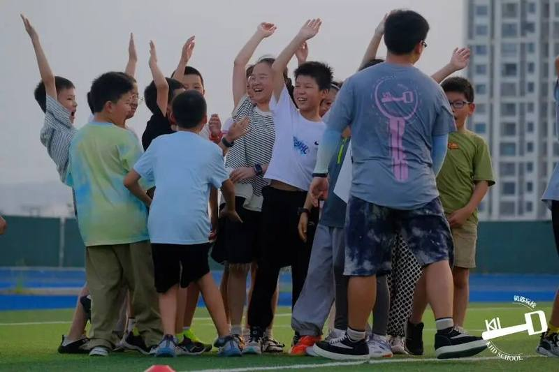</section></section></section></section></section><section style="display: inline-block;vertical-align: middle;width: 50%;align-self: center;flex: 0 0 auto;padding: 0px 0px 0px 5px;max-width: 100%;box-sizing: border-box;"><section style="max-width: 100%;margin-left: 0%;margin-right: 0%;box-sizing: border-box;"><section style="max-width: 100%;box-sizing: border-box;"><section style="line-height: 0;max-width: 100%;box-sizing: border-box;"><section style="max-width: 100%;vertical-align: middle;display: inline-block;line-height: 0;box-sizing: border-box;width: 100%;height: auto;">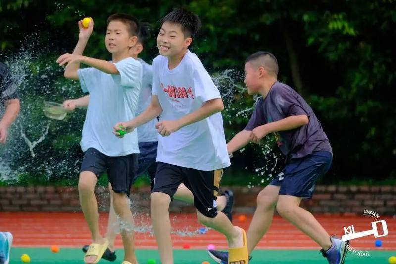</section></section></section></section></section></section></section></section><section style="box-sizing: border-box;font-style: normal;font-weight: 400;text-align: justify;font-size: 16px;color: rgb(62, 62, 62);"><section style="max-width: 100%;will-change: transform;box-sizing: border-box;"><section style="text-align: center;justify-content: center;display: flex;flex-flow: row;max-width: 100%;box-sizing: border-box;"><section style="display: inline-block;vertical-align: middle;width: 50%;align-self: center;flex: 0 0 auto;padding-right: 5px;max-width: 100%;box-sizing: border-box;margin: 5px 0px;"><section style="max-width: 100%;margin-left: 0%;margin-right: 0%;box-sizing: border-box;"><section style="max-width: 100%;box-sizing: border-box;"><section style="line-height: 0;max-width: 100%;box-sizing: border-box;"><section style="max-width: 100%;vertical-align: middle;display: inline-block;line-height: 0;box-sizing: border-box;width: 100%;height: auto;">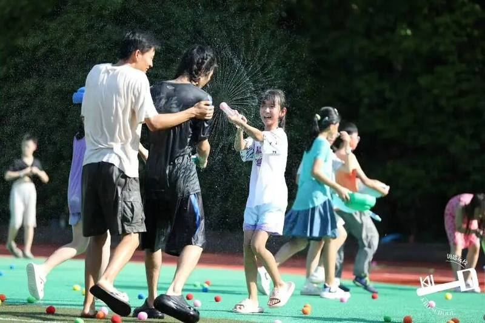</section></section></section></section></section><section style="display: inline-block;vertical-align: middle;width: 50%;align-self: center;flex: 0 0 auto;padding: 0px 0px 0px 5px;max-width: 100%;box-sizing: border-box;"><section style="max-width: 100%;margin-left: 0%;margin-right: 0%;box-sizing: border-box;"><section style="max-width: 100%;box-sizing: border-box;"><section style="line-height: 0;max-width: 100%;box-sizing: border-box;"><section style="max-width: 100%;vertical-align: middle;display: inline-block;line-height: 0;box-sizing: border-box;width: 100%;height: auto;">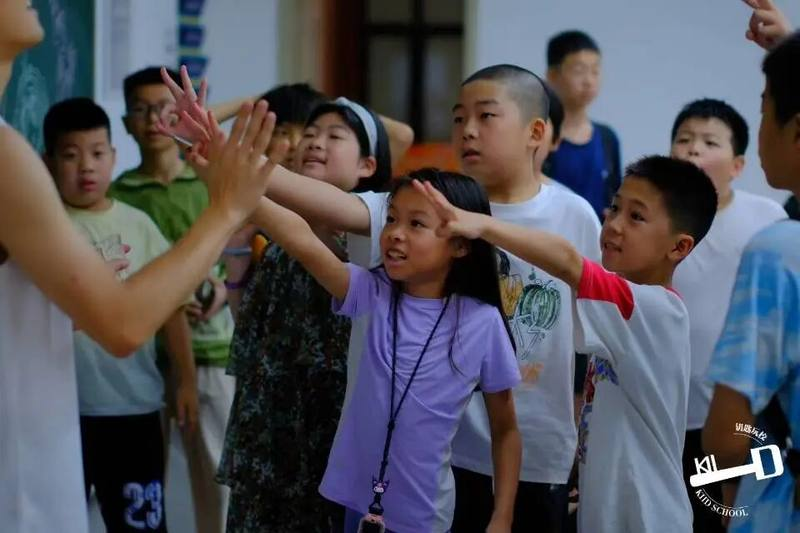</section></section></section></section></section></section></section></section><section style="box-sizing: border-box;font-style: normal;font-weight: 400;text-align: justify;font-size: 16px;color: rgb(62, 62, 62);"><section style="max-width: 100%;will-change: transform;box-sizing: border-box;"><section style="text-align: center;justify-content: center;display: flex;flex-flow: row;max-width: 100%;box-sizing: border-box;"><section style="display: inline-block;vertical-align: middle;width: 50%;align-self: center;flex: 0 0 auto;padding-right: 5px;max-width: 100%;box-sizing: border-box;margin: 5px 0px;"><section style="max-width: 100%;margin-left: 0%;margin-right: 0%;box-sizing: border-box;"><section style="max-width: 100%;box-sizing: border-box;"><section style="line-height: 0;max-width: 100%;box-sizing: border-box;"><section style="max-width: 100%;vertical-align: middle;display: inline-block;line-height: 0;box-sizing: border-box;width: 100%;height: auto;">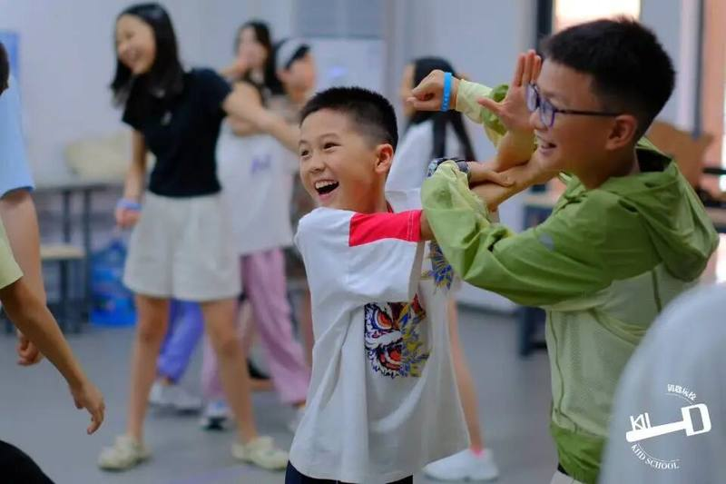</section></section></section></section></section><section style="display: inline-block;vertical-align: middle;width: 50%;align-self: center;flex: 0 0 auto;padding: 0px 0px 0px 5px;max-width: 100%;box-sizing: border-box;"><section style="max-width: 100%;margin-left: 0%;margin-right: 0%;box-sizing: border-box;"><section style="max-width: 100%;box-sizing: border-box;"><section style="line-height: 0;max-width: 100%;box-sizing: border-box;"><section style="max-width: 100%;vertical-align: middle;display: inline-block;line-height: 0;box-sizing: border-box;width: 100%;height: auto;">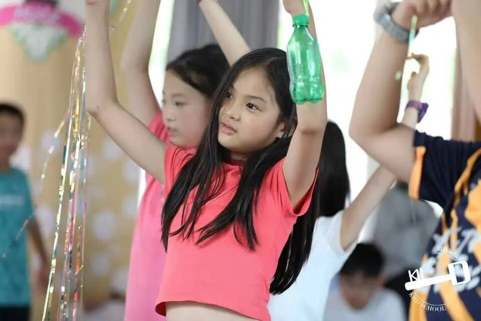</section></section></section></section></section></section></section></section><p style="white-space: normal;margin: 0px;padding: 0px;box-sizing: border-box;"><span><br/></span></p><section><span>今年夏天，学院制夏令营再度开启，整整</span><span style="font-style: normal;text-align: justify;font-size: 15px;line-height: 2;letter-spacing: 2px;color: rgb(241, 151, 0);font-weight: bold;box-sizing: border-box;">10天时间</span><span>里，营员会被分为</span><span style="font-style: normal;text-align: justify;font-size: 15px;line-height: 2;letter-spacing: 2px;color: rgb(241, 151, 0);font-weight: bold;box-sizing: border-box;">四个学院</span><span>，以</span><span style="font-style: normal;text-align: justify;font-size: 15px;line-height: 2;letter-spacing: 2px;color: rgb(241, 151, 0);font-weight: bold;box-sizing: border-box;">四种不同的风格</span><span>，分</span><span style="font-style: normal;text-align: justify;font-size: 15px;line-height: 2;letter-spacing: 2px;color: rgb(241, 151, 0);font-weight: bold;box-sizing: border-box;">三个阶段完成学习</span><span>的过程，最终在比赛场上见真章。</span></section><section><span><br/></span></section><section><span>古希腊的博雅教育有七艺之说。我们也将学习内容分为七大主题，名为</span><span style="font-style: normal;text-align: justify;font-size: 15px;line-height: 2;letter-spacing: 2px;color: rgb(241, 151, 0);font-weight: bold;box-sizing: border-box;">钥匙玩校七艺：逻</span><span style="font-style: normal;text-align: justify;font-size: 15px;line-height: 2;letter-spacing: 2px;color: rgb(241, 151, 0);font-weight: bold;box-sizing: border-box;">辑、语言、常识、运动</span><span style="font-style: normal;text-align: justify;font-size: 15px;line-height: 2;letter-spacing: 2px;color: rgb(241, 151, 0);font-weight: bold;box-sizing: border-box;">、生活、创造、休息。</span><span>通过通识游戏、七艺精进、结营比赛三个阶段，围绕钥匙玩校七艺将开展近400场活动，70种趣味比赛。</span></section><p style="white-space: normal;margin: 0px;padding: 0px;box-sizing: border-box;"><span><br/></span></p></section><section style="line-height: 0;box-sizing: border-box;"><section style="max-width: 100%;vertical-align: middle;display: inline-block;box-sizing: border-box;">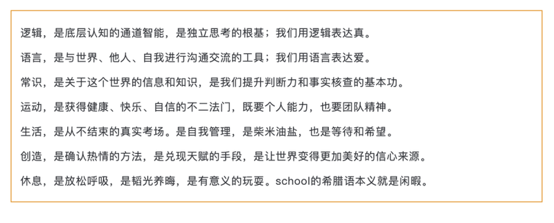</section></section><p style="white-space: normal;margin: 0px;padding: 0px;box-sizing: border-box;"><span><br/></span></p><section style="font-size: 15px;line-height: 2;letter-spacing: 2px;padding: 0px 10px;box-sizing: border-box;"><section><span style="font-size:15px;letter-spacing:2px;">德国教育研究部曾发布了一项名为“儿童认知世界”的研究，列出了一个7岁以上孩子应该具备的认知世界的经验清单。</span><span style="font-style: normal;text-align: justify;font-size: 15px;line-height: 2;letter-spacing: 2px;color: rgb(241, 151, 0);font-weight: bold;box-sizing: border-box;">清单内容涉及实际生活，社会经验，情感体验和美感感受。恰好这些经验清单涉及七艺的方方面面，也将成为学院制比赛的内容。</span></section><section><span style="font-size:15px;letter-spacing:2px;"><br/></span></section><section><span style="font-size:15px;letter-spacing:2px;">我们将比赛分为</span><span style="font-style: normal;text-align: justify;font-size: 15px;line-height: 2;letter-spacing: 2px;color: rgb(241, 151, 0);font-weight: bold;box-sizing: border-box;">现场竞技比赛</span><span style="font-size:15px;letter-spacing:2px;">和</span><span style="font-style: normal;text-align: justify;font-size: 15px;line-height: 2;letter-spacing: 2px;color: rgb(241, 151, 0);font-weight: bold;box-sizing: border-box;">持续性作品比赛</span><span style="font-size:15px;letter-spacing:2px;">两种形式。让不同风格的孩子，能力都能得到彰显，</span><span style="font-style: normal;text-align: justify;font-size: 15px;line-height: 2;letter-spacing: 2px;color: rgb(241, 151, 0);font-weight: bold;box-sizing: border-box;">让每个人都有机会离开自己的舒适区，从挑战和创造中发掘潜能，寻找自己。</span></section><p style="white-space: normal;margin: 0px;padding: 0px;box-sizing: border-box;"><span><br/></span></p><section style="box-sizing: border-box;font-style: normal;font-weight: 400;text-align: justify;font-size: 16px;color: rgb(62, 62, 62);"><section style="max-width: 100%;will-change: transform;box-sizing: border-box;"><section style="text-align: center;justify-content: center;display: flex;flex-flow: row;max-width: 100%;box-sizing: border-box;"><section style="display: inline-block;vertical-align: middle;width: 50%;align-self: center;flex: 0 0 auto;padding-right: 5px;max-width: 100%;box-sizing: border-box;margin: 5px 0px;"><section style="max-width: 100%;margin-left: 0%;margin-right: 0%;box-sizing: border-box;"><section style="max-width: 100%;box-sizing: border-box;"><section style="line-height: 0;max-width: 100%;box-sizing: border-box;"><section style="max-width: 100%;vertical-align: middle;display: inline-block;line-height: 0;box-sizing: border-box;width: 100%;height: auto;">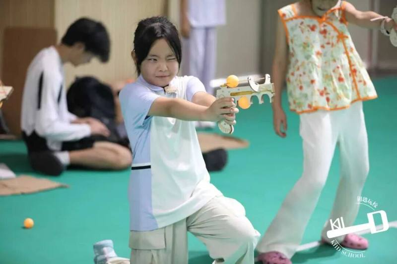</section></section></section></section></section><section style="display: inline-block;vertical-align: middle;width: 50%;align-self: center;flex: 0 0 auto;padding: 0px 0px 0px 5px;max-width: 100%;box-sizing: border-box;"><section style="max-width: 100%;margin-left: 0%;margin-right: 0%;box-sizing: border-box;"><section style="max-width: 100%;box-sizing: border-box;"><section style="line-height: 0;max-width: 100%;box-sizing: border-box;"><section style="max-width: 100%;vertical-align: middle;display: inline-block;line-height: 0;box-sizing: border-box;width: 100%;height: auto;">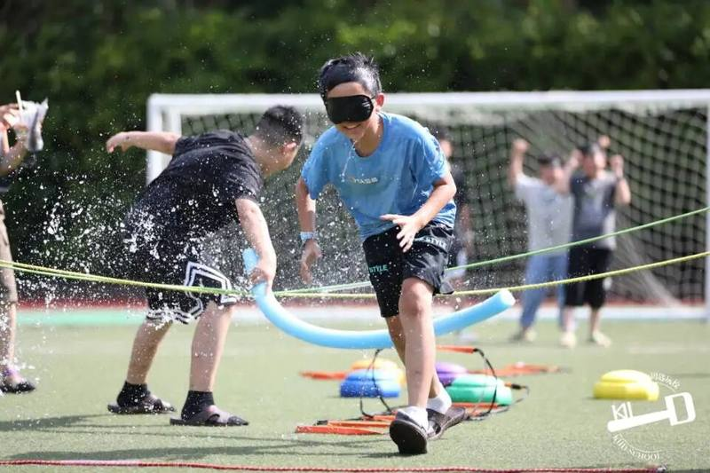</section></section></section></section></section></section></section></section><section style="box-sizing: border-box;font-style: normal;font-weight: 400;text-align: justify;font-size: 16px;color: rgb(62, 62, 62);"><section style="max-width: 100%;will-change: transform;box-sizing: border-box;"><section style="text-align: center;justify-content: center;display: flex;flex-flow: row;max-width: 100%;box-sizing: border-box;"><section style="display: inline-block;vertical-align: middle;width: 50%;align-self: center;flex: 0 0 auto;padding-right: 5px;max-width: 100%;box-sizing: border-box;margin: 5px 0px;"><section style="max-width: 100%;margin-left: 0%;margin-right: 0%;box-sizing: border-box;"><section style="max-width: 100%;box-sizing: border-box;"><section style="line-height: 0;max-width: 100%;box-sizing: border-box;"><section style="max-width: 100%;vertical-align: middle;display: inline-block;line-height: 0;box-sizing: border-box;width: 100%;height: auto;">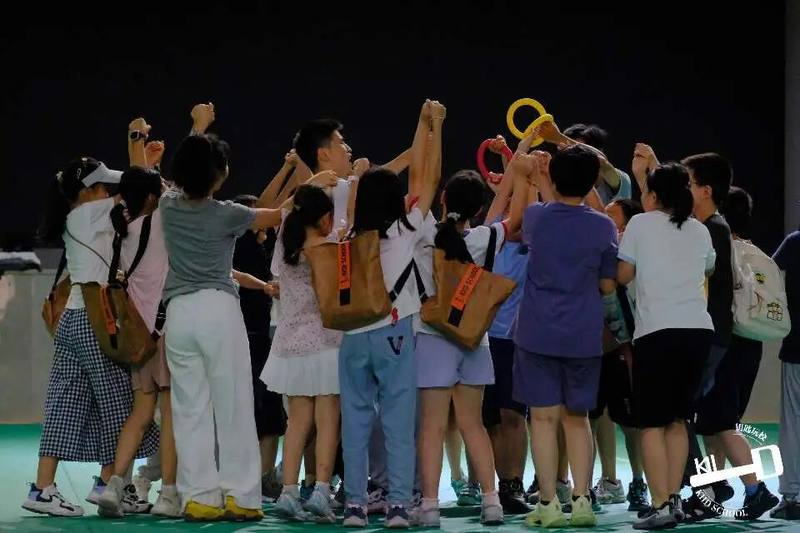</section></section></section></section></section><section style="display: inline-block;vertical-align: middle;width: 50%;align-self: center;flex: 0 0 auto;padding: 0px 0px 0px 5px;max-width: 100%;box-sizing: border-box;"><section style="max-width: 100%;margin-left: 0%;margin-right: 0%;box-sizing: border-box;"><section style="max-width: 100%;box-sizing: border-box;"><section style="line-height: 0;max-width: 100%;box-sizing: border-box;"><section style="max-width: 100%;vertical-align: middle;display: inline-block;line-height: 0;box-sizing: border-box;width: 100%;height: auto;">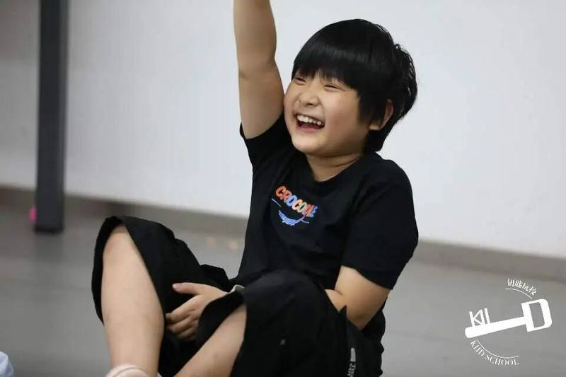</section></section></section></section></section></section></section></section><section style="box-sizing: border-box;font-style: normal;font-weight: 400;text-align: justify;font-size: 16px;color: rgb(62, 62, 62);"><section style="max-width: 100%;will-change: transform;box-sizing: border-box;"><section style="text-align: center;justify-content: center;display: flex;flex-flow: row;max-width: 100%;box-sizing: border-box;"><section style="display: inline-block;vertical-align: middle;width: 50%;align-self: center;flex: 0 0 auto;padding-right: 5px;max-width: 100%;box-sizing: border-box;margin: 5px 0px;"><section style="max-width: 100%;margin-left: 0%;margin-right: 0%;box-sizing: border-box;"><section style="max-width: 100%;box-sizing: border-box;"><section style="line-height: 0;max-width: 100%;box-sizing: border-box;"><section style="max-width: 100%;vertical-align: middle;display: inline-block;line-height: 0;box-sizing: border-box;width: 100%;height: auto;">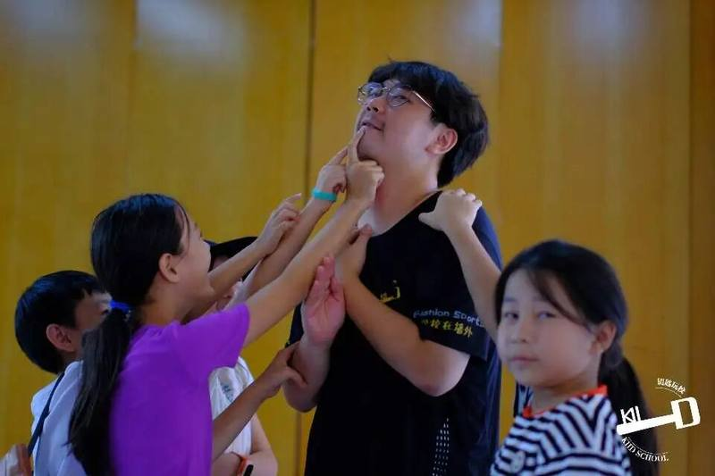</section></section></section></section></section><section style="display: inline-block;vertical-align: middle;width: 50%;align-self: center;flex: 0 0 auto;padding: 0px 0px 0px 5px;max-width: 100%;box-sizing: border-box;"><section style="max-width: 100%;margin-left: 0%;margin-right: 0%;box-sizing: border-box;"><section style="max-width: 100%;box-sizing: border-box;"><section style="line-height: 0;max-width: 100%;box-sizing: border-box;"><section style="max-width: 100%;vertical-align: middle;display: inline-block;line-height: 0;box-sizing: border-box;width: 100%;height: auto;">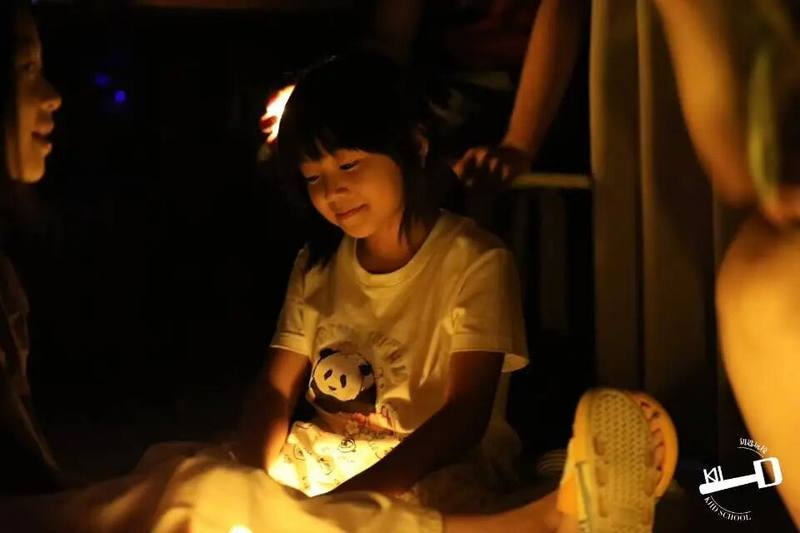</section></section></section></section></section></section></section></section><p style="white-space: normal;margin: 0px;padding: 0px;box-sizing: border-box;"><span><br/></span></p><p style="white-space: normal;margin: 0px;padding: 0px;box-sizing: border-box;"><span>时常有家长说，孩子上小学之后，眼里的光就渐渐消失了。听着实在让人心疼！9-12岁的孩子，他们不只是“小一点”的青少年，而是处在人生中极为关键的奠基期：个性初显、好奇心旺盛、自我意识萌芽、初步独立，需要被理解和引导。</span></p><p style="white-space: normal;margin: 0px;padding: 0px;box-sizing: border-box;"><span><br/></span></p><p style="white-space: normal;margin: 0px;padding: 0px;box-sizing: border-box;"><span>哈佛大学托尼·瓦格纳教授在《创新者的培养》一书中揭示了美国年轻有为的创新者的成长规律：</span></p><p style="white-space: normal;margin: 0px;padding: 0px;box-sizing: border-box;"><span><br/></span></p><p style="white-space: normal;margin: 0px;padding: 0px;box-sizing: border-box;"><span>童年时期有意义的玩耍；</span></p><p style="white-space: normal;margin: 0px;padding: 0px;box-sizing: border-box;"><span>青少年时期带着激情的寻找；</span></p><p style="white-space: normal;margin: 0px;padding: 0px;box-sizing: border-box;"><span>以及成年后形成的觉悟。</span></p><p style="white-space: normal;margin: 0px;padding: 0px;box-sizing: border-box;"><span><br/></span></p><p style="white-space: normal;margin: 0px;padding: 0px;box-sizing: border-box;"><span>这个年纪的孩子，最需要的不是急于奔赴“成功”或追赶“目标”，而是拥有一段真正属于童年的时光——在自由而富有创造力的玩耍中，尽情探索世界、感受生活。</span><span style="color: rgb(241, 151, 0);box-sizing: border-box;"><strong style="box-sizing: border-box;"><span>在一次次尝试与失败中，建立自我效能感，获得发自内心的“我可以”的力量。</span></strong></span></p><p style="white-space: normal;margin: 0px;padding: 0px;box-sizing: border-box;"><span><br/></span></p><p style="white-space: normal;margin: 0px;padding: 0px;box-sizing: border-box;"><span>这种通过亲身体验积累下来的自信与光亮，不会因为考试分数而动摇，也不会在风雨来临时轻易褪色——它们将成为孩子面对未来不确定世界的</span><span style="color: rgb(241, 151, 0);box-sizing: border-box;"><strong style="box-sizing: border-box;"><span>底层安全感</span></strong></span><span>，在关键时刻支撑他们更从容地选择方向，更坚定地走向人生的远方。</span></p><p style="white-space: normal;margin: 0px;padding: 0px;box-sizing: border-box;"><span><br/></span></p><p style="white-space: normal;margin: 0px;padding: 0px;box-sizing: border-box;"><span style="color: rgb(241, 151, 0);box-sizing: border-box;"><strong style="box-sizing: border-box;"><span>钥匙玩校学院制夏令营，特别适合好学的、有自己想法的、不太听话的、贪玩的孩子，适合学霸，也适合学渣，适合社牛，也适合社恐，更适合每一个渴望交朋友的少年。</span></strong></span></p></section><p style="white-space: normal;margin: 0px;padding: 0px;box-sizing: border-box;"><span><br/></span></p><section style="text-align: center;margin-top: 10px;margin-bottom: 10px;line-height: 0;box-sizing: border-box;"><section style="max-width: 100%;vertical-align: middle;display: inline-block;width: 25%;height: auto;box-sizing: border-box;"></section></section><section style="text-align: center;font-size: 18px;color: rgb(241, 151, 0);line-height: 2;letter-spacing: 2px;padding: 0px 10px;box-sizing: border-box;"><p style="margin: 0px;padding: 0px;box-sizing: border-box;"><strong style="box-sizing: border-box;"><span>「每日安排」</span></strong></p></section><p style="white-space: normal;margin: 0px;padding: 0px;box-sizing: border-box;"><span><br/></span></p><section style="font-size: 15px;line-height: 2;letter-spacing: 1px;padding: 0px 10px;box-sizing: border-box;"><p style="text-align: center;white-space: normal;margin: 0px;padding: 0px;box-sizing: border-box;"><span style="font-size: 14px;box-sizing: border-box;"><span>（以下内容以做参考，具体内容以现场执行为准）</span></span></p></section><section style="line-height: 0;box-sizing: border-box;"><section style="max-width: 100%;vertical-align: middle;display: inline-block;box-sizing: border-box;">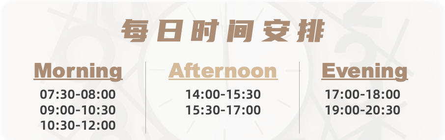</section></section><p style="white-space: normal;margin: 0px;padding: 0px;box-sizing: border-box;"><span><br/></span></p><section style="max-width: 100%;display: inline-block;flex: 100 100 0%;align-self: flex-start;vertical-align: top;box-sizing: border-box;"><section style="height: auto;border-style: solid;border-width: 0px 0px 0px 16px;border-left-color: rgb(255, 169, 0);padding-left: 10px;box-sizing: border-box;max-width: 100%;text-align: left;"><section style="max-width: 100%;margin-bottom: 10px;box-sizing: border-box;"><section style="max-width: 100%;box-sizing: border-box;"><section style="text-align: justify;color: rgb(241, 150, 0);max-width: 100%;box-sizing: border-box;"><p style="white-space: normal;margin: 0px;padding: 0px;box-sizing: border-box;"><span style="box-sizing: border-box;"><strong style="box-sizing: border-box;"><span>DAY 1 开营分院</span></strong></span></p></section></section></section></section></section><p style="white-space: normal;margin: 0px;padding: 0px;box-sizing: border-box;"><span><br/></span></p><section style="text-align: unset;font-size: 15px;line-height: 2;letter-spacing: 2px;padding: 0px 10px;box-sizing: border-box;"><p style="margin: 0px;padding: 0px;box-sizing: border-box;"><span style="box-sizing: border-box;"><span>来自全国各地的营员欢聚一堂，根据各自的天赋、热情和风格，神奇的分院帽将营员分入钥匙玩校四大学院。学院将举行自己的特色开营活动。</span></span></p></section><p style="white-space: normal;margin: 0px;padding: 0px;box-sizing: border-box;"><span><br/></span></p><section style="text-align: left;justify-content: flex-start;display: flex;flex-flow: row;box-sizing: border-box;"><section style="display: inline-block;vertical-align: top;width: 50%;align-self: flex-start;flex: 0 0 auto;padding: 0px 5px 0px 0px;margin: 5px 0px;box-sizing: border-box;"><section style="line-height: 0;box-sizing: border-box;"><section style="max-width: 100%;vertical-align: middle;display: inline-block;box-sizing: border-box;">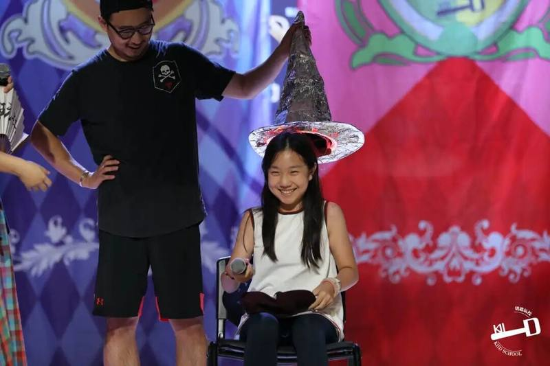</section></section></section><section style="display: inline-block;vertical-align: top;width: 50%;align-self: flex-start;flex: 0 0 auto;margin: 5px 0px;padding: 0px 0px 0px 5px;box-sizing: border-box;"><section style="line-height: 0;box-sizing: border-box;"><section style="max-width: 100%;vertical-align: middle;display: inline-block;box-sizing: border-box;">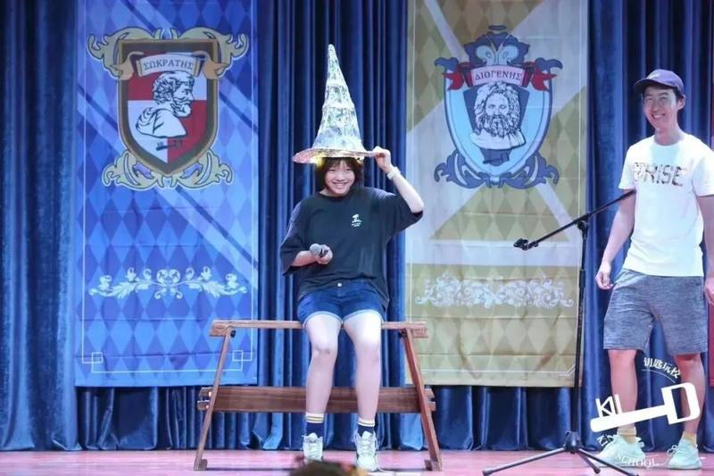</section></section></section></section><p style="white-space: normal;margin: 0px;padding: 0px;box-sizing: border-box;"><span><br/></span></p><section style="max-width: 100%;display: inline-block;flex: 100 100 0%;align-self: flex-start;vertical-align: top;box-sizing: border-box;"><section style="height: auto;border-style: solid;border-width: 0px 0px 0px 16px;border-left-color: rgb(245, 177, 63);padding-left: 10px;box-sizing: border-box;max-width: 100%;text-align: left;"><section style="max-width: 100%;margin-bottom: 10px;box-sizing: border-box;"><section style="max-width: 100%;box-sizing: border-box;"><section style="text-align: justify;color: rgb(245, 177, 63);max-width: 100%;box-sizing: border-box;"><p style="white-space: normal;margin: 0px;padding: 0px;box-sizing: border-box;"><strong style="box-sizing: border-box;"><span>DAY 2-3 第一阶段：通识游戏</span></strong></p></section></section></section></section></section><p style="white-space: normal;margin: 0px;padding: 0px;box-sizing: border-box;"><span><br/></span></p><section style="text-align: unset;font-size: 15px;line-height: 2;letter-spacing: 2px;padding: 0px 10px;box-sizing: border-box;"><p style="margin: 0px;padding: 0px;box-sizing: border-box;"><span>以走班制进行学院内部的通识课程及学院建设。在共学的过程里结识志同道合的好友。</span></p><p style="margin: 0px;padding: 0px;box-sizing: border-box;"><span><br/></span></p><p style="margin: 0px;padding: 0px;box-sizing: border-box;"><span style="font-size: 14px;box-sizing: border-box;"><span>活动项目：</span></span></p><p style="margin: 0px;padding: 0px;box-sizing: border-box;"><span style="font-size: 14px;box-sizing: border-box;"><span>-逻辑</span></span></p><p style="margin: 0px;padding: 0px;box-sizing: border-box;"><span style="font-size: 14px;box-sizing: border-box;"><span>笨蛋三段论</span></span></p><p style="margin: 0px;padding: 0px;box-sizing: border-box;"><span style="font-size: 14px;box-sizing: border-box;"><span>-语言</span></span></p><p style="margin: 0px;padding: 0px;box-sizing: border-box;"><span style="font-size: 14px;box-sizing: border-box;"><span>即兴戏剧</span></span></p><p style="margin: 0px;padding: 0px;box-sizing: border-box;"><span style="font-size: 14px;box-sizing: border-box;"><span>-常识</span></span></p><p style="margin: 0px;padding: 0px;box-sizing: border-box;"><span style="font-size: 14px;box-sizing: border-box;"><span>人类群星闪耀时</span></span></p><p style="margin: 0px;padding: 0px;box-sizing: border-box;"><span style="font-size: 14px;box-sizing: border-box;"><span>-运动</span></span></p><p style="margin: 0px;padding: 0px;box-sizing: border-box;"><span style="font-size: 14px;box-sizing: border-box;"><span>成长性玩耍：Baggo、极限飞盘</span></span></p><p style="margin: 0px;padding: 0px;box-sizing: border-box;"><span style="font-size: 14px;box-sizing: border-box;"><span>-生活</span></span></p><p style="margin: 0px;padding: 0px;box-sizing: border-box;"><span style="font-size: 14px;box-sizing: border-box;"><span>时间管理与自我照顾</span></span></p><p style="margin: 0px;padding: 0px;box-sizing: border-box;"><span style="font-size: 14px;box-sizing: border-box;"><span>-创造</span></span></p><p style="margin: 0px;padding: 0px;box-sizing: border-box;"><span style="font-size: 14px;box-sizing: border-box;"><span>制作原力光剑</span></span></p><p style="margin: 0px;padding: 0px;box-sizing: border-box;"><span style="font-size: 14px;box-sizing: border-box;"><span>-休息</span></span></p><p style="margin: 0px;padding: 0px;box-sizing: border-box;"><span>高效能摆烂与高质量躺平</span></p></section><p style="white-space: normal;margin: 0px;padding: 0px;box-sizing: border-box;"><span><br/></span></p><section style="text-align: left;justify-content: flex-start;display: flex;flex-flow: row;box-sizing: border-box;"><section style="display: inline-block;vertical-align: top;width: 50%;align-self: flex-start;flex: 0 0 auto;margin: 5px 0px;padding: 0px 5px 0px 0px;box-sizing: border-box;"><section style="line-height: 0;box-sizing: border-box;"><section style="max-width: 100%;vertical-align: middle;display: inline-block;box-sizing: border-box;">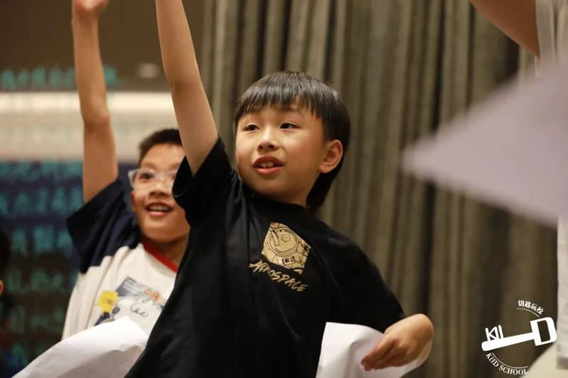</section></section></section><section style="display: inline-block;vertical-align: top;width: 50%;align-self: flex-start;flex: 0 0 auto;padding: 0px 0px 0px 5px;margin: 5px 0px;box-sizing: border-box;"><section style="line-height: 0;box-sizing: border-box;"><section style="max-width: 100%;vertical-align: middle;display: inline-block;box-sizing: border-box;">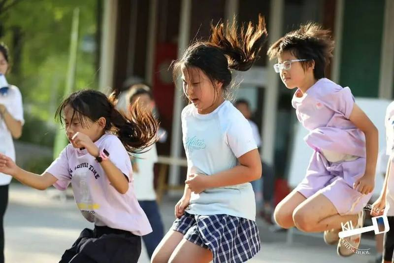</section></section></section></section><p style="white-space: normal;margin: 0px;padding: 0px;box-sizing: border-box;"><span><br/></span></p><section style="max-width: 100%;display: inline-block;flex: 100 100 0%;align-self: flex-start;vertical-align: top;box-sizing: border-box;"><section style="height: auto;border-style: solid;border-width: 0px 0px 0px 16px;border-left-color: rgb(245, 177, 63);padding-left: 10px;box-sizing: border-box;max-width: 100%;text-align: left;"><section style="max-width: 100%;margin-bottom: 10px;box-sizing: border-box;"><section style="max-width: 100%;box-sizing: border-box;"><section style="text-align: justify;color: rgb(241, 150, 0);max-width: 100%;box-sizing: border-box;"><p style="white-space: normal;margin: 0px;padding: 0px;box-sizing: border-box;"><strong style="box-sizing: border-box;"><span>DAY 4-6 第二阶段：七艺精进</span></strong></p></section></section></section></section></section><p style="white-space: normal;margin: 0px;padding: 0px;box-sizing: border-box;"><span><br/></span></p><section style="text-align: unset;font-size: 15px;line-height: 2;letter-spacing: 2px;padding: 0px 10px;box-sizing: border-box;"><p style="margin: 0px;padding: 0px;box-sizing: border-box;"><span>丰富的活动内容将围绕逻辑、语言、常识、运动、生活、创造、休息七项素养充分展开，预计会有超过60项不同的活动分布在营地各处。营员们将根据自己的兴趣和团队的需要，在我们的个性化学习系统中自主安排这几天的学习计划。</span></p><p style="margin: 0px;padding: 0px;box-sizing: border-box;"><span><br/></span></p><p style="margin: 0px;padding: 0px;box-sizing: border-box;"><span style="font-size: 14px;box-sizing: border-box;"><span>活动项目：让压岁钱钱生钱、等离子大炮、和动物一起做瑜伽、会写诗的孩子不会砸玻璃、建筑模型搭建、魁地奇、冰鲜柠檬汁、彩铅美甲、伤痕累累、玩个毛线、概率游戏、这也是运动？！、快手阿修、躺平看漫画、活了100万次的猫、PVC弓箭、如果国宝会说话、簪娘初体验、小学生vlog、死亡的艺术、听又听不懂/吵又吵不赢、乐理入门……</span></span></p><p style="margin: 0px;padding: 0px;box-sizing: border-box;"><span style="font-size: 14px;box-sizing: border-box;"><span><br/></span></span></p><p style="margin: 0px;padding: 0px;box-sizing: border-box;"><span style="font-size: 14px;box-sizing: border-box;"><span>（实际选修项目以现场情况为准）</span></span></p></section><p style="white-space: normal;margin: 0px;padding: 0px;box-sizing: border-box;"><span><br/></span></p><section style="text-align: left;justify-content: flex-start;display: flex;flex-flow: row;box-sizing: border-box;"><section style="display: inline-block;vertical-align: top;width: 50%;align-self: flex-start;flex: 0 0 auto;margin: 5px 0px;padding: 0px 5px 0px 0px;box-sizing: border-box;"><section style="line-height: 0;box-sizing: border-box;"><section style="max-width: 100%;vertical-align: middle;display: inline-block;box-sizing: border-box;">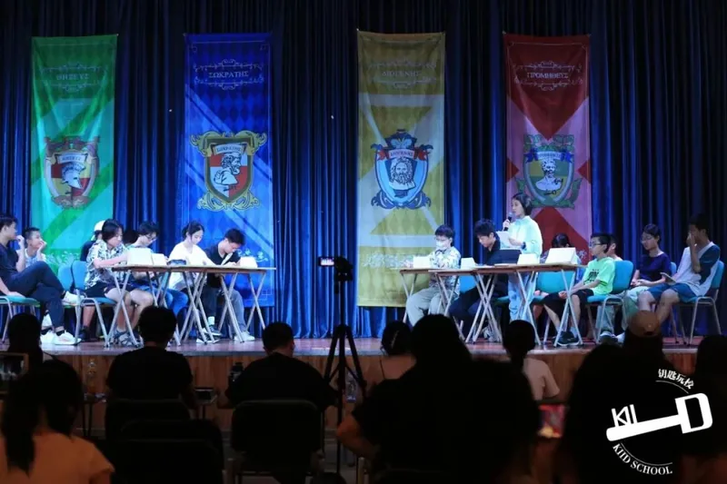</section></section></section><section style="display: inline-block;vertical-align: top;width: 50%;align-self: flex-start;flex: 0 0 auto;margin: 5px 0px;padding: 0px 0px 0px 5px;box-sizing: border-box;"><section style="line-height: 0;box-sizing: border-box;"><section style="max-width: 100%;vertical-align: middle;display: inline-block;box-sizing: border-box;">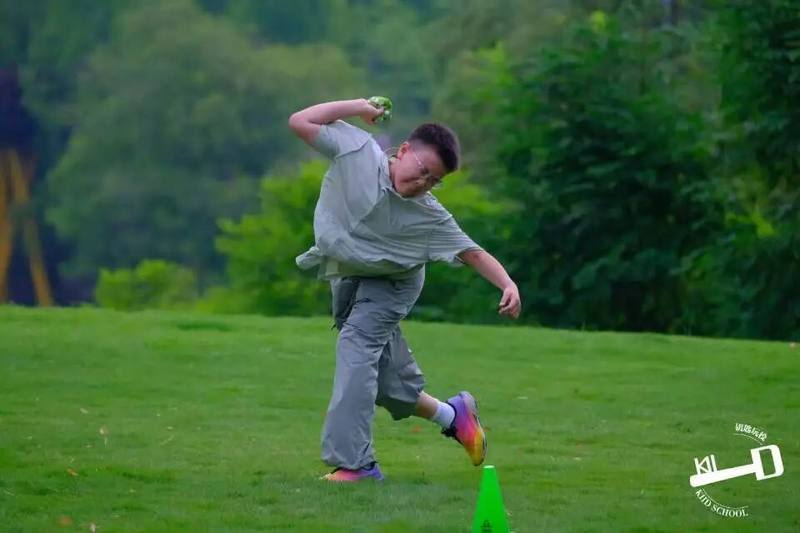</section></section></section></section><p style="white-space: normal;margin: 0px;padding: 0px;box-sizing: border-box;"><span><br/></span></p><section style="max-width: 100%;display: inline-block;flex: 100 100 0%;align-self: flex-start;vertical-align: top;box-sizing: border-box;"><section style="height: auto;border-style: solid;border-width: 0px 0px 0px 16px;border-left-color: rgb(245, 177, 63);padding-left: 10px;box-sizing: border-box;max-width: 100%;text-align: left;"><section style="max-width: 100%;margin-bottom: 10px;box-sizing: border-box;"><section style="max-width: 100%;box-sizing: border-box;"><section style="text-align: justify;color: rgb(241, 150, 0);max-width: 100%;box-sizing: border-box;"><p style="white-space: normal;margin: 0px;padding: 0px;box-sizing: border-box;"><strong style="box-sizing: border-box;"><span>DAY 7  上午 GAP DAY 自由半日</span></strong></p></section></section></section></section></section><p style="white-space: normal;margin: 0px;padding: 0px;box-sizing: border-box;"><span><br/></span></p><section style="font-size: 15px;line-height: 2;letter-spacing: 2px;padding: 0px 10px;box-sizing: border-box;"><p style="white-space: normal;margin: 0px;padding: 0px;box-sizing: border-box;"><span>钥匙玩校原创，营员可以开课、选课，在自由选择中学习时间管理。累积已开设过近1000项活动。</span></p><p style="white-space: normal;margin: 0px;padding: 0px;box-sizing: border-box;"><span><br/></span></p><p style="white-space: normal;margin: 0px;padding: 0px;box-sizing: border-box;"><span style="font-size: 14px;box-sizing: border-box;"><span>往期开设项目：魔术课、低科技小组、如何设计一所学校、经典扫雷课、如何快速学习一门乐器、游戏课、拍电影、手绘课、教你学重庆话、乡野夜游、如何写诗、野地探险、泥地摔跤、建树屋、手帐课、环游世界、自制冰箱、自制空气净化器、桌游流水席、刻橡皮章……</span></span></p></section><p style="white-space: normal;margin: 0px;padding: 0px;box-sizing: border-box;"><span><br/></span></p><section style="line-height: 0;box-sizing: border-box;"><section style="max-width: 100%;vertical-align: middle;display: inline-block;box-sizing: border-box;">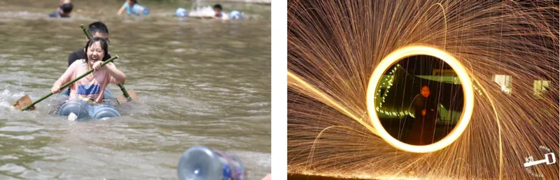</section></section><p style="white-space: normal;margin: 0px;padding: 0px;box-sizing: border-box;"><span><br/></span></p><section style="max-width: 100%;display: inline-block;flex: 100 100 0%;align-self: flex-start;vertical-align: top;box-sizing: border-box;"><section style="height: auto;border-style: solid;border-width: 0px 0px 0px 16px;border-left-color: rgb(245, 177, 63);padding-left: 10px;box-sizing: border-box;max-width: 100%;text-align: left;"><section style="max-width: 100%;margin-bottom: 10px;box-sizing: border-box;"><section style="max-width: 100%;box-sizing: border-box;"><section style="text-align: justify;color: rgb(245, 177, 63);max-width: 100%;box-sizing: border-box;"><p style="white-space: normal;margin: 0px;padding: 0px;box-sizing: border-box;"><strong style="box-sizing: border-box;"><span>DAY 7下午-DAY 9 第三阶段：“学院杯”比赛</span></strong></p></section></section></section></section></section><p style="white-space: normal;margin: 0px;padding: 0px;box-sizing: border-box;"><span><br/></span></p><section style="text-align: unset;font-size: 15px;line-height: 2;letter-spacing: 2px;padding: 0px 10px;box-sizing: border-box;"><p style="margin: 0px;padding: 0px;box-sizing: border-box;"><span style="box-sizing: border-box;"><span>游戏式的比赛，真才实学的较量，通过累积积分，决出获胜学院以及学院MVP。</span></span></p></section><p style="white-space: normal;margin: 0px;padding: 0px;box-sizing: border-box;"><span><br/></span></p><section style="text-align: left;justify-content: flex-start;display: flex;flex-flow: row;box-sizing: border-box;"><section style="display: inline-block;vertical-align: top;width: 50%;align-self: flex-start;flex: 0 0 auto;margin: 5px 0px;padding: 0px 5px 0px 0px;box-sizing: border-box;"><section style="line-height: 0;box-sizing: border-box;"><section style="max-width: 100%;vertical-align: middle;display: inline-block;box-sizing: border-box;">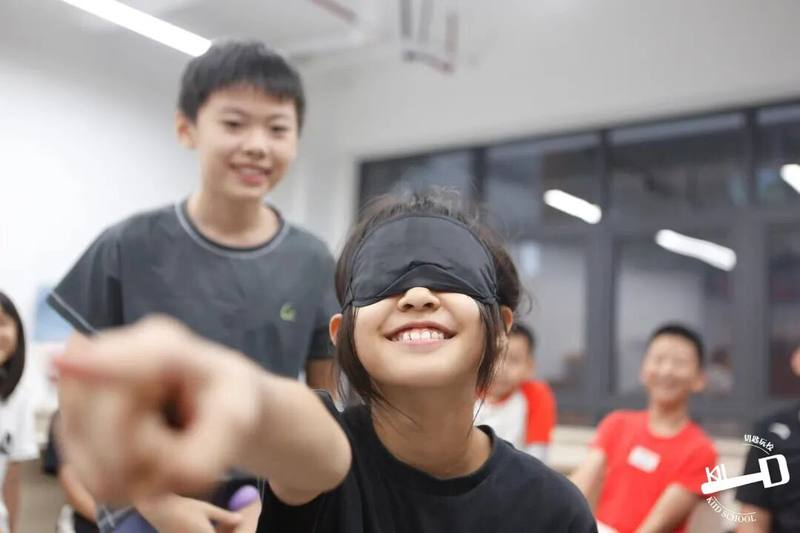</section></section></section><section style="display: inline-block;vertical-align: top;width: 50%;align-self: flex-start;flex: 0 0 auto;margin: 5px 0px;padding: 0px 0px 0px 5px;box-sizing: border-box;"><section style="line-height: 0;box-sizing: border-box;"><section style="max-width: 100%;vertical-align: middle;display: inline-block;box-sizing: border-box;">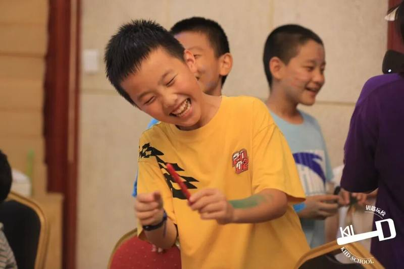</section></section></section></section><p style="white-space: normal;margin: 0px;padding: 0px;box-sizing: border-box;"><span><br/></span></p><section style="display: flex;width: 100%;flex-flow: column;box-sizing: border-box;"><section style="z-index: 1;box-sizing: border-box;"><section style="text-align: left;justify-content: flex-start;display: flex;flex-flow: row;margin: 0px 0px 10px;width: 100%;align-self: flex-start;background-color: rgba(255, 245, 209, 0.42);padding: 19px;box-sizing: border-box;"><section style="text-align: justify;font-size: 14px;line-height: 2;letter-spacing: 2px;padding: 0px 10px;width: 100%;box-sizing: border-box;"><p style="text-align: center;white-space: normal;margin: 0px;padding: 0px;box-sizing: border-box;"><strong style="box-sizing: border-box;"><span>学院杯项目不完全清</span><span style="box-sizing: border-box;"><span>单</span></span></strong></p><p style="white-space: normal;margin: 0px;padding: 0px;box-sizing: border-box;"><span><br/></span></p><p style="white-space: normal;margin: 0px;padding: 0px;box-sizing: border-box;"><strong style="box-sizing: border-box;"><span>-逻辑比赛</span></strong></p><p style="white-space: normal;margin: 0px;padding: 0px;box-sizing: border-box;"><span><br/></span></p><p style="white-space: normal;margin: 0px;padding: 0px;box-sizing: border-box;"><span>baggo象棋、达芬奇密码、《逻辑对决》、腹腔镜折千纸鹤、真人扫雷、地图推理、脑筋急转弯......</span></p><p style="white-space: normal;margin: 0px;padding: 0px;box-sizing: border-box;"><span><br/></span></p><p style="white-space: normal;margin: 0px;padding: 0px;box-sizing: border-box;"><strong style="box-sizing: border-box;"><span>-语言比赛</span></strong></p><p style="white-space: normal;margin: 0px;padding: 0px;box-sizing: border-box;"><span><br/></span></p><p style="white-space: normal;margin: 0px;padding: 0px;box-sizing: border-box;"><span>野生rapper、流水账大赛、节奏识曲、谁是卧底、你划/画我猜、最强声优、搞笑动物王国、四格漫画、Emoji猜成语、秘密传声筒……</span></p><p style="white-space: normal;margin: 0px;padding: 0px;box-sizing: border-box;"><span><br/></span></p><p style="white-space: normal;margin: 0px;padding: 0px;box-sizing: border-box;"><strong style="box-sizing: border-box;"><span>-常识比赛</span></strong></p><p style="white-space: normal;margin: 0px;padding: 0px;box-sizing: border-box;"><span><br/></span></p><p style="white-space: normal;margin: 0px;padding: 0px;box-sizing: border-box;"><span>灯谜擂台、30秒记忆王、知识竞赛、成语接龙、金鸡独立知识竞赛、字字转机、名人的脸、你好，菜、环游世界、云逛超市......</span></p><p style="white-space: normal;margin: 0px;padding: 0px;box-sizing: border-box;"><span><br/></span></p><p style="white-space: normal;margin: 0px;padding: 0px;box-sizing: border-box;"><strong style="box-sizing: border-box;"><span>-运动比赛</span></strong></p><p style="white-space: normal;margin: 0px;padding: 0px;box-sizing: border-box;"><span><br/></span></p><p style="white-space: normal;margin: 0px;padding: 0px;box-sizing: border-box;"><span>极限飞盘、拔河、baggo、躲避球、竞技三子棋、推手相扑、篮球3v3、大河起舞、滚铁环、猫鼠大逃杀......</span></p><p style="white-space: normal;margin: 0px;padding: 0px;box-sizing: border-box;"><span><br/></span></p><p style="white-space: normal;margin: 0px;padding: 0px;box-sizing: border-box;"><strong style="box-sizing: border-box;"><span>-生活比赛</span></strong></p><p style="white-space: normal;margin: 0px;padding: 0px;box-sizing: border-box;"><span><br/></span></p><p style="white-space: normal;margin: 0px;padding: 0px;box-sizing: border-box;"><span>吹泡泡大赛、限时叠衣服、360桌面清理大师、盲行、最强嗅觉、吃瓜、原地踏步、拧螺丝、找北、挤地铁技能初训......</span></p><p style="white-space: normal;margin: 0px;padding: 0px;box-sizing: border-box;"><span><br/></span></p><p style="white-space: normal;margin: 0px;padding: 0px;box-sizing: border-box;"><strong style="box-sizing: border-box;"><span>-创造比赛</span></strong></p><p style="white-space: normal;margin: 0px;padding: 0px;box-sizing: border-box;"><span><br/></span></p><p style="white-space: normal;margin: 0px;padding: 0px;box-sizing: border-box;"><span>人形电影海报cos大赛、AI绘画、纸飞机、金钥匙电影节、摄影王者、多米诺骨牌、纸牌塔挑战……</span></p><p style="white-space: normal;margin: 0px;padding: 0px;box-sizing: border-box;"><span><br/></span></p><p style="white-space: normal;margin: 0px;padding: 0px;box-sizing: border-box;"><strong style="box-sizing: border-box;"><span>-休息比赛</span></strong></p><p style="white-space: normal;margin: 0px;padding: 0px;box-sizing: border-box;"><span><br/></span></p><p style="white-space: normal;margin: 0px;padding: 0px;box-sizing: border-box;"><span>德国心脏病 、步步为营、五子棋、拉密、角斗士、扇风、躺平、四连棋、蛋仔派对......</span></p><p style="white-space: normal;margin: 0px;padding: 0px;box-sizing: border-box;"><span><br/></span></p><p style="white-space: normal;margin: 0px;padding: 0px;box-sizing: border-box;"><strong style="box-sizing: border-box;"><span>-持续性作品比赛</span></strong></p><p style="white-space: normal;margin: 0px;padding: 0px;box-sizing: border-box;"><span><br/></span></p><p style="white-space: normal;margin: 0px;padding: 0px;box-sizing: border-box;"><span>画展、写作、内务整理、玩校奥斯卡奖、玩校普利策奖、玩校格莱美奖、玩校诺贝尔奖、搞笑诺贝尔奖、动画、换物大赛、自然志、福布斯排行榜、哥德堡机器、服装设计、发型设计、极限挑战……</span></p><p style="white-space: normal;margin: 0px;padding: 0px;box-sizing: border-box;"><span><br/></span></p><p style="white-space: normal;margin: 0px;padding: 0px;box-sizing: border-box;"><span>（实际比赛项目以现场情况为准）</span></p></section></section></section></section><p style="white-space: normal;margin: 0px;padding: 0px;box-sizing: border-box;"><span><br/></span></p><section style="text-align: left;justify-content: flex-start;display: flex;flex-flow: row;box-sizing: border-box;"><section style="display: inline-block;vertical-align: top;width: 50%;align-self: flex-start;flex: 0 0 auto;margin: 5px 0px;padding: 0px 5px 0px 0px;box-sizing: border-box;"><section style="line-height: 0;box-sizing: border-box;"><section style="max-width: 100%;vertical-align: middle;display: inline-block;box-sizing: border-box;">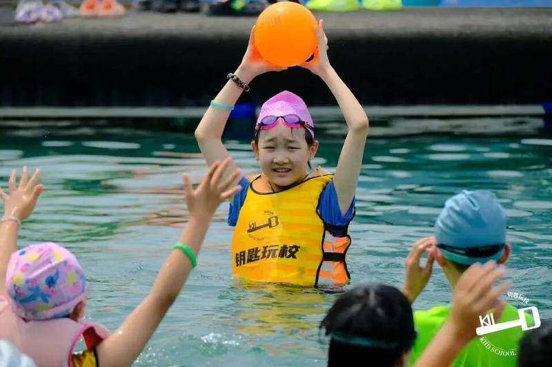</section></section></section><section style="display: inline-block;vertical-align: top;width: 50%;align-self: flex-start;flex: 0 0 auto;margin: 5px 0px;padding: 0px 0px 0px 5px;box-sizing: border-box;"><section style="line-height: 0;box-sizing: border-box;"><section style="max-width: 100%;vertical-align: middle;display: inline-block;box-sizing: border-box;">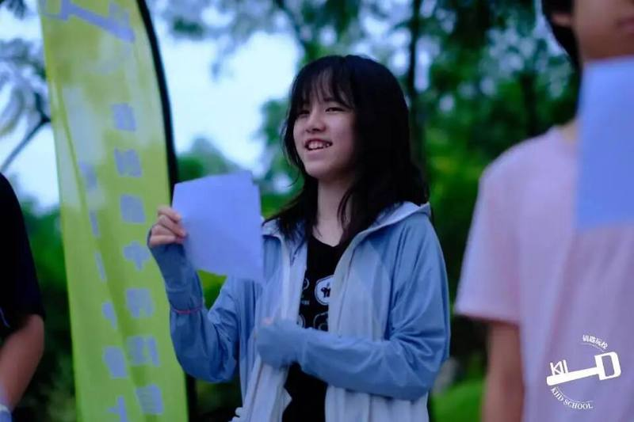</section></section></section></section><p style="white-space: normal;margin: 0px;padding: 0px;box-sizing: border-box;"><span><br/></span></p><section style="max-width: 100%;display: inline-block;flex: 100 100 0%;align-self: flex-start;vertical-align: top;box-sizing: border-box;"><section style="height: auto;border-style: solid;border-width: 0px 0px 0px 16px;border-left-color: rgb(245, 177, 63);padding-left: 10px;box-sizing: border-box;max-width: 100%;text-align: left;"><section style="max-width: 100%;margin-bottom: 10px;box-sizing: border-box;"><section style="max-width: 100%;box-sizing: border-box;"><section style="text-align: justify;color: rgb(245, 177, 63);max-width: 100%;box-sizing: border-box;"><p style="white-space: normal;margin: 0px;padding: 0px;box-sizing: border-box;"><strong style="box-sizing: border-box;"><span>DAY 10 颁奖结营</span></strong></p></section></section></section></section></section><p style="white-space: normal;margin: 0px;padding: 0px;box-sizing: border-box;"><span><br/></span></p><section style="text-align: unset;font-size: 15px;line-height: 2;letter-spacing: 2px;padding: 0px 10px;box-sizing: border-box;"><p style="margin: 0px;padding: 0px;box-sizing: border-box;"><span>和伙伴一起收获属于自己与学院的荣耀，满载而归。</span></p></section><p style="white-space: normal;margin: 0px;padding: 0px;box-sizing: border-box;"><span><br/></span></p><section style="text-align: left;justify-content: flex-start;display: flex;flex-flow: row;box-sizing: border-box;"><section style="display: inline-block;vertical-align: top;width: 50%;align-self: flex-start;flex: 0 0 auto;margin: 5px 0px;padding: 0px 5px 0px 0px;box-sizing: border-box;"><section style="line-height: 0;box-sizing: border-box;"><section style="max-width: 100%;vertical-align: middle;display: inline-block;box-sizing: border-box;">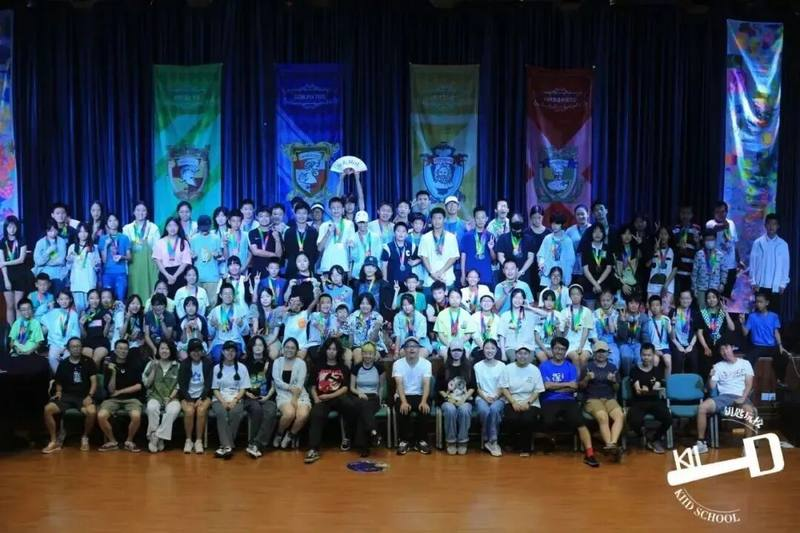</section></section></section><section style="display: inline-block;vertical-align: top;width: 50%;align-self: flex-start;flex: 0 0 auto;margin: 5px 0px;padding: 0px 0px 0px 5px;box-sizing: border-box;"><section style="line-height: 0;box-sizing: border-box;"><section style="max-width: 100%;vertical-align: middle;display: inline-block;box-sizing: border-box;">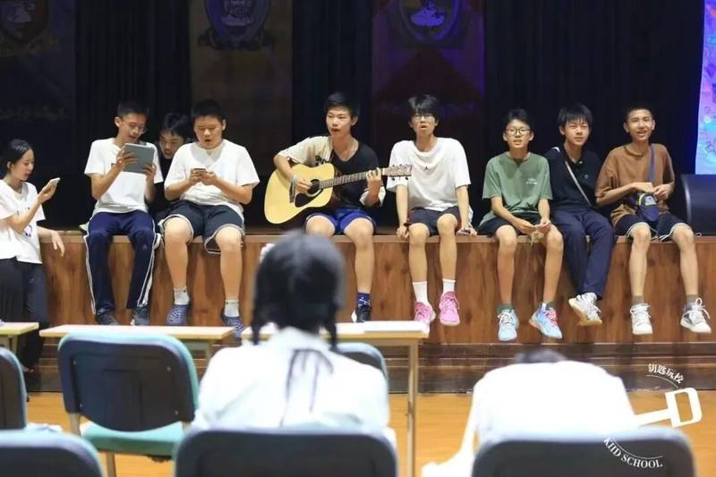</section></section></section></section><section style="text-align: center;margin-top: 10px;margin-bottom: 10px;line-height: 0;box-sizing: border-box;"><section><span><br/></span></section><section style="box-sizing: border-box;font-style: normal;font-weight: 400;text-align: justify;font-size: 16px;color: rgb(62, 62, 62);margin-bottom: 0px;"><section style="text-align: center;margin-top: 10px;margin-bottom: 10px;line-height: 0;box-sizing: border-box;"><section style="max-width: 100%;vertical-align: middle;display: inline-block;width: 25%;height: auto;box-sizing: border-box;">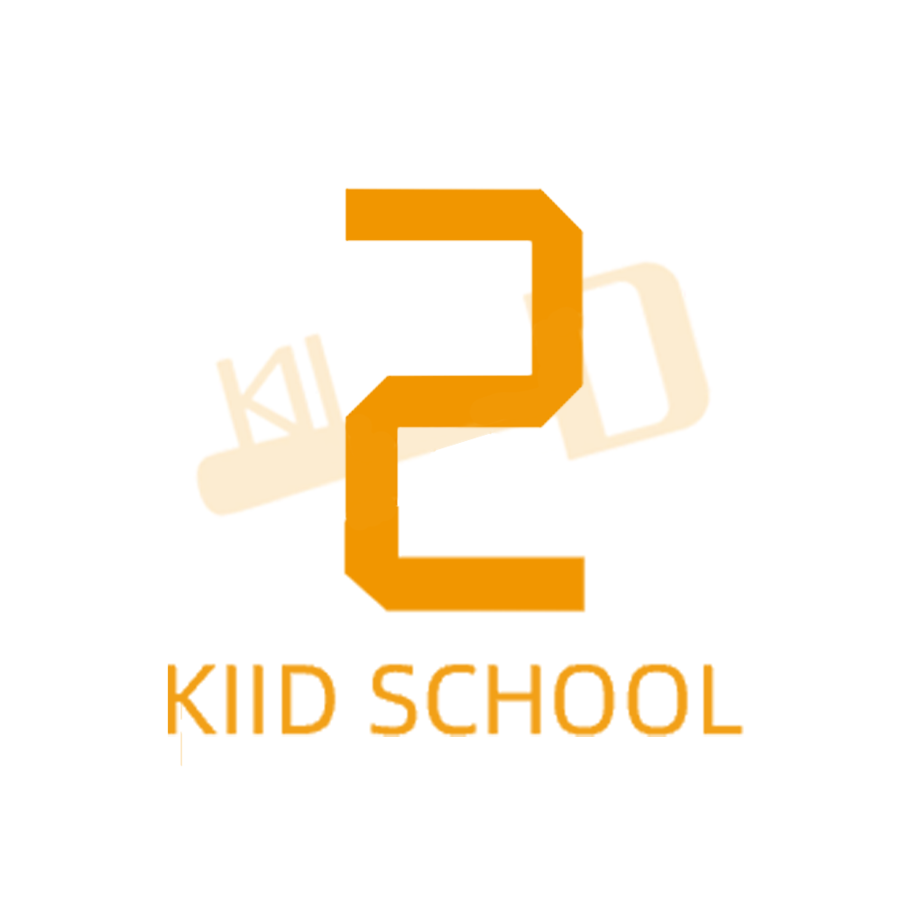</section></section><section style="text-align: center;font-size: 18px;color: rgb(241, 151, 0);line-height: 2;letter-spacing: 2px;padding: 0px 10px;box-sizing: border-box;"><p style="margin: 0px;padding: 0px;box-sizing: border-box;"><strong style="box-sizing: border-box;"><span>「什么是学院制夏令营」</span></strong></p></section><p style="white-space: normal;margin: 0px;padding: 0px;box-sizing: border-box;"><span><br/></span></p><section style="max-width: 100%;box-sizing: border-box;"><section style="font-size: 15px;font-family: PingFangSC-light;box-sizing: border-box;max-width: 100%;line-height: 2;"><p style="white-space: normal;margin: 0px;padding: 0px;box-sizing: border-box;"><span style='font-family: "Noto Sans CJK SC", -apple-system-font, BlinkMacSystemFont, "Helvetica Neue", "PingFang SC", "Hiragino Sans GB", "Microsoft YaHei UI", "Microsoft YaHei", Arial, sans-serif;box-sizing: border-box;'><span>2019年夏天，钥匙玩校参考英国传统学院制公学，以及霍格沃茨魔法学校的设置，尝试了一种夏令营的新玩法：学院制夏令营。</span></span></p><p style="white-space: normal;margin: 0px;padding: 0px;box-sizing: border-box;"><span><br/></span></p><p style="white-space: normal;margin: 0px;padding: 0px;box-sizing: border-box;"><span style='font-family: "Noto Sans CJK SC", -apple-system-font, BlinkMacSystemFont, "Helvetica Neue", "PingFang SC", "Hiragino Sans GB", "Microsoft YaHei UI", "Microsoft YaHei", Arial, sans-serif;color: rgb(241, 150, 0);box-sizing: border-box;'><strong style="box-sizing: border-box;"><span>9天时间，45项比赛，超过160种学习活动，来自全国十多个省的几十个营员亲历了节日般的学习体验。</span></strong></span><span style='font-family: "Noto Sans CJK SC", -apple-system-font, BlinkMacSystemFont, "Helvetica Neue", "PingFang SC", "Hiragino Sans GB", "Microsoft YaHei UI", "Microsoft YaHei", Arial, sans-serif;box-sizing: border-box;'><span>比赛日，大家在滂沱大雨中奋战。在最后一夜笑作一团，也哭作一团。时隔三年，来自全国各地的营员们依然怀念着当年火热的夏天：</span></span></p><p style="white-space: normal;margin: 0px;padding: 0px;box-sizing: border-box;"><span><br/></span></p><p style="white-space: normal;margin: 0px;padding: 0px;box-sizing: border-box;"><span style='font-family: "Noto Sans CJK SC", -apple-system-font, BlinkMacSystemFont, "Helvetica Neue", "PingFang SC", "Hiragino Sans GB", "Microsoft YaHei UI", "Microsoft YaHei", Arial, sans-serif;box-sizing: border-box;'><strong style="box-sizing: border-box;"><span style='font-family: "Noto Sans CJK SC", -apple-system-font, BlinkMacSystemFont, "Helvetica Neue", "PingFang SC", "Hiragino Sans GB", "Microsoft YaHei UI", "Microsoft YaHei", Arial, sans-serif;font-size: 12px;box-sizing: border-box;'><span>“我很喜欢分院对抗的那种感觉，最后两天我们针对前七天学到的内容进行了比赛。我们苏格拉底学院前期完全落后于其它两个学院，但是最后一天揭晓冠军的时候，我们是冠军！实在是太燃啦！而且定向越野，桌游和运动比赛都很有意思，带领团队合作的感觉真的很棒！”</span></span></strong></span></p><p style="white-space: normal;margin: 0px;padding: 0px;box-sizing: border-box;"><span><br/></span></p><p style="white-space: normal;margin: 0px;padding: 0px;box-sizing: border-box;"><strong style='font-family: "Noto Sans CJK SC", -apple-system-font, BlinkMacSystemFont, "Helvetica Neue", "PingFang SC", "Hiragino Sans GB", "Microsoft YaHei UI", "Microsoft YaHei", Arial, sans-serif;text-align: center;box-sizing: border-box;'><span style="font-size: 12px;box-sizing: border-box;"><span>——施畅（2019学院制营员，当年12岁，来自浙江温州）</span></span></strong></p></section></section><section style="max-width: 100%;box-sizing: border-box;"><section style="text-align: left;justify-content: flex-start;display: flex;flex-flow: row;box-sizing: border-box;max-width: 100%;"><section style="display: inline-block;vertical-align: middle;width: 50%;align-self: center;flex: 0 1 auto;padding: 0px 5px 0px 0px;box-sizing: border-box;max-width: 100%;"><section style="max-width: 100%;box-sizing: border-box;text-align: justify;"><section style="max-width: 100%;box-sizing: border-box;"><section style="line-height: 0;text-align: center;box-sizing: border-box;max-width: 100%;"><section style="max-width: 100%;vertical-align: middle;display: inline-block;box-sizing: border-box;">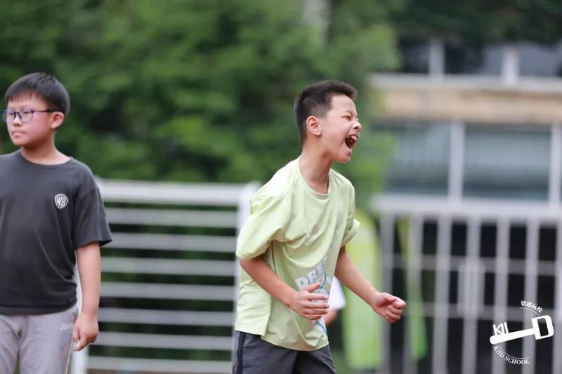</section></section></section></section></section><section style="display: inline-block;vertical-align: middle;width: 50%;align-self: center;flex: 0 1 auto;padding: 0px 0px 0px 5px;box-sizing: border-box;max-width: 100%;"><section style="max-width: 100%;box-sizing: border-box;text-align: justify;"><section style="max-width: 100%;box-sizing: border-box;"><section style="line-height: 0;text-align: center;box-sizing: border-box;max-width: 100%;"><section style="max-width: 100%;vertical-align: middle;display: inline-block;box-sizing: border-box;">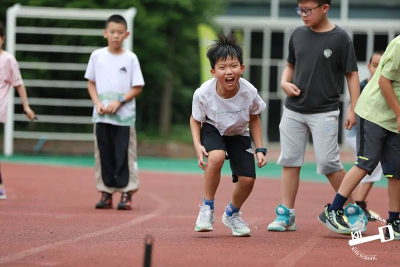</section></section></section></section></section></section></section><section style="max-width: 100%;box-sizing: border-box;"><section style="text-align: left;justify-content: flex-start;display: flex;flex-flow: row;box-sizing: border-box;max-width: 100%;"><section style="display: inline-block;vertical-align: middle;width: 50%;align-self: center;flex: 0 1 auto;padding: 0px 5px 0px 0px;box-sizing: border-box;max-width: 100%;"><section style="max-width: 100%;box-sizing: border-box;text-align: justify;"><section style="max-width: 100%;box-sizing: border-box;"><section style="line-height: 0;text-align: center;box-sizing: border-box;max-width: 100%;"><section style="max-width: 100%;vertical-align: middle;display: inline-block;box-sizing: border-box;">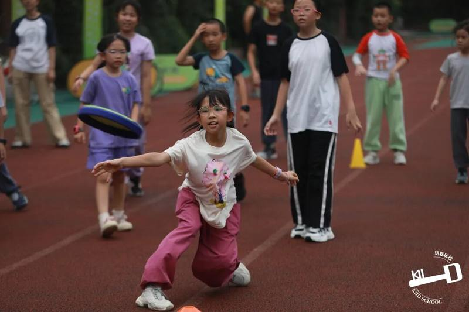</section></section></section></section></section><section style="display: inline-block;vertical-align: middle;width: 50%;align-self: center;flex: 0 1 auto;padding: 0px 0px 0px 5px;box-sizing: border-box;max-width: 100%;z-index: auto;margin: 5px 0px;"><section style="max-width: 100%;box-sizing: border-box;text-align: justify;"><section style="max-width: 100%;box-sizing: border-box;"><section style="line-height: 0;text-align: center;box-sizing: border-box;max-width: 100%;"><section style="max-width: 100%;vertical-align: middle;display: inline-block;box-sizing: border-box;">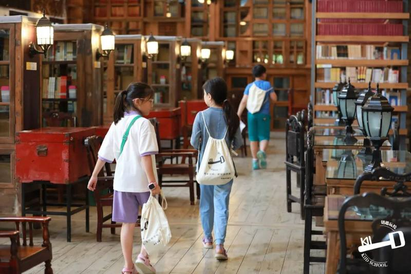</section></section></section></section></section></section></section><section style="max-width: 100%;box-sizing: border-box;"><section style="font-size: 15px;font-family: PingFangSC-light;box-sizing: border-box;max-width: 100%;line-height: 2;"><p style="white-space: normal;margin: 0px;padding: 0px;box-sizing: border-box;"><span><br/></span></p><p style="white-space: normal;margin: 0px;padding: 0px;box-sizing: border-box;"><span style='font-family: "Noto Sans CJK SC", -apple-system-font, BlinkMacSystemFont, "Helvetica Neue", "PingFang SC", "Hiragino Sans GB", "Microsoft YaHei UI", "Microsoft YaHei", Arial, sans-serif;box-sizing: border-box;'><strong style="box-sizing: border-box;"><span style='font-family: "Noto Sans CJK SC", -apple-system-font, BlinkMacSystemFont, "Helvetica Neue", "PingFang SC", "Hiragino Sans GB", "Microsoft YaHei UI", "Microsoft YaHei", Arial, sans-serif;font-size: 12px;box-sizing: border-box;'><span>“在体验经典的学院制夏令营时，我不仅在激动人心的竞技比赛时学习了许多新知，更令我难忘的是在数次合作中与夏令营伙伴们结下的深刻友谊。从各种项目中的团队配合到那几天与大家的相处时的谈笑欢乐，都给我留下了美好的回忆。”</span></span></strong></span></p><p style="white-space: normal;margin: 0px;padding: 0px;box-sizing: border-box;"><span><br/></span></p><p style="white-space: normal;margin: 0px;padding: 0px;box-sizing: border-box;"><strong style='font-family: "Noto Sans CJK SC", -apple-system-font, BlinkMacSystemFont, "Helvetica Neue", "PingFang SC", "Hiragino Sans GB", "Microsoft YaHei UI", "Microsoft YaHei", Arial, sans-serif;text-align: center;box-sizing: border-box;'><span style="font-size: 12px;box-sizing: border-box;"><span>——黄增熙（2019学院制营员，当年14岁，来自北京）</span></span></strong></p></section></section><section style="max-width: 100%;box-sizing: border-box;"><section style="text-align: left;justify-content: flex-start;display: flex;flex-flow: row;box-sizing: border-box;max-width: 100%;"><section style="display: inline-block;vertical-align: middle;width: 50%;align-self: center;flex: 0 1 auto;padding: 0px 5px 0px 0px;box-sizing: border-box;max-width: 100%;"><section style="max-width: 100%;box-sizing: border-box;text-align: justify;"><section style="max-width: 100%;box-sizing: border-box;"><section style="line-height: 0;text-align: center;box-sizing: border-box;max-width: 100%;"><section style="max-width: 100%;vertical-align: middle;display: inline-block;box-sizing: border-box;">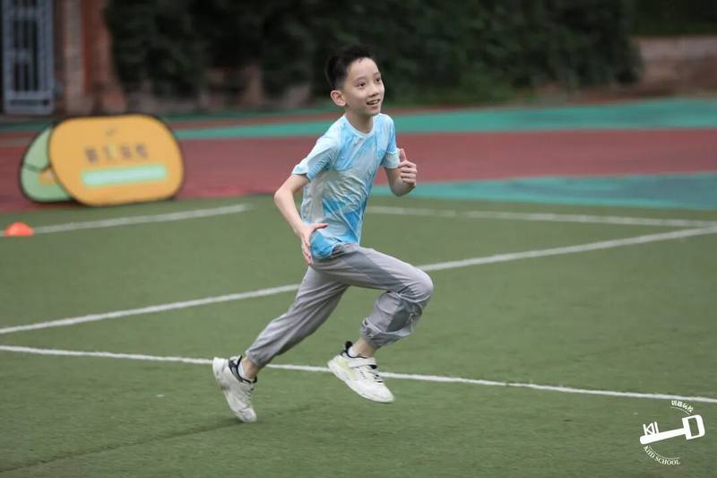</section></section></section></section></section><section style="display: inline-block;vertical-align: middle;width: 50%;align-self: center;flex: 0 1 auto;padding: 0px 0px 0px 5px;box-sizing: border-box;max-width: 100%;"><section style="max-width: 100%;box-sizing: border-box;text-align: justify;"><section style="max-width: 100%;box-sizing: border-box;"><section style="line-height: 0;text-align: center;box-sizing: border-box;max-width: 100%;"><section style="max-width: 100%;vertical-align: middle;display: inline-block;box-sizing: border-box;">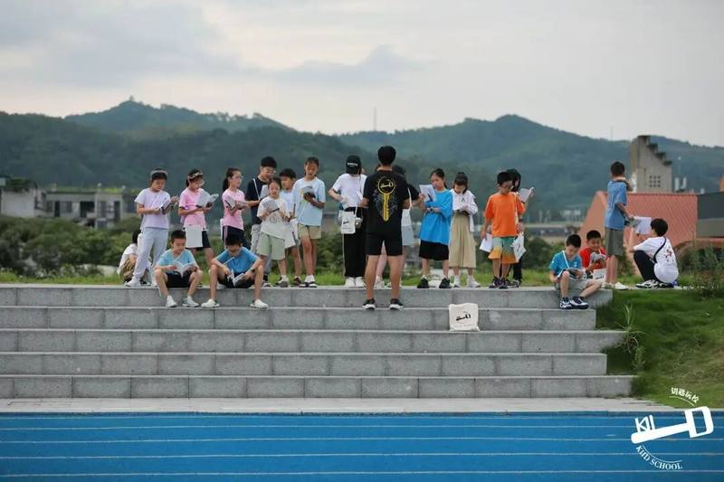</section></section></section></section></section></section></section><section style="max-width: 100%;box-sizing: border-box;"><section style="text-align: left;justify-content: flex-start;display: flex;flex-flow: row;box-sizing: border-box;max-width: 100%;"><section style="display: inline-block;vertical-align: middle;width: 50%;align-self: center;flex: 0 1 auto;padding: 0px 5px 0px 0px;box-sizing: border-box;max-width: 100%;"><section style="max-width: 100%;box-sizing: border-box;text-align: justify;"><section style="max-width: 100%;box-sizing: border-box;"><section style="line-height: 0;text-align: center;box-sizing: border-box;max-width: 100%;"><section style="max-width: 100%;vertical-align: middle;display: inline-block;box-sizing: border-box;"></section></section></section></section></section><section style="display: inline-block;vertical-align: middle;width: 50%;align-self: center;flex: 0 1 auto;padding: 0px 0px 0px 5px;box-sizing: border-box;max-width: 100%;margin: 5px 0px;"><section style="max-width: 100%;box-sizing: border-box;text-align: justify;"><section style="max-width: 100%;box-sizing: border-box;"><section style="line-height: 0;text-align: center;box-sizing: border-box;max-width: 100%;"><section style="max-width: 100%;vertical-align: middle;display: inline-block;box-sizing: border-box;">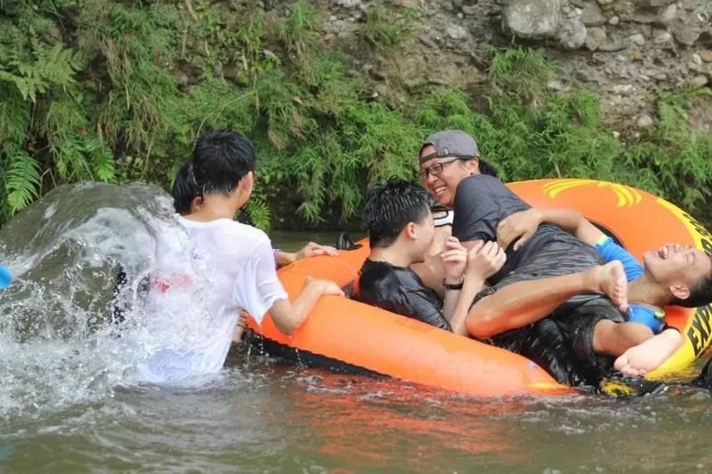</section></section></section></section></section></section></section><section style="max-width: 100%;box-sizing: border-box;"><section style="font-size: 15px;font-family: PingFangSC-light;box-sizing: border-box;max-width: 100%;line-height: 2;"><p style="white-space: normal;margin: 0px;padding: 0px;box-sizing: border-box;"><span><br/></span></p><p style="white-space: normal;margin: 0px;padding: 0px;box-sizing: border-box;"><span style='font-family: "Noto Sans CJK SC", -apple-system-font, BlinkMacSystemFont, "Helvetica Neue", "PingFang SC", "Hiragino Sans GB", "Microsoft YaHei UI", "Microsoft YaHei", Arial, sans-serif;box-sizing: border-box;'><strong style="box-sizing: border-box;"><span style='font-family: "Noto Sans CJK SC", -apple-system-font, BlinkMacSystemFont, "Helvetica Neue", "PingFang SC", "Hiragino Sans GB", "Microsoft YaHei UI", "Microsoft YaHei", Arial, sans-serif;font-size: 12px;box-sizing: border-box;'><span>“2019年的夏天，是我第二次参加钥匙玩校的夏令营。学院制夏令营应该是钥匙玩校举办的最大规模的夏令营，能够认识到的朋友也能更多。大家被分进不同的学院，学院间会有竞争，因此完全可以激发大家的团结性和积极性，大家更全身心的投入活动。因为有团体项目需要配合，我们的关系也会经历考验，大概率会结交到很值得的朋友。9天的时间不长也不短，刚好可以经历一些情绪的起伏。对于各个年龄阶段的孩子，都会有不一样的体会和成长。我参加学院制夏令营的时候已经17岁了，除了体验夏令营的项目，我开始尝试照顾其他比我年龄小的孩子，因为他们会觉得我比他们知道的更多一些，因此我也更努力的参与活动。但对于小一些的孩子，他们会更在意认识新的朋友，学到学校里学不到的有意思的东西：团队合作、竞技精神等等。总之，钥匙玩校很擅长用孩子们感兴趣的游戏和活动教他们一些在日常生活中也能运用到的技能。真的是很酷的事情！”</span></span></strong></span></p><p style="white-space: normal;margin: 0px;padding: 0px;box-sizing: border-box;"><span><br/></span></p><p style="white-space: normal;margin: 0px;padding: 0px;box-sizing: border-box;"><strong style='font-family: "Noto Sans CJK SC", -apple-system-font, BlinkMacSystemFont, "Helvetica Neue", "PingFang SC", "Hiragino Sans GB", "Microsoft YaHei UI", "Microsoft YaHei", Arial, sans-serif;text-align: center;box-sizing: border-box;'><span style="font-size: 12px;box-sizing: border-box;"><span>——唐蕴文（2019学院制营员，当年17岁，来自成都）</span></span></strong></p></section></section><section style="max-width: 100%;box-sizing: border-box;"><section style="text-align: left;justify-content: flex-start;display: flex;flex-flow: row;box-sizing: border-box;max-width: 100%;"><section style="display: inline-block;vertical-align: middle;width: 50%;align-self: center;flex: 0 1 auto;padding: 0px 5px 0px 0px;box-sizing: border-box;max-width: 100%;"><section style="max-width: 100%;box-sizing: border-box;text-align: justify;"><section style="max-width: 100%;box-sizing: border-box;"><section style="line-height: 0;text-align: center;box-sizing: border-box;max-width: 100%;"><section style="max-width: 100%;vertical-align: middle;display: inline-block;box-sizing: border-box;">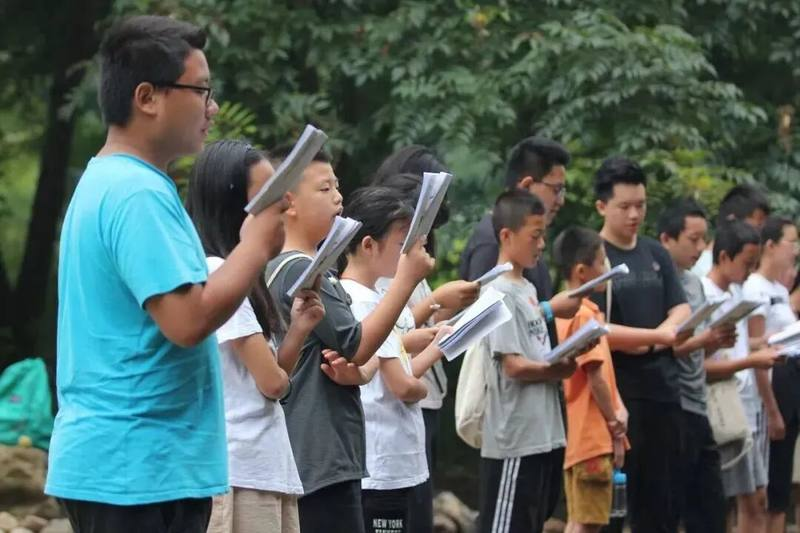</section></section></section></section></section><section style="display: inline-block;vertical-align: middle;width: 50%;align-self: center;flex: 0 1 auto;padding: 0px 0px 0px 5px;box-sizing: border-box;max-width: 100%;"><section style="max-width: 100%;box-sizing: border-box;text-align: justify;"><section style="max-width: 100%;box-sizing: border-box;"><section style="line-height: 0;text-align: center;box-sizing: border-box;max-width: 100%;"><section style="max-width: 100%;vertical-align: middle;display: inline-block;box-sizing: border-box;">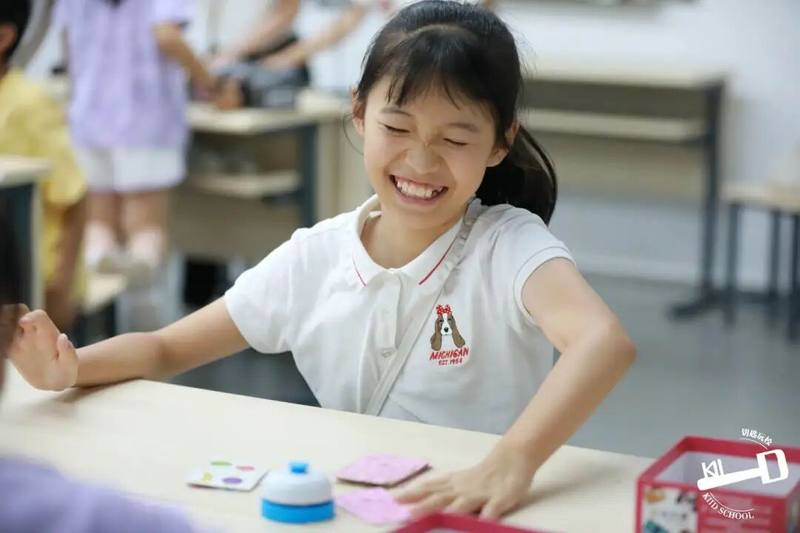</section></section></section></section></section></section></section><section style="max-width: 100%;box-sizing: border-box;"><section style="text-align: left;justify-content: flex-start;display: flex;flex-flow: row;box-sizing: border-box;max-width: 100%;"><section style="display: inline-block;vertical-align: middle;width: 50%;align-self: center;flex: 0 1 auto;padding: 0px 5px 0px 0px;box-sizing: border-box;max-width: 100%;"><section style="max-width: 100%;box-sizing: border-box;text-align: justify;"><section style="max-width: 100%;box-sizing: border-box;"><section style="line-height: 0;text-align: center;box-sizing: border-box;max-width: 100%;"><section style="max-width: 100%;vertical-align: middle;display: inline-block;box-sizing: border-box;">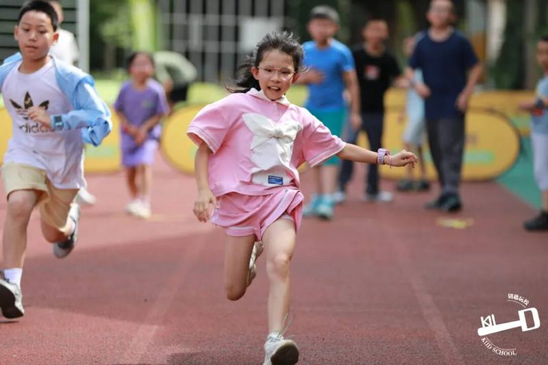</section></section></section></section></section><section style="display: inline-block;vertical-align: middle;width: 50%;align-self: center;flex: 0 1 auto;padding: 0px 0px 0px 5px;box-sizing: border-box;max-width: 100%;margin: 5px 0px;"><section style="max-width: 100%;box-sizing: border-box;text-align: justify;"><section style="max-width: 100%;box-sizing: border-box;"><section style="line-height: 0;text-align: center;box-sizing: border-box;max-width: 100%;"><section style="max-width: 100%;vertical-align: middle;display: inline-block;box-sizing: border-box;width: 100%;height: auto;">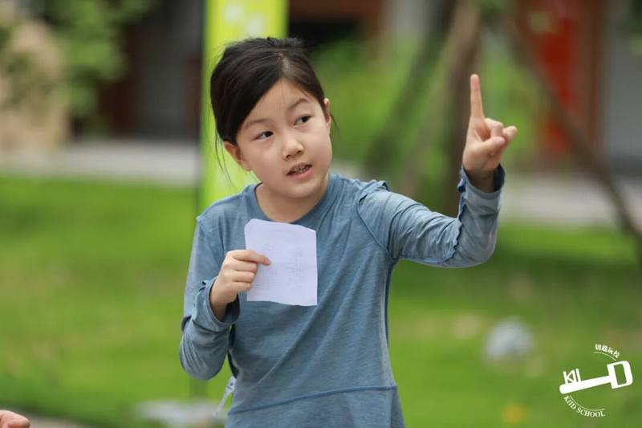</section></section></section></section></section></section></section><section style="max-width: 100%;box-sizing: border-box;"><section style="margin-bottom: 0px;white-space: normal;max-width: 100%;box-sizing: border-box;font-size: 15px;line-height: 2;"><p style="margin: 0px;padding: 0px;box-sizing: border-box;"><span><br/></span></p><p style="margin: 0px;padding: 0px;box-sizing: border-box;"><strong style="box-sizing: border-box;"><span style="font-size: 12px;box-sizing: border-box;"><span>钥匙玩校的学院制夏令营，是最令我印象深刻的。有时候我真的觉得人与人之间真的很神奇，短短9天，我就遇到了一生难忘的伙伴。绝地反击的飞盘比赛，妥妥的热血少年番。9天结束了，但我们，却从未结束。 </span></span></strong></p><p style="margin: 0px;padding: 0px;box-sizing: border-box;"><span><br/></span></p><p style="margin: 0px;padding: 0px;box-sizing: border-box;"><strong style="text-align: right;box-sizing: border-box;"><span style="font-size: 12px;box-sizing: border-box;"><span>——周孜涵（2022学院制营员，15岁，来自江西宜春）</span></span></strong></p></section></section><section style="max-width: 100%;box-sizing: border-box;"><section style="text-align: left;justify-content: flex-start;display: flex;flex-flow: row;box-sizing: border-box;max-width: 100%;"><section style="display: inline-block;vertical-align: middle;width: 50%;align-self: center;flex: 0 1 auto;padding: 0px 5px 0px 0px;box-sizing: border-box;max-width: 100%;"><section style="max-width: 100%;box-sizing: border-box;text-align: justify;"><section style="max-width: 100%;box-sizing: border-box;"><section style="line-height: 0;text-align: center;box-sizing: border-box;max-width: 100%;"><section style="max-width: 100%;vertical-align: middle;display: inline-block;box-sizing: border-box;">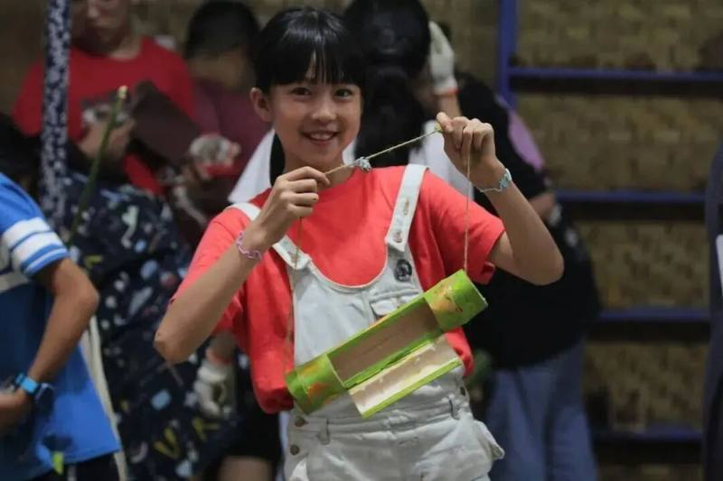</section></section></section></section></section><section style="display: inline-block;vertical-align: middle;width: 50%;align-self: center;flex: 0 1 auto;padding: 0px 0px 0px 5px;box-sizing: border-box;max-width: 100%;"><section style="max-width: 100%;box-sizing: border-box;text-align: justify;"><section style="max-width: 100%;box-sizing: border-box;"><section style="line-height: 0;text-align: center;box-sizing: border-box;max-width: 100%;"><section style="max-width: 100%;vertical-align: middle;display: inline-block;box-sizing: border-box;width: 100%;height: auto;">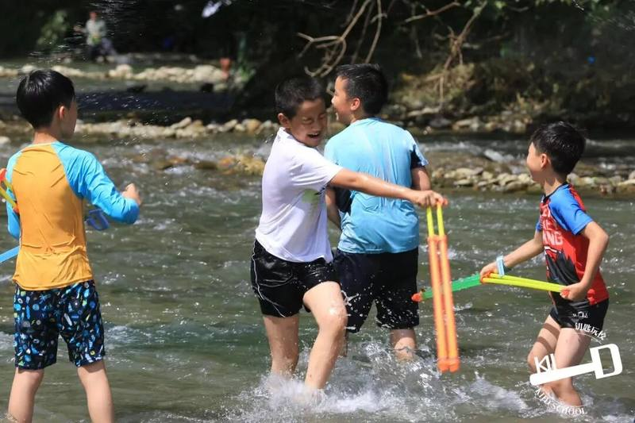</section></section></section></section></section></section></section><section style="max-width: 100%;box-sizing: border-box;"><section style="text-align: left;justify-content: flex-start;display: flex;flex-flow: row;box-sizing: border-box;max-width: 100%;"><section style="display: inline-block;vertical-align: middle;width: 50%;align-self: center;flex: 0 1 auto;padding: 0px 5px 0px 0px;box-sizing: border-box;max-width: 100%;"><section style="max-width: 100%;box-sizing: border-box;text-align: justify;"><section style="max-width: 100%;box-sizing: border-box;"><section style="line-height: 0;text-align: center;box-sizing: border-box;max-width: 100%;"><section style="max-width: 100%;vertical-align: middle;display: inline-block;box-sizing: border-box;">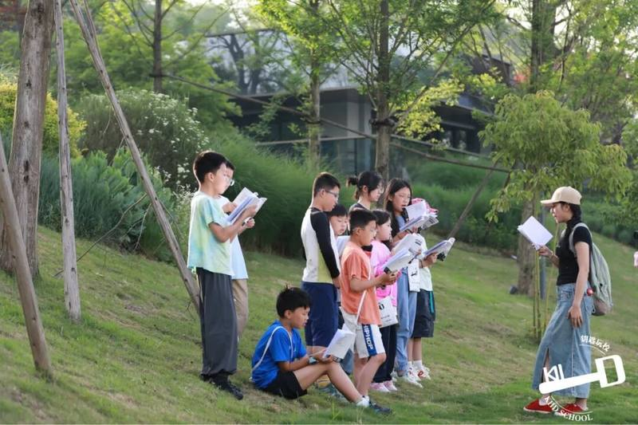</section></section></section></section></section><section style="display: inline-block;vertical-align: middle;width: 50%;align-self: center;flex: 0 1 auto;padding: 0px 0px 0px 5px;box-sizing: border-box;max-width: 100%;margin: 5px 0px;"><section style="max-width: 100%;box-sizing: border-box;text-align: justify;"><section style="max-width: 100%;box-sizing: border-box;"><section style="line-height: 0;text-align: center;box-sizing: border-box;max-width: 100%;"><section style="max-width: 100%;vertical-align: middle;display: inline-block;box-sizing: border-box;">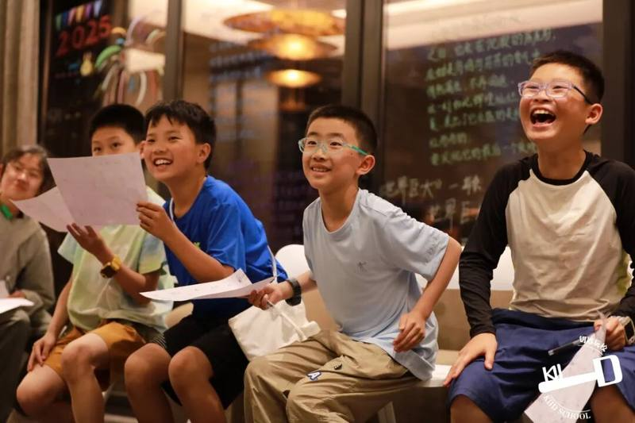</section></section></section></section></section></section></section><p style="white-space: normal;margin: 0px;padding: 0px;box-sizing: border-box;"><span><br/></span></p></section><section><span><br/></span></section><section style="max-width: 100%;vertical-align: middle;display: inline-block;width: 25%;height: auto;box-sizing: border-box;">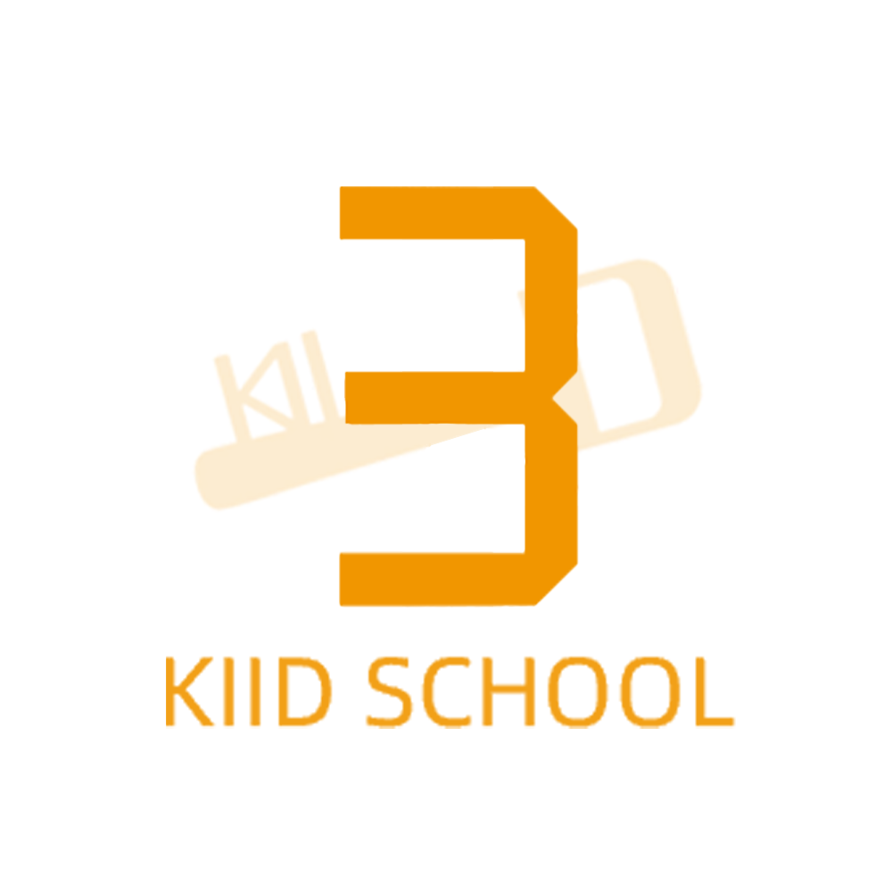</section></section><section style="text-align: center;font-size: 18px;color: rgb(241, 151, 0);line-height: 2;letter-spacing: 2px;padding: 0px 10px;box-sizing: border-box;"><section style="text-align: center;font-size: 18px;color: rgb(241, 151, 0);line-height: 2;letter-spacing: 2px;padding: 0px 10px;box-sizing: border-box;"><p style="margin: 0px;padding: 0px;box-sizing: border-box;"><strong style="box-sizing: border-box;"><span>「为什么要做学院制夏令营」</span></strong></p></section></section><p style="white-space: normal;margin: 0px;padding: 0px;box-sizing: border-box;"><span><br/></span></p><section style="font-size: 15px;line-height: 2;letter-spacing: 2px;padding: 0px 10px;box-sizing: border-box;"><p style="text-align: center;white-space: normal;margin: 0px;padding: 0px;box-sizing: border-box;"><span style="text-decoration: underline;text-decoration-style: double;text-decoration-color: rgb(241,151,0);text-decoration-thickness: 2px;"><span> </span><span style="text-decoration: underline;text-decoration-style: double;text-decoration-color: rgb(241,151,0);text-decoration-thickness: 2px;color: rgb(241, 151, 0);"><strong style="box-sizing: border-box;"><span>致敬经典的学习模式</span></strong></span></span></p><p style="white-space: normal;margin: 0px;padding: 0px;box-sizing: border-box;"><span><br/></span></p><p style="white-space: normal;margin: 0px;padding: 0px;box-sizing: border-box;"><span>《哈利波特》中的魔法学校霍格沃茨，有四个风格各异的学院。每个学院有自己的象征颜色和纹章。住在不同的宿舍、坐不同的餐桌，他们的管理方法、学生气质都各有特色。学院之间有合作也有竞争。J·K 罗琳用学院制为自己的小说注入了灵魂。</span></p><p style="white-space: normal;margin: 0px;padding: 0px;box-sizing: border-box;"><span><br/></span></p><p style="white-space: normal;margin: 0px;padding: 0px;box-sizing: border-box;"><span>学院制历史悠久，可以追溯到欧洲中世纪大学的自治精神。在这些大学中，不同的学院有不同的赞助人。每一个学院如同一个独立的王国。商定事务，裁决纠纷，在很多英式大学和公学中，古风犹存。学院一般是根据学生的性格特质、兴趣爱好、个人目标来录取。所以在同一个学院里，往往能遇见一群志同道合的同学和导师，一起学习和成长。</span></p><p style="white-space: normal;margin: 0px;padding: 0px;box-sizing: border-box;"><span><br/></span></p><p style="white-space: normal;margin: 0px;padding: 0px;box-sizing: border-box;"><span>同学们将体验各式各类的通识课程，个人的学习能力、自治能力、社交能力将得到训练，集体荣誉感和团队精神也将受到熏陶。</span></p><p style="white-space: normal;margin: 0px;padding: 0px;box-sizing: border-box;"><span><br/></span></p><p style="white-space: normal;margin: 0px;padding: 0px;box-sizing: border-box;"><span>《哈利波特》分院帽的奇妙魔法将在钥匙玩校继续上演。</span></p><p style="white-space: normal;margin: 0px;padding: 0px;box-sizing: border-box;"><span><br/></span></p><p style="text-align: center;white-space: normal;margin: 0px;padding: 0px;box-sizing: border-box;"><span style="text-decoration: underline;text-decoration-style: double;text-decoration-color: rgb(241,151,0);text-decoration-thickness: 2px;color: rgb(241, 151, 0);"><strong style="box-sizing: border-box;"><span>更加紧凑的游戏式学习</span></strong></span></p><p style="text-align: center;white-space: normal;margin: 0px;padding: 0px;box-sizing: border-box;"><span><br/></span></p><p style="white-space: normal;margin: 0px;padding: 0px;box-sizing: border-box;"><span>这几年有一个令人震惊的调查：北京大学的学生心理调查，30%的新生不喜欢学习，并且认为学习无意义。</span></p><p style="white-space: normal;margin: 0px;padding: 0px;box-sizing: border-box;"><span><br/></span></p><p style="white-space: normal;margin: 0px;padding: 0px;box-sizing: border-box;"><span>不知从什么时候开始，学习变成了一个沉重的字眼，上学变得痛苦，很多学生仿佛都患上了每周日傍晚就要发作的上学焦虑症。比学习成绩不佳更可怕的是，太多人渐渐对学习本身都失去了兴趣，甚至开始抵触学习。</span></p><p style="white-space: normal;margin: 0px;padding: 0px;box-sizing: border-box;"><span><br/></span></p><p style="white-space: normal;margin: 0px;padding: 0px;box-sizing: border-box;"><span style="color: rgb(241, 151, 0);box-sizing: border-box;"><strong style="box-sizing: border-box;"><span>游戏即学习。</span><span style="font-style: normal;text-align: justify;font-size: 15px;line-height: 2;letter-spacing: 2px;color: rgb(241, 151, 0);font-weight: bold;box-sizing: border-box;">是钥匙玩校的核心理念。学习本是一件好玩的事。我们试着通过游戏式的学习方式，</span><span>让孩子体验到学习的魅力，了解到更多学科知识的价值。</span></strong></span></p><p style="white-space: normal;margin: 0px;padding: 0px;box-sizing: border-box;"><span><br/></span></p><p style="white-space: normal;margin: 0px;padding: 0px;box-sizing: border-box;"><span>席勒说：人游戏时才是一个完整的人。</span></p><p style="white-space: normal;margin: 0px;padding: 0px;box-sizing: border-box;"><span><br/></span></p><p style="white-space: normal;margin: 0px;padding: 0px;box-sizing: border-box;"><span>这几年，很多孩子来到钥匙玩校，和我们一起探索游戏式学习的疆界。今年，我们希望在这个基础上更进一步。</span></p><p style="white-space: normal;margin: 0px;padding: 0px;box-sizing: border-box;"><span><br/></span></p><p style="white-space: normal;margin: 0px;padding: 0px;box-sizing: border-box;"><span style="color: rgb(241, 151, 0);font-weight: bold;box-sizing: border-box;">游戏，是有限条件下一系列有意义的选择。</span></p><p style="white-space: normal;margin: 0px;padding: 0px;box-sizing: border-box;"><span><br/></span></p><p style="white-space: normal;margin: 0px;padding: 0px;box-sizing: border-box;"><span>我们通过院际比赛，让游戏的目标更加清晰，让营员的学习节奏更加紧凑。</span></p><p style="white-space: normal;margin: 0px;padding: 0px;box-sizing: border-box;"><span><br/></span></p><p style="text-align: center;white-space: normal;margin: 0px;padding: 0px;box-sizing: border-box;"><span style="color: rgb(241, 151, 0);text-decoration: underline;text-decoration-style: double;text-decoration-color: rgb(241,151,0);text-decoration-thickness: 2px;"><strong style="box-sizing: border-box;"><span>在合作中建立归属感</span></strong></span></p><p style="white-space: normal;margin: 0px;padding: 0px;box-sizing: border-box;"><span><br/></span></p><p style="white-space: normal;margin: 0px;padding: 0px;box-sizing: border-box;"><span>在学校里，其实大家都是学习上的竞争对手。</span></p><p style="white-space: normal;margin: 0px;padding: 0px;box-sizing: border-box;"><span><br/></span></p><p style="white-space: normal;margin: 0px;padding: 0px;box-sizing: border-box;"><span>合作、共创，都是老生常谈的必备素养，但从来不曾体现在考试分数上。</span></p><p style="white-space: normal;margin: 0px;padding: 0px;box-sizing: border-box;"><span><br/></span></p><p style="white-space: normal;margin: 0px;padding: 0px;box-sizing: border-box;"><span>而现实中，</span><span style="font-style: normal;text-align: justify;font-size: 15px;line-height: 2;letter-spacing: 2px;color: rgb(241, 151, 0);font-weight: bold;box-sizing: border-box;">我们必须学会寻找双赢和多赢的机会，这种合作性的思维需要学习和锻炼。</span></p><p style="white-space: normal;margin: 0px;padding: 0px;box-sizing: border-box;"><span><br/></span></p><p style="white-space: normal;margin: 0px;padding: 0px;box-sizing: border-box;"><span>在钥匙玩校，我们并不排斥个人成绩，</span><span style="font-style: normal;text-align: justify;font-size: 15px;line-height: 2;letter-spacing: 2px;color: rgb(241, 151, 0);font-weight: bold;box-sizing: border-box;">我们排斥的是只强调个人成绩。</span></p><p style="white-space: normal;margin: 0px;padding: 0px;box-sizing: border-box;"><span><br/></span></p><p style="white-space: normal;margin: 0px;padding: 0px;box-sizing: border-box;"><span>我们希望通过一些活动，让缺乏归属感和合作经验的青少年得到启发和锻炼。</span></p><p style="white-space: normal;margin: 0px;padding: 0px;box-sizing: border-box;"><span><br/></span></p><p style="text-align: center;white-space: normal;margin: 0px;padding: 0px;box-sizing: border-box;"><span style="color: rgb(241, 151, 0);text-decoration: underline;text-decoration-style: double;text-decoration-color: rgb(241,151,0);text-decoration-thickness: 2px;"><strong style="box-sizing: border-box;"><span>在自治中感受生命的律动</span></strong></span></p><p style="white-space: normal;margin: 0px;padding: 0px;box-sizing: border-box;"><span><br/></span></p><p style="white-space: normal;margin: 0px;padding: 0px;box-sizing: border-box;"><span>在家里，父母安排一切衣食住行；在学校里，老师安排一切学习节奏；在网络中，太容易随波逐流。美妙的生命律动不在于顺从他人和潮流，而在于自治状态下的自由。</span></p><p style="white-space: normal;margin: 0px;padding: 0px;box-sizing: border-box;"><span style="font-style: normal;text-align: justify;font-size: 15px;line-height: 2;letter-spacing: 2px;color: rgb(241, 151, 0);font-weight: bold;box-sizing: border-box;"><br/></span></p><p style="white-space: normal;margin: 0px;padding: 0px;box-sizing: border-box;"><span style="font-style: normal;text-align: justify;font-size: 15px;line-height: 2;letter-spacing: 2px;color: rgb(241, 151, 0);font-weight: bold;box-sizing: border-box;">假期时间，本就是练习自治的最佳时机，而多数孩子被迫陷于题海，或者在家无所事事。</span></p><p style="white-space: normal;margin: 0px;padding: 0px;box-sizing: border-box;"><span><br/></span></p><p style="white-space: normal;margin: 0px;padding: 0px;box-sizing: border-box;"><span>在钥匙玩校夏令营，</span><span style="font-style: normal;text-align: justify;font-size: 15px;line-height: 2;letter-spacing: 2px;color: rgb(241, 151, 0);font-weight: bold;box-sizing: border-box;">有玩耍的自由，更有自治的责任。</span><span>学院制是培养自治能力的摇篮。</span></p><p style="white-space: normal;margin: 0px;padding: 0px;box-sizing: border-box;"><span><br/></span></p><p style="text-align: center;white-space: normal;margin: 0px;padding: 0px;box-sizing: border-box;"><span style="text-decoration: underline;text-decoration-style: double;text-decoration-color: rgb(241,151,0);text-decoration-thickness: 2px;"><strong style="box-sizing: border-box;"><span style="text-decoration: underline;text-decoration-style: double;text-decoration-color: rgb(241,151,0);text-decoration-thickness: 2px;color: rgb(241, 151, 0);"><span>拓宽对学习的理解</span></span></strong></span></p><p style="white-space: normal;margin: 0px;padding: 0px;box-sizing: border-box;"><span><br/></span></p><p style="white-space: normal;margin: 0px;padding: 0px;box-sizing: border-box;"><span>主动观察和学习本是人的天性，但在学校里不够丰富的学习方式和学习内容，让孩子对学习的理解仅仅局限在学校科目里。</span></p><p style="white-space: normal;margin: 0px;padding: 0px;box-sizing: border-box;"><span><br/></span></p><p style="white-space: normal;margin: 0px;padding: 0px;box-sizing: border-box;"><span style="color: rgb(241, 151, 0);box-sizing: border-box;"><strong style="box-sizing: border-box;"><span>钥匙玩校夏令营，不是去了解一个陌生的旅游景点，也不是去学习一种具体的技能。而是通过尽可能丰富的内容和出乎意料的组织形式，在最短的时间里，让营员能够感受五花八门的学习体验，拓展对学习的理解，改变对学习的刻板认知。</span></strong></span></p><p style="white-space: normal;margin: 0px;padding: 0px;box-sizing: border-box;"><span><br/></span></p><p style="white-space: normal;margin: 0px;padding: 0px;box-sizing: border-box;"><span>学习本该是一件</span><span style="color: rgb(241, 151, 0);box-sizing: border-box;"><strong style="box-sizing: border-box;"><span>激动人心</span></strong></span><span>的事！我们在钥匙玩校让学习回归本质。</span></p><p style="white-space: normal;margin: 0px;padding: 0px;box-sizing: border-box;"><span><br/></span></p><p style="white-space: normal;margin: 0px;padding: 0px;box-sizing: border-box;"><span>当我们对学习的可能性始终保持期待，我们就能够始终像孩子一样渴望学习。</span></p><p style="white-space: normal;margin: 0px;padding: 0px;box-sizing: border-box;"><span><br/></span></p><p style="white-space: normal;margin: 0px;padding: 0px;box-sizing: border-box;"><span style="color: rgb(241, 151, 0);box-sizing: border-box;"><strong style="box-sizing: border-box;"><span>杜威说：童年的延伸就是可塑性的延伸。</span></strong></span></p><p style="white-space: normal;margin: 0px;padding: 0px;box-sizing: border-box;"><span><br/></span></p><p style="white-space: normal;margin: 0px;padding: 0px;box-sizing: border-box;"><span style="color: rgb(241, 151, 0);box-sizing: border-box;"><strong style="box-sizing: border-box;"><span>学院制夏令营，便是延伸童年的一种可能。</span></strong></span></p></section><section style="text-align: center;margin-top: 10px;margin-bottom: 10px;line-height: 0;box-sizing: border-box;"><section style="max-width: 100%;vertical-align: middle;display: inline-block;width: 25%;height: auto;box-sizing: border-box;">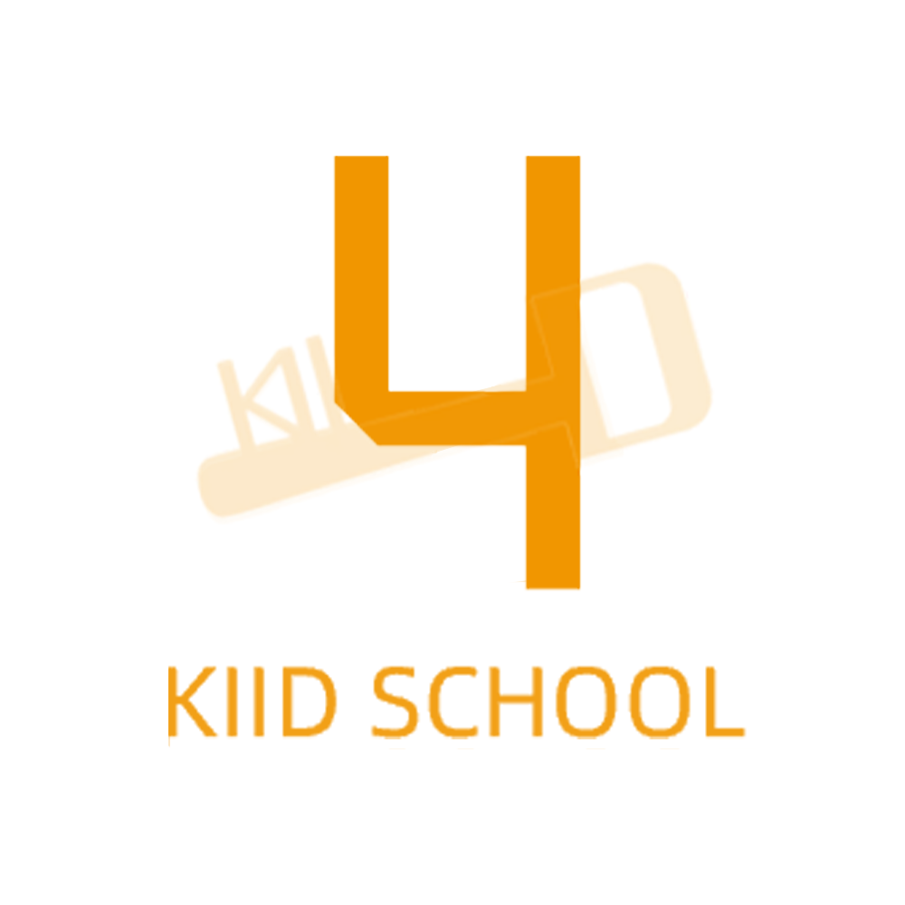</section></section><section style="text-align: center;font-size: 18px;color: rgb(241, 151, 0);line-height: 2;letter-spacing: 2px;padding: 0px 10px;box-sizing: border-box;"><p style="margin: 0px;padding: 0px;box-sizing: border-box;"><strong style="box-sizing: border-box;"><span>「钥匙玩校特色」</span></strong></p></section><p style="white-space: normal;margin: 0px;padding: 0px;box-sizing: border-box;"><span><br/></span></p><section style="font-size: 15px;line-height: 2;letter-spacing: 2px;padding: 0px 10px;box-sizing: border-box;"><p style="white-space: normal;margin: 0px;padding: 0px;box-sizing: border-box;"><strong style="box-sizing: border-box;"><span style="background-color: rgb(241, 151, 0);color: rgb(255, 255, 255);box-sizing: border-box;"><span>1. 游戏式学习</span></span></strong></p><p style="white-space: normal;margin: 0px;padding: 0px;box-sizing: border-box;"><span>原创的“技艺碎片”游戏化系统，帮助孩子学习利用碎片时间，学习时间管理； </span></p><p style="white-space: normal;margin: 0px;padding: 0px;box-sizing: border-box;"><span>原创的“装币”经济体系以及“小卖部”经营项目，让孩子沉浸其中，在玩中学； </span></p><p style="white-space: normal;margin: 0px;padding: 0px;box-sizing: border-box;"><span>教育化改造的各类桌游和户外团队游戏，让孩子们学习时欢声笑语中，成长时意犹未尽；</span></p><p style="white-space: normal;margin: 0px;padding: 0px;box-sizing: border-box;"><span>各种即兴涌现的擂台赛、桌游竞技场、运动对抗赛，在竞技中学会面对失败和挫折；</span></p><p style="white-space: normal;margin: 0px;padding: 0px;box-sizing: border-box;"><span><br/></span></p><p style="white-space: normal;margin: 0px;padding: 0px;box-sizing: border-box;"><span style="background-color: rgb(241, 151, 0);color: rgb(255, 255, 255);box-sizing: border-box;"><strong style="box-sizing: border-box;"><span>2.项目式学习</span></strong></span></p><p style="white-space: normal;margin: 0px;padding: 0px;box-sizing: border-box;"><span>钥匙玩校已经开发超过50种PBL活动。</span></p><p style="white-space: normal;margin: 0px;padding: 0px;box-sizing: border-box;"><span>如果假期怕孩子无聊，怕孩子荒废，怕孩子寂寞，这些项目正适合。</span></p><p style="white-space: normal;margin: 0px;padding: 0px;box-sizing: border-box;"><span>我们设计了各类真实环境中的团队创造项目，将学科知识付诸实践，让学生在创造中积累自信，建立自尊；</span></p><p style="white-space: normal;margin: 0px;padding: 0px;box-sizing: border-box;"><span><br/></span></p><p style="white-space: normal;margin: 0px;padding: 0px;box-sizing: border-box;"><span style="color: rgb(255, 255, 255);background-color: rgb(241, 151, 0);box-sizing: border-box;"><strong style="box-sizing: border-box;"><span>3.跨学科学习</span></strong></span></p><p style="white-space: normal;margin: 0px;padding: 0px;box-sizing: border-box;"><span>打破文科理科知识壁垒，突破书本知识，在目标导向的项目里，综合应用学科知识，练习策划、设计、沟通、合作等考试不考的必修技能；</span></p><p style="white-space: normal;margin: 0px;padding: 0px;box-sizing: border-box;"><span><br/></span></p><p style="white-space: normal;margin: 0px;padding: 0px;box-sizing: border-box;"><span style="color: rgb(255, 255, 255);background-color: rgb(241, 151, 0);box-sizing: border-box;"><strong style="box-sizing: border-box;"><span>4.创造性思维训练</span></strong></span></p><p style="white-space: normal;margin: 0px;padding: 0px;box-sizing: border-box;"><span>如何将一个想法变成真的？如何为真实问题提供创造解？如何从消费者成为创造者？这是钥匙玩校的每个活动都在鼓励营员思考并付诸行动的驱动问题。</span><span><br/></span></p><p style="white-space: normal;margin: 0px;padding: 0px;box-sizing: border-box;"><span><br/></span></p><p style="white-space: normal;margin: 0px;padding: 0px;box-sizing: border-box;"><span>我们既有言传，也有身教，钥匙玩校本身在营地教育技术上也精益求精，不断创新：跨学科通识营、荣耀挑战营、读本支持系统、装币经济体系、小卖部项目、技艺碎片游戏化机制、剧本杀夏令营、学院制选修系统……</span></p><p style="white-space: normal;margin: 0px;padding: 0px;box-sizing: border-box;"><span><br/></span></p><p style="white-space: normal;margin: 0px;padding: 0px;box-sizing: border-box;"><span style="background-color: rgb(241, 151, 0);color: rgb(255, 255, 255);box-sizing: border-box;"><strong style="box-sizing: border-box;"><span>5.玩伴教育激发多元智能</span></strong></span></p><p style="white-space: normal;margin: 0px;padding: 0px;box-sizing: border-box;"><span>钥匙玩校的营地导师具有丰富的营地教育经验，也是青少年们可靠的玩伴，以平等的姿态给予营员尊重和信任，总能和孩子们玩成一片。</span></p><p style="white-space: normal;margin: 0px;padding: 0px;box-sizing: border-box;"><span>在设计和执行活动时，充分参考多元智能理论，我们不愿错过任何一个孩子在语言、逻辑、运动、声音、空间、博物、人际、自省、存在等方面的任何潜能。</span></p><p style="white-space: normal;margin: 0px;padding: 0px;box-sizing: border-box;"><span><br/></span></p><p style="white-space: normal;margin: 0px;padding: 0px;box-sizing: border-box;"><span style="color: rgb(255, 255, 255);background-color: rgb(241, 151, 0);box-sizing: border-box;"><strong style="box-sizing: border-box;"><span>6.自然环境和人文环境并重</span></strong></span></p><p style="white-space: normal;margin: 0px;padding: 0px;box-sizing: border-box;"><span>我们的营地一般都空气清新，环境幽静，便于换脑、思考、静心；同时，除了丰富的活动，我们也在公共空间提供足够的书籍以供阅读，足够的桌游以供玩耍，足够的工具以供制作，足够的读本以供创作。孩子接受的是多层次的启发和激励。</span></p><p style="white-space: normal;margin: 0px;padding: 0px;box-sizing: border-box;"><span><br/></span></p></section><section style="text-align: left;justify-content: flex-start;display: flex;flex-flow: row;margin: 10px 0px 6px;box-sizing: border-box;"><section style="display: inline-block;width: auto;vertical-align: top;align-self: flex-start;flex: 100 100 0%;border-style: solid;border-width: 1px 1px 0px;border-color: rgb(241, 151, 0) rgb(241, 151, 0) rgb(63, 120, 26);height: auto;margin: 0px 6px;padding: 7px;box-sizing: border-box;"><section style="justify-content: flex-start;display: flex;flex-flow: row;margin: 0px 0px -16px;width: 100%;align-self: flex-start;background-color: rgba(247, 217, 168, 0.56);padding: 17px;box-sizing: border-box;"><section style="text-align: justify;font-size: 15px;line-height: 2;letter-spacing: 2px;padding: 0px 10px;width: 100%;box-sizing: border-box;"><p style="white-space: normal;margin: 0px;padding: 0px;box-sizing: border-box;"><span>钥匙玩校，懂教育，会游戏，爱孩子。</span></p><p style="white-space: normal;margin: 0px;padding: 0px;box-sizing: border-box;"><span>玩得开心，学得畅快，回味悠长，受益终身。</span></p><p style="white-space: normal;margin: 0px;padding: 0px;box-sizing: border-box;"><span>孩子的爱好会被尊重，孩子的天赋会被保护。</span></p><p style="white-space: normal;margin: 0px;padding: 0px;box-sizing: border-box;"><span>在创造中寻找自己，在玩耍中爱上学习。</span></p></section></section></section></section><section style="text-align: center;margin-top: 10px;margin-bottom: 10px;line-height: 0;box-sizing: border-box;"><section style="max-width: 100%;vertical-align: middle;display: inline-block;width: 25%;height: auto;box-sizing: border-box;">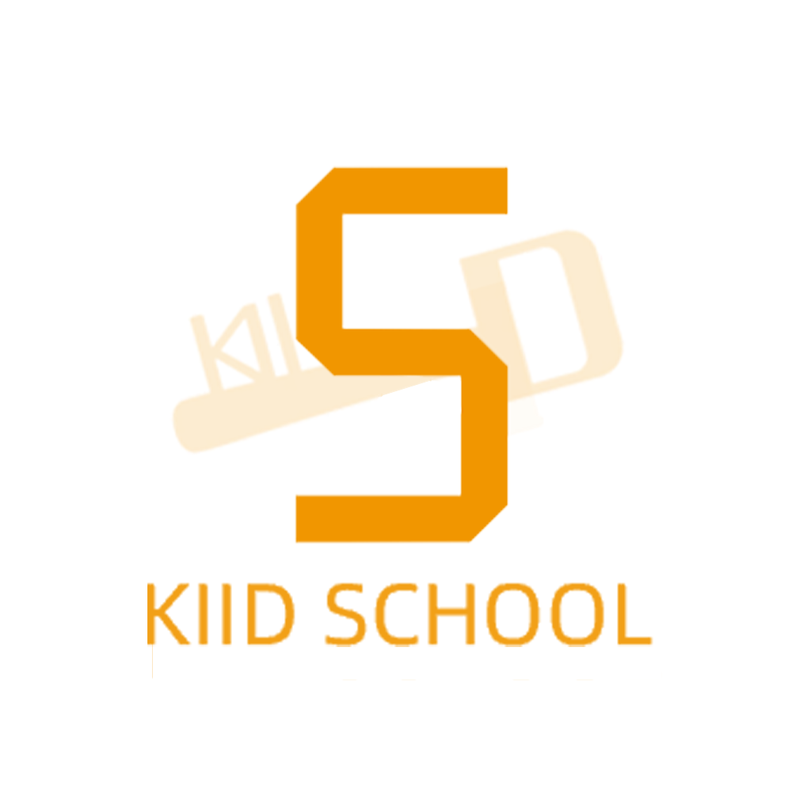</section></section><section style="text-align: center;font-size: 18px;color: rgb(241, 151, 0);box-sizing: border-box;"><p style="margin: 0px;padding: 0px;box-sizing: border-box;"><strong style="box-sizing: border-box;"><span>「每日规律活动」</span></strong></p></section><p style="white-space: normal;margin: 0px;padding: 0px;box-sizing: border-box;"><span><br/></span></p><section style="max-width: 100%;display: inline-block;width: 100%;box-sizing: border-box;"><section style="display: inline-block;box-shadow: rgb(171, 171, 171) 0px 0px 3px;padding: 15px 10px;background-color: rgb(255, 255, 255);border-color: rgb(255, 28, 69);border-width: 0px;border-radius: 6px;border-style: none;overflow: hidden;box-sizing: border-box;width: 100%;"><section style="overflow: hidden;box-sizing: border-box;max-width: 100%;"><section style="overflow: hidden;box-sizing: border-box;"><section style="max-width: 100%;box-sizing: border-box;"><section style="text-align: left;justify-content: flex-start;display: flex;flex-flow: row;box-sizing: border-box;max-width: 100%;"><section style="display: inline-block;vertical-align: top;width: 50%;align-self: flex-start;flex: 0 1 auto;max-width: 100%;box-sizing: border-box;"><section style="max-width: 100%;display: inline-block;width: 100%;vertical-align: top;box-sizing: border-box;"><section style="max-width: 100%;box-sizing: border-box;text-align: justify;width: 100%;"><section style="box-shadow: rgb(0, 0, 0) 0px 0px 0px;padding: 0px 4px 0px 0px;box-sizing: border-box;width: 100%;"><section style="max-width: 100%;box-sizing: border-box;"><section style="line-height: 0;display: inline-block;box-sizing: border-box;max-width: 100%;"><section style="max-width: 100%;vertical-align: middle;display: inline-block;box-shadow: rgb(0, 0, 0) 0px 0px 0px;border-width: 0px;border-radius: 3px;border-style: none;border-color: rgb(62, 62, 62);box-sizing: border-box;overflow: hidden;">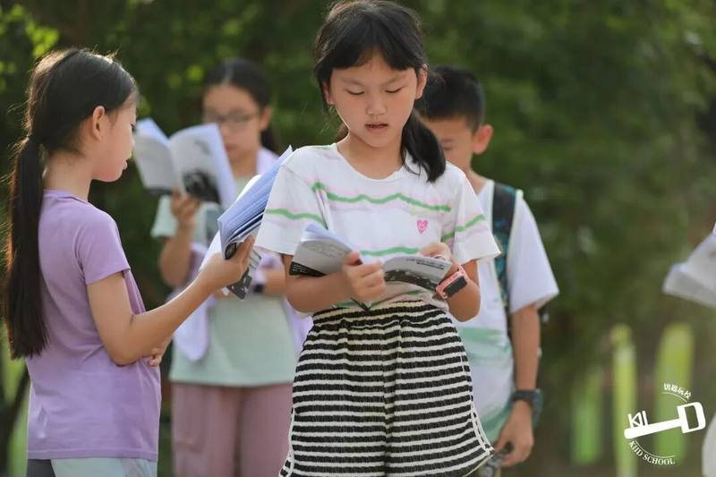</section></section></section></section></section></section></section><section style="display: inline-block;vertical-align: top;width: 50%;align-self: flex-start;flex: 0 1 auto;max-width: 100%;box-sizing: border-box;"><section style="max-width: 100%;display: inline-block;width: 100%;vertical-align: top;box-sizing: border-box;"><section style="max-width: 100%;box-sizing: border-box;text-align: justify;width: 100%;"><section style="padding: 0px 0px 0px 4px;box-shadow: rgb(0, 0, 0) 0px 0px 0px;box-sizing: border-box;width: 100%;"><section style="box-sizing: border-box;"><section style="max-width: 100%;margin-top: 10px;margin-bottom: 10px;box-sizing: border-box;"><section style="max-width: 100%;box-sizing: border-box;"><section style="text-align: left;box-sizing: border-box;max-width: 100%;"><section style="max-width: 100%;display: inline-block;width: auto;vertical-align: top;box-sizing: border-box;"><section style="padding-left: 6px;box-sizing: border-box;max-width: 100%;"><section style="box-sizing: border-box;"><section style="max-width: 100%;margin-left: 6px;margin-right: 6px;box-sizing: border-box;"><section style="max-width: 100%;box-sizing: border-box;"><section style="text-align: justify;padding-bottom: 2px;border-bottom: 1px solid rgb(52, 54, 60);border-top-color: rgb(52, 54, 60);border-right-color: rgb(52, 54, 60);border-left-color: rgb(52, 54, 60);box-sizing: border-box;max-width: 100%;"><p style="white-space: normal;margin: 0px;padding: 0px;box-sizing: border-box;"><strong style="box-sizing: border-box;"><span>清晨读诗</span></strong></p></section></section></section><section style="display: contents;box-sizing: border-box;"><section style="display: contents;box-sizing: border-box;"><section style="display: contents;box-sizing: border-box;"><section style="height: 22px;border-left: 1px solid rgb(52, 54, 60);margin-top: -21px;transform: rotate(-30deg);-webkit-transform: rotate(-30deg);-moz-transform: rotate(-30deg);-o-transform: rotate(-30deg);-webkit-transform: rotate(-30deg);-moz-transform: rotate(-30deg);-webkit-transform-origin: 0px center;-moz-transform-origin: 0px center;-o-transform-origin: 0px center;border-top-color: rgb(52, 54, 60);border-right-color: rgb(52, 54, 60);border-bottom-color: rgb(52, 54, 60);box-sizing: border-box;max-width: 100%;"><svg style="float: left;line-height: 0;width: 0px;box-sizing: border-box;"></svg></section></section></section></section></section></section></section></section></section></section><section style="max-width: 100%;margin: 10px 0% 0px;box-sizing: border-box;"><section style="max-width: 100%;box-sizing: border-box;"><section style="font-size: 14px;box-sizing: border-box;max-width: 100%;letter-spacing: 0.544px;"><p style="white-space: normal;margin: 0px;padding: 0px;box-sizing: border-box;"><span>玩伴们精心编辑的《诗歌读本》，带孩子了解课本上没有的现代诗，感受美妙的文字，打开表达的疆界。</span></p></section></section></section></section></section></section></section></section></section></section></section></section></section></section><section style="max-width: 100%;display: inline-block;width: 100%;box-sizing: border-box;"><section style="display: inline-block;box-shadow: rgb(171, 171, 171) 0px 0px 3px;padding: 15px 10px;background-color: rgb(255, 255, 255);border-color: rgb(255, 28, 69);border-width: 0px;border-radius: 6px;border-style: none;overflow: hidden;box-sizing: border-box;width: 100%;"><section style="overflow: hidden;box-sizing: border-box;max-width: 100%;"><section style="overflow: hidden;box-sizing: border-box;"><section style="max-width: 100%;box-sizing: border-box;"><section style="text-align: left;justify-content: flex-start;display: flex;flex-flow: row;box-sizing: border-box;max-width: 100%;"><section style="display: inline-block;vertical-align: top;width: 50%;align-self: flex-start;flex: 0 1 auto;max-width: 100%;box-sizing: border-box;"><section style="max-width: 100%;display: inline-block;width: 100%;vertical-align: top;box-sizing: border-box;"><section style="max-width: 100%;box-sizing: border-box;text-align: justify;width: 100%;"><section style="box-shadow: rgb(0, 0, 0) 0px 0px 0px;padding: 0px 4px 0px 0px;box-sizing: border-box;width: 100%;"><section style="box-sizing: border-box;"><section style="max-width: 100%;box-sizing: border-box;"><section style="max-width: 100%;box-sizing: border-box;"><section style="text-align: right;box-sizing: border-box;max-width: 100%;"><section style="max-width: 100%;display: inline-block;width: auto;vertical-align: top;box-sizing: border-box;"><section style="padding-right: 6px;box-sizing: border-box;max-width: 100%;"><section style="box-sizing: border-box;"><section style="max-width: 100%;margin-right: 6px;box-sizing: border-box;"><section style="max-width: 100%;box-sizing: border-box;"><section style="text-align: unset;border-bottom: 1px solid rgb(52, 54, 60);border-top-color: rgb(52, 54, 60);border-right-color: rgb(52, 54, 60);border-left-color: rgb(52, 54, 60);box-sizing: border-box;max-width: 100%;"><p style="margin: 0px;padding: 0px;box-sizing: border-box;"><strong style="box-sizing: border-box;"><span>傍晚运动</span></strong></p></section></section></section><section style="display: contents;box-sizing: border-box;"><section style="display: contents;box-sizing: border-box;"><section style="display: contents;box-sizing: border-box;"><section style="width: 0px;margin-left: auto;height: 22px;border-left: 1px solid rgb(52, 54, 60);margin-top: -21px;transform: rotate(30deg);-webkit-transform: rotate(30deg);-moz-transform: rotate(30deg);-o-transform: rotate(30deg);-webkit-transform: rotate(30deg);-moz-transform: rotate(30deg);-webkit-transform-origin: 0px center;-moz-transform-origin: 0px center;-o-transform-origin: 0px center;border-top-color: rgb(52, 54, 60);border-right-color: rgb(52, 54, 60);border-bottom-color: rgb(52, 54, 60);box-sizing: border-box;max-width: 100%;"><svg style="float: left;line-height: 0;width: 0px;box-sizing: border-box;"></svg></section></section></section></section></section></section></section></section></section></section><section style="max-width: 100%;margin: 10px 0% 0px;box-sizing: border-box;"><section style="max-width: 100%;box-sizing: border-box;"><section style="font-size: 14px;box-sizing: border-box;max-width: 100%;letter-spacing: 0.544px;"><p style="white-space: normal;margin: 0px;padding: 0px;box-sizing: border-box;"><span>风靡全球校园的极限飞盘和腰旗橄榄球运动，还有钥匙玩校独立改编的阵地运动，让爱运动的孩子尽情释放荷尔蒙，让不爱运动的孩子从此爱上运动。</span></p></section></section></section></section></section></section></section></section><section style="display: inline-block;vertical-align: top;width: 50%;align-self: flex-start;flex: 0 1 auto;max-width: 100%;box-sizing: border-box;"><section style="max-width: 100%;display: inline-block;width: 100%;vertical-align: top;box-sizing: border-box;"><section style="max-width: 100%;box-sizing: border-box;text-align: justify;width: 100%;"><section style="padding: 0px 0px 0px 4px;box-shadow: rgb(0, 0, 0) 0px 0px 0px;box-sizing: border-box;width: 100%;"><section style="max-width: 100%;box-sizing: border-box;"><section style="line-height: 0;display: inline-block;box-sizing: border-box;max-width: 100%;"><section style="max-width: 100%;vertical-align: middle;display: inline-block;box-shadow: rgb(0, 0, 0) 0px 0px 0px;border-width: 0px;border-radius: 3px;border-style: none;border-color: rgb(62, 62, 62);box-sizing: border-box;overflow: hidden;">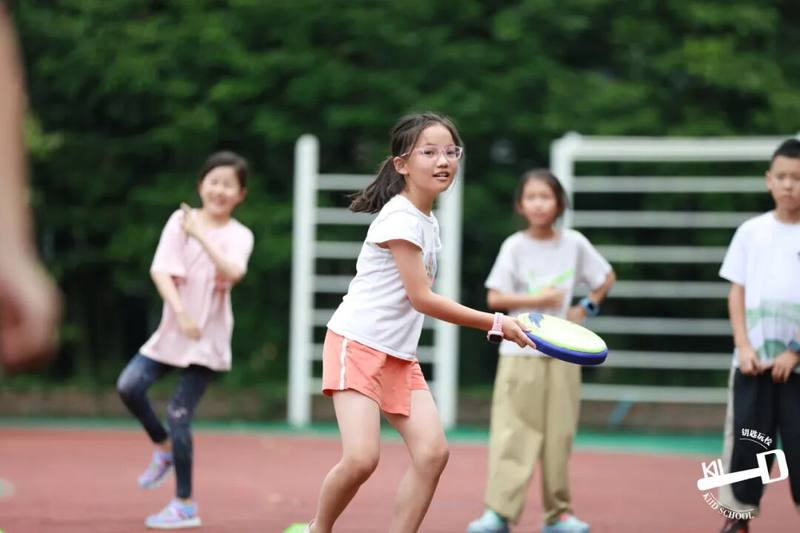</section></section></section></section></section></section></section></section></section></section></section></section></section><section style="max-width: 100%;display: inline-block;width: 100%;box-sizing: border-box;"><section style="display: inline-block;box-shadow: rgb(171, 171, 171) 0px 0px 3px;padding: 15px 10px;background-color: rgb(255, 255, 255);border-color: rgb(255, 28, 69);border-width: 0px;border-radius: 6px;border-style: none;overflow: hidden;box-sizing: border-box;width: 100%;"><section style="overflow: hidden;box-sizing: border-box;max-width: 100%;"><section style="overflow: hidden;box-sizing: border-box;"><section style="max-width: 100%;box-sizing: border-box;"><section style="text-align: left;justify-content: flex-start;display: flex;flex-flow: row;box-sizing: border-box;max-width: 100%;"><section style="display: inline-block;vertical-align: top;width: 50%;align-self: flex-start;flex: 0 1 auto;max-width: 100%;box-sizing: border-box;"><section style="max-width: 100%;display: inline-block;width: 100%;vertical-align: top;box-sizing: border-box;"><section style="max-width: 100%;box-sizing: border-box;text-align: justify;width: 100%;"><section style="box-shadow: rgb(0, 0, 0) 0px 0px 0px;padding: 0px 4px 0px 0px;box-sizing: border-box;width: 100%;"><section style="max-width: 100%;box-sizing: border-box;"><section style="line-height: 0;display: inline-block;box-sizing: border-box;max-width: 100%;"><section style="max-width: 100%;vertical-align: middle;display: inline-block;box-shadow: rgb(0, 0, 0) 0px 0px 0px;border-width: 0px;border-radius: 3px;border-style: none;border-color: rgb(62, 62, 62);box-sizing: border-box;overflow: hidden;">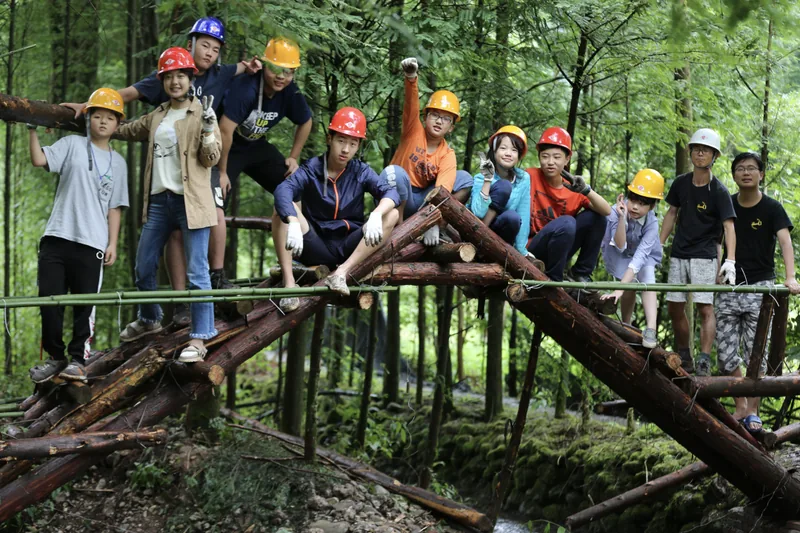</section></section></section></section></section></section></section><section style="display: inline-block;vertical-align: top;width: 50%;align-self: flex-start;flex: 0 1 auto;max-width: 100%;box-sizing: border-box;"><section style="max-width: 100%;display: inline-block;width: 100%;vertical-align: top;box-sizing: border-box;"><section style="max-width: 100%;box-sizing: border-box;text-align: justify;width: 100%;"><section style="padding: 0px 0px 0px 4px;box-shadow: rgb(0, 0, 0) 0px 0px 0px;box-sizing: border-box;width: 100%;"><section style="box-sizing: border-box;"><section style="max-width: 100%;margin-top: 10px;margin-bottom: 10px;box-sizing: border-box;"><section style="max-width: 100%;box-sizing: border-box;"><section style="text-align: left;box-sizing: border-box;max-width: 100%;"><section style="max-width: 100%;display: inline-block;width: auto;vertical-align: top;box-sizing: border-box;"><section style="padding-left: 6px;box-sizing: border-box;max-width: 100%;"><section style="box-sizing: border-box;"><section style="max-width: 100%;margin-left: 6px;margin-right: 6px;box-sizing: border-box;"><section style="max-width: 100%;box-sizing: border-box;"><section style="text-align: justify;padding-bottom: 2px;border-bottom: 1px solid rgb(52, 54, 60);border-top-color: rgb(52, 54, 60);border-right-color: rgb(52, 54, 60);border-left-color: rgb(52, 54, 60);box-sizing: border-box;max-width: 100%;"><p style="white-space: normal;margin: 0px;padding: 0px;box-sizing: border-box;"><strong style="box-sizing: border-box;"><span>目标导向活动</span></strong></p></section></section></section><section style="display: contents;box-sizing: border-box;"><section style="display: contents;box-sizing: border-box;"><section style="display: contents;box-sizing: border-box;"><section style="height: 22px;border-left: 1px solid rgb(52, 54, 60);margin-top: -21px;transform: rotate(-30deg);-webkit-transform: rotate(-30deg);-moz-transform: rotate(-30deg);-o-transform: rotate(-30deg);-webkit-transform: rotate(-30deg);-moz-transform: rotate(-30deg);-webkit-transform-origin: 0px center;-moz-transform-origin: 0px center;-o-transform-origin: 0px center;border-top-color: rgb(52, 54, 60);border-right-color: rgb(52, 54, 60);border-bottom-color: rgb(52, 54, 60);box-sizing: border-box;max-width: 100%;"><svg style="float: left;line-height: 0;width: 0px;box-sizing: border-box;"></svg></section></section></section></section></section></section></section></section></section></section><section style="max-width: 100%;margin: 10px 0% 0px;box-sizing: border-box;"><section style="max-width: 100%;box-sizing: border-box;"><section style="font-size: 14px;box-sizing: border-box;max-width: 100%;letter-spacing: 0.544px;"><p style="white-space: normal;margin: 0px;padding: 0px;box-sizing: border-box;"><span>用有限的时间做成一件小事，培养解决问题的能力：低科技小组、电影小组、工程小组……</span></p></section></section></section></section></section></section></section></section></section></section></section></section></section></section><section style="max-width: 100%;display: inline-block;width: 100%;box-sizing: border-box;"><section style="display: inline-block;box-shadow: rgb(171, 171, 171) 0px 0px 3px;padding: 15px 10px;background-color: rgb(255, 255, 255);border-color: rgb(255, 28, 69);border-width: 0px;border-radius: 6px;border-style: none;overflow: hidden;box-sizing: border-box;width: 100%;"><section style="overflow: hidden;box-sizing: border-box;max-width: 100%;"><section style="overflow: hidden;box-sizing: border-box;"><section style="max-width: 100%;box-sizing: border-box;"><section style="text-align: left;justify-content: flex-start;display: flex;flex-flow: row;box-sizing: border-box;max-width: 100%;"><section style="display: inline-block;vertical-align: top;width: 50%;align-self: flex-start;flex: 0 1 auto;max-width: 100%;box-sizing: border-box;"><section style="max-width: 100%;display: inline-block;width: 100%;vertical-align: top;box-sizing: border-box;"><section style="max-width: 100%;box-sizing: border-box;text-align: justify;width: 100%;"><section style="box-shadow: rgb(0, 0, 0) 0px 0px 0px;padding: 0px 4px 0px 0px;box-sizing: border-box;width: 100%;"><section style="box-sizing: border-box;"><section style="max-width: 100%;box-sizing: border-box;"><section style="max-width: 100%;box-sizing: border-box;"><section style="text-align: right;box-sizing: border-box;max-width: 100%;"><section style="max-width: 100%;display: inline-block;width: auto;vertical-align: top;box-sizing: border-box;"><section style="padding-right: 6px;box-sizing: border-box;max-width: 100%;"><section style="box-sizing: border-box;"><section style="max-width: 100%;margin-right: 6px;box-sizing: border-box;"><section style="max-width: 100%;box-sizing: border-box;"><section style="text-align: unset;border-bottom: 1px solid rgb(52, 54, 60);border-top-color: rgb(52, 54, 60);border-right-color: rgb(52, 54, 60);border-left-color: rgb(52, 54, 60);box-sizing: border-box;max-width: 100%;"><p style="margin: 0px;padding: 0px;box-sizing: border-box;"><strong style="box-sizing: border-box;"><span>夜间小组活动</span></strong></p></section></section></section><section style="display: contents;box-sizing: border-box;"><section style="display: contents;box-sizing: border-box;"><section style="display: contents;box-sizing: border-box;"><section style="width: 0px;margin-left: auto;height: 22px;border-left: 1px solid rgb(52, 54, 60);margin-top: -21px;transform: rotate(30deg);-webkit-transform: rotate(30deg);-moz-transform: rotate(30deg);-o-transform: rotate(30deg);-webkit-transform: rotate(30deg);-moz-transform: rotate(30deg);-webkit-transform-origin: 0px center;-moz-transform-origin: 0px center;-o-transform-origin: 0px center;border-top-color: rgb(52, 54, 60);border-right-color: rgb(52, 54, 60);border-bottom-color: rgb(52, 54, 60);box-sizing: border-box;max-width: 100%;"><svg style="float: left;line-height: 0;width: 0px;box-sizing: border-box;"></svg></section></section></section></section></section></section></section></section></section></section><section style="max-width: 100%;margin: 10px 0% 0px;box-sizing: border-box;"><section style="max-width: 100%;box-sizing: border-box;"><section style="font-size: 14px;box-sizing: border-box;max-width: 100%;letter-spacing: 0.544px;"><p style="white-space: normal;margin: 0px;padding: 0px;box-sizing: border-box;"><span>严肃问题小组、情感小组，畅谈青春期那些孩子想聊却没人陪孩子聊的重要话题。</span></p></section></section></section></section></section></section></section></section><section style="display: inline-block;vertical-align: top;width: 50%;align-self: flex-start;flex: 0 1 auto;max-width: 100%;box-sizing: border-box;"><section style="max-width: 100%;display: inline-block;width: 100%;vertical-align: top;box-sizing: border-box;"><section style="max-width: 100%;box-sizing: border-box;text-align: justify;width: 100%;"><section style="padding: 0px 0px 0px 4px;box-shadow: rgb(0, 0, 0) 0px 0px 0px;box-sizing: border-box;width: 100%;"><section style="max-width: 100%;box-sizing: border-box;"><section style="line-height: 0;display: inline-block;box-sizing: border-box;max-width: 100%;"><section style="max-width: 100%;vertical-align: middle;display: inline-block;box-shadow: rgb(0, 0, 0) 0px 0px 0px;border-width: 0px;border-radius: 3px;border-style: none;border-color: rgb(62, 62, 62);box-sizing: border-box;overflow: hidden;"></section></section></section></section></section></section></section></section></section></section></section></section></section><section style="max-width: 100%;display: inline-block;width: 100%;box-sizing: border-box;"><section style="display: inline-block;box-shadow: rgb(171, 171, 171) 0px 0px 3px;padding: 15px 10px;background-color: rgb(255, 255, 255);border-color: rgb(255, 28, 69);border-width: 0px;border-radius: 6px;border-style: none;overflow: hidden;box-sizing: border-box;width: 100%;"><section style="overflow: hidden;box-sizing: border-box;max-width: 100%;"><section style="overflow: hidden;box-sizing: border-box;"><section style="max-width: 100%;box-sizing: border-box;"><section style="text-align: left;justify-content: flex-start;display: flex;flex-flow: row;box-sizing: border-box;max-width: 100%;"><section style="display: inline-block;vertical-align: top;width: 50%;align-self: flex-start;flex: 0 1 auto;max-width: 100%;box-sizing: border-box;"><section style="max-width: 100%;display: inline-block;width: 100%;vertical-align: top;box-sizing: border-box;"><section style="max-width: 100%;box-sizing: border-box;text-align: justify;width: 100%;"><section style="box-shadow: rgb(0, 0, 0) 0px 0px 0px;padding: 0px 4px 0px 0px;box-sizing: border-box;width: 100%;"><section style="max-width: 100%;box-sizing: border-box;"><section style="line-height: 0;display: inline-block;box-sizing: border-box;max-width: 100%;"><section style="max-width: 100%;vertical-align: middle;display: inline-block;box-shadow: rgb(0, 0, 0) 0px 0px 0px;border-width: 0px;border-radius: 3px;border-style: none;border-color: rgb(62, 62, 62);box-sizing: border-box;overflow: hidden;">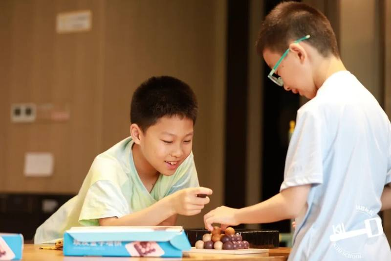</section></section></section></section></section></section></section><section style="display: inline-block;vertical-align: top;width: 50%;align-self: flex-start;flex: 0 1 auto;max-width: 100%;box-sizing: border-box;"><section style="max-width: 100%;display: inline-block;width: 100%;vertical-align: top;box-sizing: border-box;"><section style="max-width: 100%;box-sizing: border-box;text-align: justify;width: 100%;"><section style="padding: 0px 0px 0px 4px;box-shadow: rgb(0, 0, 0) 0px 0px 0px;box-sizing: border-box;width: 100%;"><section style="box-sizing: border-box;"><section style="max-width: 100%;margin-top: 10px;margin-bottom: 10px;box-sizing: border-box;"><section style="max-width: 100%;box-sizing: border-box;"><section style="text-align: left;box-sizing: border-box;max-width: 100%;"><section style="max-width: 100%;display: inline-block;width: auto;vertical-align: top;box-sizing: border-box;"><section style="padding-left: 6px;box-sizing: border-box;max-width: 100%;"><section style="box-sizing: border-box;"><section style="max-width: 100%;margin-left: 6px;margin-right: 6px;box-sizing: border-box;"><section style="max-width: 100%;box-sizing: border-box;"><section style="text-align: justify;padding-bottom: 2px;border-bottom: 1px solid rgb(52, 54, 60);border-top-color: rgb(52, 54, 60);border-right-color: rgb(52, 54, 60);border-left-color: rgb(52, 54, 60);box-sizing: border-box;max-width: 100%;"><p style="text-align: center;white-space: normal;margin: 0px;padding: 0px;box-sizing: border-box;"><strong style="box-sizing: border-box;"><span>桌游活动</span></strong></p></section></section></section><section style="display: contents;box-sizing: border-box;"><section style="display: contents;box-sizing: border-box;"><section style="display: contents;box-sizing: border-box;"><section style="height: 22px;border-left: 1px solid rgb(52, 54, 60);margin-top: -21px;transform: rotate(-30deg);-webkit-transform: rotate(-30deg);-moz-transform: rotate(-30deg);-o-transform: rotate(-30deg);-webkit-transform: rotate(-30deg);-moz-transform: rotate(-30deg);-webkit-transform-origin: 0px center;-moz-transform-origin: 0px center;-o-transform-origin: 0px center;border-top-color: rgb(52, 54, 60);border-right-color: rgb(52, 54, 60);border-bottom-color: rgb(52, 54, 60);box-sizing: border-box;max-width: 100%;"><svg style="float: left;line-height: 0;width: 0px;box-sizing: border-box;"></svg></section></section></section></section></section></section></section></section></section></section><section style="max-width: 100%;margin: 10px 0% 0px;box-sizing: border-box;"><section style="max-width: 100%;box-sizing: border-box;"><section style="font-size: 14px;box-sizing: border-box;max-width: 100%;letter-spacing: 0.544px;"><p style="white-space: normal;margin: 0px;padding: 0px;box-sizing: border-box;"><span>健康的线下桌面游戏，动手、动脑，交流，竞争；钥匙玩校进行过100款以上的桌游教育活动开发：</span><span><br/></span><span>卡坦岛（学习谈判沟通，学习贸易技巧和经济规律）</span><span><br/></span><span>文明创新（换个角度，在游戏中了解人类文明进程里的重要元素）</span><span><br/></span><span>农场主（经典的经营策略游戏，通过欧洲中世纪的农场生活学会规划管理）</span></p></section></section></section></section></section></section></section></section></section></section></section></section></section></section><section style="text-align: center;margin-top: 10px;margin-bottom: 10px;line-height: 0;box-sizing: border-box;"><section style="max-width: 100%;vertical-align: middle;display: inline-block;width: 25%;height: auto;box-sizing: border-box;"></section></section><section style="text-align: center;font-size: 18px;color: rgb(241, 151, 0);line-height: 2;letter-spacing: 2px;padding: 0px 10px;box-sizing: border-box;"><p style="margin: 0px;padding: 0px;box-sizing: border-box;"><strong style="box-sizing: border-box;"><span>「报名信息」</span></strong></p></section><p style="white-space: normal;margin: 0px;padding: 0px;box-sizing: border-box;"><span><br/></span></p><section style="max-width: 100%;box-sizing: border-box;"><section style="text-align: left;justify-content: flex-start;display: flex;flex-flow: row;box-sizing: border-box;max-width: 100%;"><section style="display: inline-block;vertical-align: top;width: auto;align-self: stretch;flex: 0 0 auto;min-width: 10%;max-width: 100%;height: auto;background-color: rgb(245, 177, 63);box-sizing: border-box;"><section style="display: contents;box-sizing: border-box;max-width: 100%;"><section style="display: contents;box-sizing: border-box;"><section style="line-height: 1.5;letter-spacing: 0px;color: rgb(245,177,63);padding: 0px 10px;box-sizing: border-box;max-width: 100%;"><p style="margin: 0px;padding: 0px;box-sizing: border-box;"><span><br/></span></p></section></section></section></section><section style="display: inline-block;vertical-align: top;width: auto;align-self: stretch;flex: 0 0 0%;height: auto;line-height: 0;box-sizing: border-box;max-width: 100%;"><section style="display: contents;box-sizing: border-box;max-width: 100%;"><section style="display: contents;box-sizing: border-box;"><section style="max-width: 100%;box-sizing: border-box;"><section style="text-align: center;box-sizing: border-box;"><section style="display: inline-block;width: 6px;height: 12px;vertical-align: top;overflow: hidden;border-style: solid;border-width: 6px 3px;border-color: rgb(245,177,63) rgba(255, 255, 255, 0) rgba(255, 255, 255, 0) rgb(245,177,63);box-sizing: border-box;"><svg style="float: left;line-height: 0;width: 0px;box-sizing: border-box;"></svg></section></section><section style="transform: perspective(0px);-webkit-transform: perspective(0px);-moz-transform: perspective(0px);-o-transform: perspective(0px);-webkit-transform: perspective(0px);-moz-transform: perspective(0px);-o-transform: perspective(0px);transform-style: flat;box-sizing: border-box;"><section style="text-align: center;transform: rotateX(180deg);-webkit-transform: rotateX(180deg);-moz-transform: rotateX(180deg);-o-transform: rotateX(180deg);-webkit-transform: rotateX(180deg);-moz-transform: rotateX(180deg);-o-transform: rotateX(180deg);box-sizing: border-box;"><section style="display: inline-block;width: 6px;height: 12px;vertical-align: top;overflow: hidden;border-style: solid;border-width: 6px 3px;border-color: rgb(245,177,63) rgba(255, 255, 255, 0) rgba(255, 255, 255, 0) rgb(245,177,63);box-sizing: border-box;"><svg style="float: left;line-height: 0;width: 0px;box-sizing: border-box;"></svg></section></section></section></section></section></section></section><section style="display: inline-block;vertical-align: middle;width: auto;align-self: center;flex: 0 0 auto;min-width: 10%;max-width: 100%;height: auto;box-sizing: border-box;"><section style="max-width: 100%;box-sizing: border-box;"><section style="text-align: justify;color: rgb(120, 120, 120);line-height: 1;letter-spacing: 0px;padding: 0px 10px;box-sizing: border-box;max-width: 100%;"><p style="margin: 0px;padding: 0px;box-sizing: border-box;white-space: normal;"><strong style="box-sizing: border-box;"><span>夏令营时间及地点</span></strong></p></section></section></section><section style="display: inline-block;vertical-align: middle;width: auto;align-self: center;flex: 100 100 0%;height: auto;box-sizing: border-box;max-width: 100%;"><section style="display: contents;box-sizing: border-box;"><section style="box-sizing: border-box;max-width: 100%;"><section style="background-color: rgb(223, 223, 223);height: 1px;box-sizing: border-box;"><svg style="float: left;line-height: 0;width: 0px;box-sizing: border-box;"></svg></section></section></section></section></section></section><section style="font-size: 15px;line-height: 2;letter-spacing: 2px;padding: 0px 10px;box-sizing: border-box;"><p style="white-space: normal;margin: 0px;padding: 0px;box-sizing: border-box;"><span>8月8日-8月17日，共10日</span></p><p style="white-space: normal;margin: 0px;padding: 0px;box-sizing: border-box;"><span>四川国际标榜职业学院</span></p></section><p style="white-space: normal;margin: 0px;padding: 0px;box-sizing: border-box;"><span><br/></span></p><section style="max-width: 100%;box-sizing: border-box;"><section style="text-align: left;justify-content: flex-start;display: flex;flex-flow: row;box-sizing: border-box;max-width: 100%;"><section style="display: inline-block;vertical-align: top;width: auto;align-self: stretch;flex: 0 0 auto;min-width: 10%;max-width: 100%;height: auto;background-color: rgb(245, 177, 63);box-sizing: border-box;"><section style="display: contents;box-sizing: border-box;max-width: 100%;"><section style="display: contents;box-sizing: border-box;"><section style="line-height: 1.5;letter-spacing: 0px;color: rgb(255, 255, 255);padding: 0px 10px;box-sizing: border-box;max-width: 100%;"><p style="margin: 0px;padding: 0px;box-sizing: border-box;"><span><br/></span></p></section></section></section></section><section style="display: inline-block;vertical-align: top;width: auto;align-self: stretch;flex: 0 0 0%;height: auto;line-height: 0;box-sizing: border-box;max-width: 100%;"><section style="display: contents;box-sizing: border-box;max-width: 100%;"><section style="display: contents;box-sizing: border-box;"><section style="max-width: 100%;box-sizing: border-box;"><section style="text-align: center;box-sizing: border-box;"><section style="display: inline-block;width: 6px;height: 12px;vertical-align: top;overflow: hidden;border-style: solid;border-width: 6px 3px;border-color: rgb(245,177,63) rgba(255, 255, 255, 0) rgba(255, 255, 255, 0) rgb(245,177,63);box-sizing: border-box;"><svg style="float: left;line-height: 0;width: 0px;box-sizing: border-box;"></svg></section></section><section style="transform: perspective(0px);-webkit-transform: perspective(0px);-moz-transform: perspective(0px);-o-transform: perspective(0px);-webkit-transform: perspective(0px);-moz-transform: perspective(0px);-o-transform: perspective(0px);transform-style: flat;box-sizing: border-box;"><section style="text-align: center;transform: rotateX(180deg);-webkit-transform: rotateX(180deg);-moz-transform: rotateX(180deg);-o-transform: rotateX(180deg);-webkit-transform: rotateX(180deg);-moz-transform: rotateX(180deg);-o-transform: rotateX(180deg);box-sizing: border-box;"><section style="display: inline-block;width: 6px;height: 12px;vertical-align: top;overflow: hidden;border-style: solid;border-width: 6px 3px;border-color: rgb(245,177,63) rgba(255, 255, 255, 0) rgba(255, 255, 255, 0) rgb(245,177,63);box-sizing: border-box;"><svg style="float: left;line-height: 0;width: 0px;box-sizing: border-box;"></svg></section></section></section></section></section></section></section><section style="display: inline-block;vertical-align: middle;width: auto;align-self: center;flex: 0 0 auto;min-width: 10%;max-width: 100%;height: auto;box-sizing: border-box;"><section style="max-width: 100%;box-sizing: border-box;"><section style="text-align: justify;color: rgb(120, 120, 120);line-height: 1;letter-spacing: 0px;padding: 0px 10px;box-sizing: border-box;max-width: 100%;"><p style="margin: 0px;padding: 0px;box-sizing: border-box;white-space: normal;"><strong style="box-sizing: border-box;"><span>适合年龄</span></strong></p></section></section></section><section style="display: inline-block;vertical-align: middle;width: auto;align-self: center;flex: 100 100 0%;height: auto;box-sizing: border-box;max-width: 100%;"><section style="display: contents;box-sizing: border-box;"><section style="box-sizing: border-box;max-width: 100%;"><section style="background-color: rgb(223, 223, 223);height: 1px;box-sizing: border-box;"><svg style="float: left;line-height: 0;width: 0px;box-sizing: border-box;"></svg></section></section></section></section></section></section><section style="font-size: 15px;line-height: 2;letter-spacing: 2px;padding: 0px 10px;box-sizing: border-box;"><p style="white-space: normal;margin: 0px;padding: 0px;box-sizing: border-box;"><span>9-12岁</span></p></section><p style="white-space: normal;margin: 0px;padding: 0px;box-sizing: border-box;"><span><br/></span></p><section style="max-width: 100%;box-sizing: border-box;"><section style="text-align: left;justify-content: flex-start;display: flex;flex-flow: row;box-sizing: border-box;max-width: 100%;"><section style="display: inline-block;vertical-align: top;width: auto;align-self: stretch;flex: 0 0 auto;min-width: 10%;max-width: 100%;height: auto;background-color: rgb(245, 177, 63);box-sizing: border-box;"><section style="display: contents;box-sizing: border-box;max-width: 100%;"><section style="display: contents;box-sizing: border-box;"><section style="line-height: 1.5;letter-spacing: 0px;color: rgb(255, 255, 255);padding: 0px 10px;box-sizing: border-box;max-width: 100%;"><p style="margin: 0px;padding: 0px;box-sizing: border-box;"><span><br/></span></p></section></section></section></section><section style="display: inline-block;vertical-align: top;width: auto;align-self: stretch;flex: 0 0 0%;height: auto;line-height: 0;box-sizing: border-box;max-width: 100%;"><section style="display: contents;box-sizing: border-box;max-width: 100%;"><section style="display: contents;box-sizing: border-box;"><section style="max-width: 100%;box-sizing: border-box;"><section style="text-align: center;box-sizing: border-box;"><section style="display: inline-block;width: 6px;height: 12px;vertical-align: top;overflow: hidden;border-style: solid;border-width: 6px 3px;border-color: rgb(245,177,63) rgba(255, 255, 255, 0) rgba(255, 255, 255, 0) rgb(245,177,63);box-sizing: border-box;"><svg style="float: left;line-height: 0;width: 0px;box-sizing: border-box;"></svg></section></section><section style="transform: perspective(0px);-webkit-transform: perspective(0px);-moz-transform: perspective(0px);-o-transform: perspective(0px);-webkit-transform: perspective(0px);-moz-transform: perspective(0px);-o-transform: perspective(0px);transform-style: flat;box-sizing: border-box;"><section style="text-align: center;transform: rotateX(180deg);-webkit-transform: rotateX(180deg);-moz-transform: rotateX(180deg);-o-transform: rotateX(180deg);-webkit-transform: rotateX(180deg);-moz-transform: rotateX(180deg);-o-transform: rotateX(180deg);box-sizing: border-box;"><section style="display: inline-block;width: 6px;height: 12px;vertical-align: top;overflow: hidden;border-style: solid;border-width: 6px 3px;border-color: rgb(245,177,63) rgba(255, 255, 255, 0) rgba(255, 255, 255, 0) rgb(245,177,63);box-sizing: border-box;"><svg style="float: left;line-height: 0;width: 0px;box-sizing: border-box;"></svg></section></section></section></section></section></section></section><section style="display: inline-block;vertical-align: middle;width: auto;align-self: center;flex: 0 0 auto;min-width: 10%;max-width: 100%;height: auto;box-sizing: border-box;"><section style="max-width: 100%;box-sizing: border-box;"><section style="text-align: justify;color: rgb(120, 120, 120);line-height: 1;letter-spacing: 0px;padding: 0px 10px;box-sizing: border-box;max-width: 100%;"><p style="margin: 0px;padding: 0px;box-sizing: border-box;white-space: normal;"><strong style="box-sizing: border-box;"><span>夏令营名额</span></strong></p></section></section></section><section style="display: inline-block;vertical-align: middle;width: auto;align-self: center;flex: 100 100 0%;height: auto;box-sizing: border-box;max-width: 100%;"><section style="display: contents;box-sizing: border-box;"><section style="box-sizing: border-box;max-width: 100%;"><section style="background-color: rgb(223, 223, 223);height: 1px;box-sizing: border-box;"><svg style="float: left;line-height: 0;width: 0px;box-sizing: border-box;"></svg></section></section></section></section></section></section><section style="font-size: 15px;line-height: 2;letter-spacing: 2px;padding: 0px 10px;box-sizing: border-box;"><p style="white-space: normal;margin: 0px;padding: 0px;box-sizing: border-box;"><span>每院25人（共四个学院）</span></p></section><p style="white-space: normal;margin: 0px;padding: 0px;box-sizing: border-box;"><span><br/></span></p><section style="max-width: 100%;box-sizing: border-box;"><section style="text-align: left;justify-content: flex-start;display: flex;flex-flow: row;box-sizing: border-box;max-width: 100%;"><section style="display: inline-block;vertical-align: top;width: auto;align-self: stretch;flex: 0 0 auto;min-width: 10%;max-width: 100%;height: auto;background-color: rgb(245, 177, 63);box-sizing: border-box;"><section style="display: contents;box-sizing: border-box;max-width: 100%;"><section style="display: contents;box-sizing: border-box;"><section style="line-height: 1.5;letter-spacing: 0px;color: rgb(255, 255, 255);padding: 0px 10px;box-sizing: border-box;max-width: 100%;"><p style="margin: 0px;padding: 0px;box-sizing: border-box;"><span><br/></span></p></section></section></section></section><section style="display: inline-block;vertical-align: top;width: auto;align-self: stretch;flex: 0 0 0%;height: auto;line-height: 0;box-sizing: border-box;max-width: 100%;"><section style="display: contents;box-sizing: border-box;max-width: 100%;"><section style="display: contents;box-sizing: border-box;"><section style="max-width: 100%;box-sizing: border-box;"><section style="text-align: center;box-sizing: border-box;"><section style="display: inline-block;width: 6px;height: 12px;vertical-align: top;overflow: hidden;border-style: solid;border-width: 6px 3px;border-color: rgb(245,177,63) rgba(255, 255, 255, 0) rgba(255, 255, 255, 0) rgb(245,177,63);box-sizing: border-box;"><svg style="float: left;line-height: 0;width: 0px;box-sizing: border-box;"></svg></section></section><section style="transform: perspective(0px);-webkit-transform: perspective(0px);-moz-transform: perspective(0px);-o-transform: perspective(0px);-webkit-transform: perspective(0px);-moz-transform: perspective(0px);-o-transform: perspective(0px);transform-style: flat;box-sizing: border-box;"><section style="text-align: center;transform: rotateX(180deg);-webkit-transform: rotateX(180deg);-moz-transform: rotateX(180deg);-o-transform: rotateX(180deg);-webkit-transform: rotateX(180deg);-moz-transform: rotateX(180deg);-o-transform: rotateX(180deg);box-sizing: border-box;"><section style="display: inline-block;width: 6px;height: 12px;vertical-align: top;overflow: hidden;border-style: solid;border-width: 6px 3px;border-color: rgb(245,177,63) rgba(255, 255, 255, 0) rgba(255, 255, 255, 0) rgb(245,177,63);box-sizing: border-box;"><svg style="float: left;line-height: 0;width: 0px;box-sizing: border-box;"></svg></section></section></section></section></section></section></section><section style="display: inline-block;vertical-align: middle;width: auto;align-self: center;flex: 0 0 auto;min-width: 10%;max-width: 100%;height: auto;box-sizing: border-box;"><section style="max-width: 100%;box-sizing: border-box;"><section style="text-align: justify;color: rgb(120, 120, 120);line-height: 1;letter-spacing: 0px;padding: 0px 10px;box-sizing: border-box;max-width: 100%;"><p style="margin: 0px;padding: 0px;box-sizing: border-box;white-space: normal;"><strong style="box-sizing: border-box;"><span>夏令营费用</span></strong></p></section></section></section><section style="display: inline-block;vertical-align: middle;width: auto;align-self: center;flex: 100 100 0%;height: auto;box-sizing: border-box;max-width: 100%;"><section style="display: contents;box-sizing: border-box;"><section style="box-sizing: border-box;max-width: 100%;"><section style="background-color: rgb(223, 223, 223);height: 1px;box-sizing: border-box;"><svg style="float: left;line-height: 0;width: 0px;box-sizing: border-box;"></svg></section></section></section></section></section></section><p style="white-space: normal;margin: 0px;padding: 0px;box-sizing: border-box;"><span><br/></span></p><section style="font-size: 15px;line-height: 2;letter-spacing: 2px;padding: 0px 10px;box-sizing: border-box;"><p style="white-space: normal;margin: 0px;padding: 0px;box-sizing: border-box;"><strong style="box-sizing: border-box;"><span>全价：</span></strong><strong style="box-sizing: border-box;"><span>12800元</span></strong></p><p style="white-space: normal;margin: 0px;padding: 0px;box-sizing: border-box;"><span>费用包含活动期间的导师服务费用、住宿费用、饮食费用（特色三餐+茶歇）、保险费、课程材料费、场地使用费、纪念品费用等；不包含往返营地的交通费用，以及营区内其他消费。</span></p><p style="white-space: normal;margin: 0px;padding: 0px;box-sizing: border-box;"><span>（未尽事宜，解释权归钥匙玩校所有）</span></p><p style="white-space: normal;margin: 0px;padding: 0px;box-sizing: border-box;"><span><br/></span></p><p style="white-space: normal;margin: 0px;padding: 0px;box-sizing: border-box;"><strong style="box-sizing: border-box;"><span>优惠价：10800元</span></strong></p><p style="white-space: normal;margin: 0px;padding: 0px;box-sizing: border-box;"><span>优惠条件：3人及以上团购价、6月8日23:59前报名早鸟价。以上优惠条件满足一条即可。</span></p><p style="white-space: normal;margin: 0px;padding: 0px;box-sizing: border-box;"><span><br/></span></p><p style="white-space: normal;margin: 0px;padding: 0px;box-sizing: border-box;"><strong style="box-sizing: border-box;"><span>特惠价：10300元</span></strong></p><p style="white-space: normal;margin: 0px;padding: 0px;box-sizing: border-box;"><span>特惠条件：累计参加8天以上钥匙玩校冬夏令营的往期营员可享此特惠。</span></p><p style="white-space: normal;margin: 0px;padding: 0px;box-sizing: border-box;"><span><br/></span></p><p style="white-space: normal;margin: 0px;padding: 0px;box-sizing: border-box;"><span>集赞规则：转发本公告至朋友圈集赞20个，优惠80元。集赞优惠兑换有效期：集赞截图需在【开营日之前】将集赞截图发送给小钥匙，过期不退。集赞优惠金额将在钥匙玩校夏/冬令营整季活动结束后统一返还。</span></p></section><p style="white-space: normal;margin: 0px;padding: 0px;box-sizing: border-box;"><span><br/></span></p><section style="max-width: 100%;box-sizing: border-box;"><section style="text-align: left;justify-content: flex-start;display: flex;flex-flow: row;box-sizing: border-box;max-width: 100%;"><section style="display: inline-block;vertical-align: top;width: auto;align-self: stretch;flex: 0 0 auto;min-width: 10%;max-width: 100%;height: auto;background-color: rgb(245, 177, 63);box-sizing: border-box;"><section style="display: contents;box-sizing: border-box;max-width: 100%;"><section style="display: contents;box-sizing: border-box;"><section style="line-height: 1.5;letter-spacing: 0px;color: rgb(255, 255, 255);padding: 0px 10px;box-sizing: border-box;max-width: 100%;"><p style="margin: 0px;padding: 0px;box-sizing: border-box;"><span><br/></span></p></section></section></section></section><section style="display: inline-block;vertical-align: top;width: auto;align-self: stretch;flex: 0 0 0%;height: auto;line-height: 0;box-sizing: border-box;max-width: 100%;"><section style="display: contents;box-sizing: border-box;max-width: 100%;"><section style="display: contents;box-sizing: border-box;"><section style="max-width: 100%;box-sizing: border-box;"><section style="text-align: center;box-sizing: border-box;"><section style="display: inline-block;width: 6px;height: 12px;vertical-align: top;overflow: hidden;border-style: solid;border-width: 6px 3px;border-color: rgb(245,177,63) rgba(255, 255, 255, 0) rgba(255, 255, 255, 0) rgb(245,177,63);box-sizing: border-box;"><svg style="float: left;line-height: 0;width: 0px;box-sizing: border-box;"></svg></section></section><section style="transform: perspective(0px);-webkit-transform: perspective(0px);-moz-transform: perspective(0px);-o-transform: perspective(0px);-webkit-transform: perspective(0px);-moz-transform: perspective(0px);-o-transform: perspective(0px);transform-style: flat;box-sizing: border-box;"><section style="text-align: center;transform: rotateX(180deg);-webkit-transform: rotateX(180deg);-moz-transform: rotateX(180deg);-o-transform: rotateX(180deg);-webkit-transform: rotateX(180deg);-moz-transform: rotateX(180deg);-o-transform: rotateX(180deg);box-sizing: border-box;"><section style="display: inline-block;width: 6px;height: 12px;vertical-align: top;overflow: hidden;border-style: solid;border-width: 6px 3px;border-color: rgb(245,177,63) rgba(255, 255, 255, 0) rgba(255, 255, 255, 0) rgb(245,177,63);box-sizing: border-box;"><svg style="float: left;line-height: 0;width: 0px;box-sizing: border-box;"></svg></section></section></section></section></section></section></section><section style="display: inline-block;vertical-align: middle;width: auto;align-self: center;flex: 0 0 auto;min-width: 10%;max-width: 100%;height: auto;box-sizing: border-box;"><section style="max-width: 100%;box-sizing: border-box;"><section style="text-align: justify;color: rgb(120, 120, 120);line-height: 1;letter-spacing: 0px;padding: 0px 10px;box-sizing: border-box;max-width: 100%;"><p style="margin: 0px;padding: 0px;box-sizing: border-box;white-space: normal;"><strong style="box-sizing: border-box;"><span>报名流程</span></strong></p></section></section></section><section style="display: inline-block;vertical-align: middle;width: auto;align-self: center;flex: 100 100 0%;height: auto;box-sizing: border-box;max-width: 100%;"><section style="display: contents;box-sizing: border-box;"><section style="box-sizing: border-box;max-width: 100%;"><section style="background-color: rgb(223, 223, 223);height: 1px;box-sizing: border-box;"><svg style="float: left;line-height: 0;width: 0px;box-sizing: border-box;"></svg></section></section></section></section></section></section><p style="white-space: normal;margin: 0px;padding: 0px;box-sizing: border-box;"><span><br/></span></p><section style="font-size: 15px;line-height: 2;letter-spacing: 2px;padding: 0px 10px;box-sizing: border-box;"><p style="white-space: normal;margin: 0px;padding: 0px;box-sizing: border-box;"><span>1、扫码报名，完成缴费</span></p><p style="white-space: normal;margin: 0px;padding: 0px;box-sizing: border-box;"><span style="font-size: 14px;box-sizing: border-box;"><span>*报名表内容较多，建议10分钟内完成，否则可能影响支付</span></span></p></section><section style="text-align: center;margin-top: 10px;margin-bottom: 10px;line-height: 0;box-sizing: border-box;"><section style="max-width: 100%;vertical-align: middle;display: inline-block;width: 30%;height: auto;box-sizing: border-box;"></section></section><section style="font-size: 15px;line-height: 2;letter-spacing: 2px;padding: 0px 10px;box-sizing: border-box;"><p style="white-space: normal;margin: 0px;padding: 0px;box-sizing: border-box;"><span>2、添加小钥匙企业微信-备注孩子姓名与营期-邀请进入家长群</span></p></section><section style="text-align: center;margin-top: 10px;margin-bottom: 10px;line-height: 0;box-sizing: border-box;"><section style="max-width: 100%;vertical-align: middle;display: inline-block;width: 30%;height: auto;box-sizing: border-box;"></section></section><section style="text-align: center;margin-top: 10px;margin-bottom: 10px;line-height: 0;box-sizing: border-box;"><section style="max-width: 100%;vertical-align: middle;display: inline-block;width: 25%;height: auto;box-sizing: border-box;"></section></section><section style="text-align: center;font-size: 18px;color: rgb(241, 151, 0);line-height: 2;letter-spacing: 2px;padding: 0px 10px;box-sizing: border-box;"><p style="margin: 0px;padding: 0px;box-sizing: border-box;"><strong style="box-sizing: border-box;"><span>「营地环境」</span></strong></p></section><p style="white-space: normal;margin: 0px;padding: 0px;box-sizing: border-box;"><span><br/></span></p><section style="text-align: center;font-size: 18px;line-height: 2;letter-spacing: 2px;padding: 0px 10px;color: rgb(52, 54, 60);box-sizing: border-box;"><p style="margin: 0px;padding: 0px;box-sizing: border-box;"><strong style="box-sizing: border-box;"><span>四川省成都·四川国际标榜职业学院</span></strong></p></section><section style="box-sizing: border-box;font-style: normal;font-weight: 400;text-align: justify;font-size: 16px;color: rgb(62, 62, 62);"><section style="max-width: 100%;box-sizing: border-box;"><section style="text-align: center;justify-content: center;display: flex;flex-flow: row;max-width: 100%;box-sizing: border-box;"><section style="display: inline-block;vertical-align: middle;width: 50%;align-self: center;flex: 0 0 auto;padding-right: 5px;max-width: 100%;box-sizing: border-box;line-height: 2;margin: 5px 0px;"><section style="max-width: 100%;margin-left: 0%;margin-right: 0%;box-sizing: border-box;"><section style="max-width: 100%;box-sizing: border-box;"><section style="line-height: 0;max-width: 100%;box-sizing: border-box;"><section style="max-width: 100%;vertical-align: middle;display: inline-block;line-height: 0;box-sizing: border-box;width: 100%;height: auto;"></section></section></section></section></section><section style="display: inline-block;vertical-align: middle;width: 50%;align-self: center;flex: 0 0 auto;padding-left: 5px;max-width: 100%;box-sizing: border-box;"><section style="max-width: 100%;margin-left: 0%;margin-right: 0%;box-sizing: border-box;"><section style="max-width: 100%;box-sizing: border-box;"><section style="line-height: 0;max-width: 100%;box-sizing: border-box;"><section style="max-width: 100%;vertical-align: middle;display: inline-block;line-height: 0;box-sizing: border-box;"></section></section></section></section></section></section></section><section style="max-width: 100%;box-sizing: border-box;"><section style="text-align: center;justify-content: center;display: flex;flex-flow: row;max-width: 100%;box-sizing: border-box;"><section style="display: inline-block;vertical-align: middle;width: 50%;align-self: center;flex: 0 0 auto;padding-right: 5px;max-width: 100%;box-sizing: border-box;margin: 5px 0px;"><section style="max-width: 100%;margin-left: 0%;margin-right: 0%;box-sizing: border-box;"><section style="max-width: 100%;box-sizing: border-box;"><section style="line-height: 0;max-width: 100%;box-sizing: border-box;"><section style="max-width: 100%;vertical-align: middle;display: inline-block;line-height: 0;box-sizing: border-box;"></section></section></section></section></section><section style="display: inline-block;vertical-align: middle;width: 50%;align-self: center;flex: 0 0 auto;padding: 0px 0px 0px 5px;max-width: 100%;box-sizing: border-box;"><section style="max-width: 100%;margin-left: 0%;margin-right: 0%;box-sizing: border-box;"><section style="max-width: 100%;box-sizing: border-box;"><section style="line-height: 0;max-width: 100%;box-sizing: border-box;"><section style="max-width: 100%;vertical-align: middle;display: inline-block;line-height: 0;box-sizing: border-box;"></section></section></section></section></section></section></section><section style="max-width: 100%;box-sizing: border-box;"><section style="text-align: center;justify-content: center;display: flex;flex-flow: row;max-width: 100%;box-sizing: border-box;"><section style="display: inline-block;vertical-align: middle;width: 50%;align-self: center;flex: 0 0 auto;padding-right: 5px;max-width: 100%;box-sizing: border-box;"><section style="max-width: 100%;margin-left: 0%;margin-right: 0%;box-sizing: border-box;"><section style="max-width: 100%;box-sizing: border-box;"><section style="line-height: 0;max-width: 100%;box-sizing: border-box;"><section style="max-width: 100%;vertical-align: middle;display: inline-block;line-height: 0;box-sizing: border-box;"></section></section></section></section></section><section style="display: inline-block;vertical-align: middle;width: 50%;align-self: center;flex: 0 0 auto;padding-left: 5px;max-width: 100%;box-sizing: border-box;margin: 5px 0px;"><section style="max-width: 100%;margin-left: 0%;margin-right: 0%;box-sizing: border-box;"><section style="max-width: 100%;box-sizing: border-box;"><section style="line-height: 0;max-width: 100%;box-sizing: border-box;"><section style="max-width: 100%;vertical-align: middle;display: inline-block;line-height: 0;box-sizing: border-box;width: 100%;height: auto;"></section></section></section></section></section></section></section><section style="max-width: 100%;box-sizing: border-box;"><section style="text-align: center;justify-content: center;display: flex;flex-flow: row;max-width: 100%;box-sizing: border-box;"><section style="display: inline-block;vertical-align: middle;width: 50%;align-self: center;flex: 0 0 auto;padding-right: 5px;max-width: 100%;box-sizing: border-box;margin: 5px 0px;"><section style="max-width: 100%;margin-left: 0%;margin-right: 0%;box-sizing: border-box;"><section style="max-width: 100%;box-sizing: border-box;"><section style="line-height: 0;max-width: 100%;box-sizing: border-box;"><section style="max-width: 100%;vertical-align: middle;display: inline-block;line-height: 0;box-sizing: border-box;"></section></section></section></section></section><section style="display: inline-block;vertical-align: middle;width: 50%;align-self: center;flex: 0 0 auto;padding-left: 5px;max-width: 100%;box-sizing: border-box;"><section style="max-width: 100%;margin-left: 0%;margin-right: 0%;box-sizing: border-box;"><section style="max-width: 100%;box-sizing: border-box;"><section style="line-height: 0;max-width: 100%;box-sizing: border-box;"><section style="max-width: 100%;vertical-align: middle;display: inline-block;line-height: 0;box-sizing: border-box;"></section></section></section></section></section></section></section><section style="max-width: 100%;box-sizing: border-box;"><section style="text-align: center;justify-content: center;display: flex;flex-flow: row;max-width: 100%;box-sizing: border-box;"><section style="display: inline-block;vertical-align: middle;width: 50%;align-self: center;flex: 0 0 auto;padding-right: 5px;max-width: 100%;box-sizing: border-box;"><section style="max-width: 100%;margin-left: 0%;margin-right: 0%;box-sizing: border-box;"><section style="max-width: 100%;box-sizing: border-box;"><section style="line-height: 0;max-width: 100%;box-sizing: border-box;"><section style="max-width: 100%;vertical-align: middle;display: inline-block;line-height: 0;box-sizing: border-box;"></section></section></section></section></section><section style="display: inline-block;vertical-align: middle;width: 50%;align-self: center;flex: 0 0 auto;padding-left: 5px;max-width: 100%;box-sizing: border-box;margin: 5px 0px 0px;"><section style="max-width: 100%;margin-left: 0%;margin-right: 0%;box-sizing: border-box;"><section style="max-width: 100%;box-sizing: border-box;"><section style="line-height: 0;max-width: 100%;box-sizing: border-box;"><section style="max-width: 100%;vertical-align: middle;display: inline-block;line-height: 0;box-sizing: border-box;"></section></section></section></section></section></section></section></section><section style="text-align: center;margin-top: 10px;margin-bottom: 10px;line-height: 0;box-sizing: border-box;"><section style="max-width: 100%;vertical-align: middle;display: inline-block;width: 25%;height: auto;box-sizing: border-box;"></section></section><section style="text-align: center;font-size: 18px;color: rgb(241, 151, 0);line-height: 2;letter-spacing: 2px;padding: 0px 10px;box-sizing: border-box;"><p style="margin: 0px;padding: 0px;box-sizing: border-box;"><strong style="box-sizing: border-box;"><span>「钥匙玩校创意玩伴」</span></strong></p><section style="box-sizing: border-box;font-style: normal;font-weight: 400;text-align: justify;font-size: 16px;color: rgb(62, 62, 62);margin-bottom: 0px;"><section style="text-align: center;font-size: 18px;color: rgb(241, 151, 0);line-height: 2;letter-spacing: 2px;padding: 0px 10px;box-sizing: border-box;"><section style="box-sizing: border-box;font-style: normal;font-weight: 400;text-align: justify;font-size: 16px;color: rgb(62, 62, 62);margin-bottom: 0px;"><section style="box-sizing: border-box;font-style: normal;font-weight: 400;text-align: justify;font-size: 16px;color: rgb(62, 62, 62);"><section style="max-width: 100%;will-change: transform;box-sizing: border-box;"><section style="text-align: center;justify-content: center;display: flex;flex-flow: row;box-sizing: border-box;max-width: 100%;"><section style="display: inline-block;vertical-align: middle;width: 48%;align-self: center;flex: 0 0 auto;padding: 0px;box-sizing: border-box;max-width: 100%;"><section style="max-width: 100%;margin: 0px 0% 8px;box-sizing: border-box;"><section style="max-width: 100%;display: inline-block;box-sizing: border-box;"><section style="text-align: justify;margin: 5px 0px 0px;font-size: 12px;line-height: 1.5;box-sizing: border-box;max-width: 100%;"><p style="white-space: normal;margin: 0px;padding: 0px;box-sizing: border-box;text-indent: 0em;"><span><br/></span></p></section></section></section></section></section></section></section></section></section><section style="box-sizing: border-box;font-style: normal;font-weight: 400;text-align: justify;font-size: 16px;color: rgb(62, 62, 62);"><section style="max-width: 100%;box-sizing: border-box;"><section style="text-align: center;justify-content: center;display: flex;flex-flow: row;box-sizing: border-box;max-width: 100%;"><section style="display: inline-block;vertical-align: middle;width: 38%;align-self: center;flex: 0 0 auto;padding: 0px;box-sizing: border-box;max-width: 100%;"><section style="max-width: 100%;margin: 10px 0%;box-sizing: border-box;"><section style="max-width: 100%;box-sizing: border-box;"><section style="font-size: 32px;box-sizing: border-box;max-width: 100%;"><section style="max-width: 100%;display: inline-block;width: 3em;box-sizing: border-box;"><section class="wx_imgbc_placeholder" style='box-sizing: border-box; display: inline-block; vertical-align: bottom; margin: auto; width: 3em; height: 3em; border-radius: 100%; background-position: center center; background-repeat: no-repeat; background-size: cover; overflow: hidden; background-image: url("data:image/gif;base64,iVBORw0KGgoAAAANSUhEUgAAAAEAAAABCAYAAAAfFcSJAAAADUlEQVQImWNgYGBgAAAABQABh6FO1AAAAABJRU5ErkJggg==");'><section style="width: 100%;height: 100%;overflow: hidden;line-height: 0;max-width: 100%;box-sizing: border-box;"></section></section></section></section></section></section></section><section style="display: inline-block;vertical-align: middle;width: 48%;align-self: center;flex: 0 0 auto;padding: 0px;box-sizing: border-box;max-width: 100%;"><section style="max-width: 100%;margin: 0px 0% 8px;box-sizing: border-box;"><section style="box-sizing: border-box;"><section style="max-width: 100%;display: inline-block;box-sizing: border-box;"><section style="box-sizing: border-box;"><section style="max-width: 100%;display: inline-block;box-sizing: border-box;"><section style="display: inline-block;max-width: 100%;box-sizing: border-box;"><section style="text-align: left;border-bottom: 1px solid rgb(0, 0, 0);display: inline-block;padding: 0px 0.8em;color: rgb(0, 0, 0);box-sizing: border-box;max-width: 100%;"><p style="margin: 0px;padding: 0px;box-sizing: border-box;"><strong style="box-sizing: border-box;"><span style="font-size: 15px;">高山</span></strong></p></section></section></section><section style="max-width: 100%;box-sizing: border-box;"><section style="text-align: justify;margin: 5px 0px 0px;font-size: 12px;line-height: 1.5;box-sizing: border-box;max-width: 100%;"><p style="white-space: normal;margin: 0px;padding: 0px;box-sizing: border-box;"><span style="text-indent: 2em;box-sizing: border-box;"><span>钥匙玩校玩伴。毕业于中国人民大学，青少年博物馆教育推广者，北京交通广播栏目嘉宾，开设过古国文明、中国传统建筑等通识课程。喜欢游戏、旅行，擅长游戏化课程设计，关注“以人为中心”的教育，持续探索生命的意义。擅长领域：人文艺术、博物馆通识。</span></span></p></section></section></section></section></section></section></section></section></section><section style="box-sizing: border-box;font-style: normal;font-weight: 400;text-align: justify;font-size: 16px;color: rgb(62, 62, 62);"><section style="max-width: 100%;will-change: transform;box-sizing: border-box;"><section style="text-align: center;justify-content: center;display: flex;flex-flow: row;box-sizing: border-box;max-width: 100%;"><section style="display: inline-block;vertical-align: middle;width: 38%;align-self: center;flex: 0 0 auto;padding: 0px;box-sizing: border-box;max-width: 100%;"><section style="max-width: 100%;margin: 10px 0%;box-sizing: border-box;"><section style="max-width: 100%;box-sizing: border-box;"><section style="font-size: 32px;box-sizing: border-box;max-width: 100%;"><section style="max-width: 100%;display: inline-block;width: 3em;box-sizing: border-box;"><section class="wx_imgbc_placeholder" style='box-sizing: border-box; display: inline-block; vertical-align: bottom; margin: auto; width: 3em; height: 3em; border-radius: 100%; background-position: center center; background-repeat: no-repeat; background-size: cover; overflow: hidden; background-image: url("data:image/gif;base64,iVBORw0KGgoAAAANSUhEUgAAAAEAAAABCAYAAAAfFcSJAAAADUlEQVQImWNgYGBgAAAABQABh6FO1AAAAABJRU5ErkJggg==");'><section style="width: 100%;height: 100%;overflow: hidden;line-height: 0;max-width: 100%;box-sizing: border-box;"></section></section></section></section></section></section></section><section style="display: inline-block;vertical-align: middle;width: 48%;align-self: center;flex: 0 0 auto;padding: 0px;box-sizing: border-box;max-width: 100%;"><section style="max-width: 100%;margin: 0px 0% 8px;box-sizing: border-box;"><section style="box-sizing: border-box;"><section style="max-width: 100%;display: inline-block;box-sizing: border-box;"><section style="box-sizing: border-box;"><section style="max-width: 100%;display: inline-block;box-sizing: border-box;"><section style="display: inline-block;max-width: 100%;box-sizing: border-box;"><section style="text-align: left;border-bottom: 1px solid rgb(0, 0, 0);display: inline-block;padding: 0px 0.8em;color: rgb(0, 0, 0);box-sizing: border-box;max-width: 100%;"><p style="margin: 0px;padding: 0px;box-sizing: border-box;"><strong style="box-sizing: border-box;"><span style="font-size: 15px;">杨波</span></strong></p></section></section></section><section style="max-width: 100%;box-sizing: border-box;"><section style="text-align: justify;margin: 5px 0px 0px;font-size: 12px;line-height: 1.5;box-sizing: border-box;max-width: 100%;"><p style="white-space: normal;margin: 0px;padding: 0px;box-sizing: border-box;"><span>钥匙玩校资深玩伴。曾接受NFL FLAG、NAFL国家橄榄球教练员、裁判员培训，曾为Intel等企业提供MRO系统服务。专业海上厨师，用五年的时间环游世界。开设过食物科学实验室，Rice traveling，橄榄球、棒球等运动通识课程。</span></p></section></section></section></section></section></section></section></section></section></section></section></section><section style="box-sizing: border-box;font-style: normal;font-weight: 400;text-align: justify;font-size: 16px;color: rgb(62, 62, 62);margin-bottom: 0px;"><section style="box-sizing: border-box;font-style: normal;font-weight: 400;text-align: justify;font-size: 16px;color: rgb(62, 62, 62);"><section style="box-sizing: border-box;font-style: normal;font-weight: 400;text-align: justify;font-size: 16px;color: rgb(62, 62, 62);"><section style="max-width: 100%;will-change: transform;box-sizing: border-box;"><section style="text-align: center;justify-content: center;display: flex;flex-flow: row;box-sizing: border-box;max-width: 100%;"><section style="display: inline-block;vertical-align: middle;width: 38%;align-self: center;flex: 0 0 auto;padding: 0px;box-sizing: border-box;max-width: 100%;"><section style="max-width: 100%;margin: 10px 0%;box-sizing: border-box;"><section style="max-width: 100%;box-sizing: border-box;"><section style="font-size: 32px;box-sizing: border-box;max-width: 100%;"><section style="max-width: 100%;display: inline-block;width: 3em;box-sizing: border-box;"><section class="wx_imgbc_placeholder" style='box-sizing: border-box; display: inline-block; vertical-align: bottom; margin: auto; width: 3em; height: 3em; border-radius: 100%; background-position: center center; background-repeat: no-repeat; background-size: cover; overflow: hidden; background-image: url("data:image/gif;base64,iVBORw0KGgoAAAANSUhEUgAAAAEAAAABCAYAAAAfFcSJAAAADUlEQVQImWNgYGBgAAAABQABh6FO1AAAAABJRU5ErkJggg==");'><section style="width: 100%;height: 100%;overflow: hidden;line-height: 0;max-width: 100%;box-sizing: border-box;"></section></section></section></section></section></section></section><section style="display: inline-block;vertical-align: middle;width: 48%;align-self: center;flex: 0 0 auto;padding: 0px;box-sizing: border-box;max-width: 100%;"><section style="max-width: 100%;margin: 0px 0% 8px;box-sizing: border-box;"><section style="box-sizing: border-box;"><section style="max-width: 100%;display: inline-block;box-sizing: border-box;"><section style="box-sizing: border-box;"><section style="max-width: 100%;display: inline-block;box-sizing: border-box;"><section style="display: inline-block;max-width: 100%;box-sizing: border-box;"><section style="text-align: left;border-bottom: 1px solid rgb(0, 0, 0);display: inline-block;padding: 0px 0.8em;color: rgb(0, 0, 0);box-sizing: border-box;max-width: 100%;"><p style="margin: 0px;padding: 0px;box-sizing: border-box;"><strong style="box-sizing: border-box;"><span style="font-size: 15px;">王鲁</span></strong></p></section></section></section><section style="max-width: 100%;box-sizing: border-box;"><section style="text-align: justify;margin: 5px 0px 0px;font-size: 12px;line-height: 1.5;box-sizing: border-box;max-width: 100%;"><p style="white-space: normal;margin: 0px;padding: 0px;box-sizing: border-box;"><span>钥匙玩校玩伴。毕业于浙江大学管理学院创业管理方向。读研期间曾翻译出版了《管理创新》《创新者的培养》。曾经作为美丽中国项目老师在云南支教两年，也在国际学校有十年工作经验，有丰富的营地和研学经验。参加过哈佛大学的零点计划暑期项目、IB服务学习工作坊等多项培训。擅长非洲鼓和极限飞盘，热爱桌游和各种游戏。喜欢探索和自学各种有趣的东西，最近感兴趣的是攀岩、帆板、心理咨询和应用戏剧。</span></p></section></section></section></section></section></section></section></section></section></section><section style="box-sizing: border-box;font-style: normal;font-weight: 400;text-align: justify;font-size: 16px;color: rgb(62, 62, 62);"><section style="max-width: 100%;will-change: transform;box-sizing: border-box;"><section style="text-align: center;justify-content: center;display: flex;flex-flow: row;box-sizing: border-box;max-width: 100%;"><section style="display: inline-block;vertical-align: middle;width: 38%;align-self: center;flex: 0 0 auto;padding: 0px;box-sizing: border-box;max-width: 100%;"><section style="max-width: 100%;margin: 10px 0%;box-sizing: border-box;"><section style="max-width: 100%;box-sizing: border-box;"><section style="font-size: 32px;box-sizing: border-box;max-width: 100%;"><section style="max-width: 100%;display: inline-block;width: 3em;box-sizing: border-box;"><section class="wx_imgbc_placeholder" style='box-sizing: border-box; display: inline-block; vertical-align: bottom; margin: auto; width: 3em; height: 3em; border-radius: 100%; background-position: center center; background-repeat: no-repeat; background-size: cover; overflow: hidden; background-image: url("data:image/gif;base64,iVBORw0KGgoAAAANSUhEUgAAAAEAAAABCAYAAAAfFcSJAAAADUlEQVQImWNgYGBgAAAABQABh6FO1AAAAABJRU5ErkJggg==");'><section style="width: 100%;height: 100%;overflow: hidden;line-height: 0;max-width: 100%;box-sizing: border-box;"></section></section></section></section></section></section></section><section style="display: inline-block;vertical-align: middle;width: 48%;align-self: center;flex: 0 0 auto;padding: 0px;box-sizing: border-box;max-width: 100%;"><section style="max-width: 100%;margin: 0px 0% 8px;box-sizing: border-box;"><section style="box-sizing: border-box;"><section style="max-width: 100%;display: inline-block;box-sizing: border-box;"><section style="box-sizing: border-box;"><section style="max-width: 100%;display: inline-block;box-sizing: border-box;"><section style="display: inline-block;max-width: 100%;box-sizing: border-box;"><section style="text-align: left;border-bottom: 1px solid rgb(0, 0, 0);display: inline-block;padding: 0px 0.8em;color: rgb(0, 0, 0);box-sizing: border-box;max-width: 100%;"><p style="margin: 0px;padding: 0px;box-sizing: border-box;"><strong style="box-sizing: border-box;"><span style="font-size: 15px;">王薇</span></strong></p></section></section></section><section style="max-width: 100%;box-sizing: border-box;"><section style="text-align: justify;margin: 5px 0px 0px;font-size: 12px;line-height: 1.5;box-sizing: border-box;max-width: 100%;"><p style="white-space: normal;margin: 0px;padding: 0px;box-sizing: border-box;text-indent: 0em;"><span style="letter-spacing: 2px;font-style: normal;font-weight: 400;color: rgb(62, 62, 62);will-change: transform;justify-content: center;flex-flow: row;vertical-align: middle;align-self: center;flex: 0 0 auto;text-align: justify;font-size: 12px;line-height: 1.5;max-width: 100%;box-sizing: border-box;text-indent: 0em;">钥匙玩校玩伴。毕业于重庆交通大学应用统计学专业，在广西乡村支教两年。长期关注自我成长、乡村教育和基础理科教学。喜欢观察人类，观察生活，观察花花草草。白日做梦家，热衷于</span><span>帮人一起编织白日梦，对未来充满美好的期待。</span></p></section></section></section></section></section></section></section></section></section></section></section></section><section style="max-width: 100%;box-sizing: border-box;"><section style="text-align: center;justify-content: center;display: flex;flex-flow: row;box-sizing: border-box;max-width: 100%;"><section style="display: inline-block;vertical-align: middle;width: 38%;align-self: center;flex: 0 0 auto;padding: 0px;box-sizing: border-box;max-width: 100%;"><section style="max-width: 100%;margin: 10px 0%;box-sizing: border-box;"><section style="max-width: 100%;box-sizing: border-box;"><section style="font-size: 32px;box-sizing: border-box;max-width: 100%;"><section style="box-sizing: border-box;"><section style="max-width: 100%;display: inline-block;width: 3em;box-sizing: border-box;"><section class="wx_imgbc_placeholder" style='box-sizing: border-box; display: inline-block; vertical-align: bottom; margin: auto; width: 3em; height: 3em; border-radius: 100%; background-position: center center; background-repeat: no-repeat; background-size: cover; overflow: hidden; background-image: url("data:image/gif;base64,iVBORw0KGgoAAAANSUhEUgAAAAEAAAABCAYAAAAfFcSJAAAADUlEQVQImWNgYGBgAAAABQABh6FO1AAAAABJRU5ErkJggg==");'><section style="width: 100%;height: 100%;overflow: hidden;line-height: 0;max-width: 100%;box-sizing: border-box;"></section></section></section></section></section></section></section></section><section style="display: inline-block;vertical-align: middle;width: 48%;align-self: center;flex: 0 0 auto;padding: 0px;box-sizing: border-box;max-width: 100%;"><section style="max-width: 100%;margin: 0px 0% 8px;box-sizing: border-box;"><section style="box-sizing: border-box;"><section style="max-width: 100%;display: inline-block;box-sizing: border-box;"><section style="box-sizing: border-box;"><section style="max-width: 100%;display: inline-block;box-sizing: border-box;"><section style="display: inline-block;max-width: 100%;box-sizing: border-box;"><section style="text-align: left;border-bottom: 1px solid rgb(0, 0, 0);display: inline-block;padding: 0px 0.8em;color: rgb(0, 0, 0);box-sizing: border-box;max-width: 100%;"><p style="margin: 0px;padding: 0px;box-sizing: border-box;"><strong style="box-sizing: border-box;"><span style="font-size: 15px;"><span style="color: rgb(0, 0, 0);">心怡</span></span></strong></p></section></section></section><section style="max-width: 100%;box-sizing: border-box;"><section style="text-align: justify;margin: 5px 0px 0px;font-size: 12px;line-height: 1.5;box-sizing: border-box;max-width: 100%;"><p style="white-space: normal;margin: 0px;padding: 0px;box-sizing: border-box;"><span style="text-indent: 2em;box-sizing: border-box;"><span><span style="color: rgb(0, 0, 0);">钥匙玩校玩伴。南京大学文学院毕业，六年国内外一线教育经验，双语艺术沙龙主持，新教育探索者。主张“行走的课堂”，通过自然探索与人文实践，在真实场景中激发表达，强化内核。践行“玩中学”理念，坚持教育应如生命对话自然发生，享受与孩子在真实世界共同成长。</span></span></span></p></section></section></section></section></section></section></section></section></section><section style="max-width: 100%;box-sizing: border-box;"><section style="text-align: center;justify-content: center;display: flex;flex-flow: row;box-sizing: border-box;max-width: 100%;"><section style="display: inline-block;vertical-align: middle;width: 38%;align-self: center;flex: 0 0 auto;padding: 0px;box-sizing: border-box;height: auto;"><section style="max-width: 100%;margin: 10px 0%;box-sizing: border-box;"><section style="max-width: 100%;box-sizing: border-box;"><section style="font-size: 32px;box-sizing: border-box;max-width: 100%;"><section style="box-sizing: border-box;"><section style="max-width: 100%;display: inline-block;width: 3em;box-sizing: border-box;"><section class="wx_imgbc_placeholder" style='box-sizing: border-box; display: inline-block; vertical-align: bottom; margin: auto; width: 3em; height: 3em; border-radius: 100%; background-position: center center; background-repeat: no-repeat; background-size: cover; overflow: hidden; background-image: url("data:image/gif;base64,iVBORw0KGgoAAAANSUhEUgAAAAEAAAABCAYAAAAfFcSJAAAADUlEQVQImWNgYGBgAAAABQABh6FO1AAAAABJRU5ErkJggg==");'><section style="width: 100%;height: 100%;overflow: hidden;line-height: 0;max-width: 100%;box-sizing: border-box;"></section></section></section></section></section></section></section></section><section style="display: inline-block;vertical-align: middle;width: 48%;align-self: center;flex: 0 0 auto;padding: 0px;box-sizing: border-box;max-width: 100%;"><section style="max-width: 100%;margin: 0px 0% 8px;box-sizing: border-box;"><section style="box-sizing: border-box;"><section style="max-width: 100%;display: inline-block;box-sizing: border-box;"><section style="box-sizing: border-box;"><section style="max-width: 100%;display: inline-block;box-sizing: border-box;"><section style="display: inline-block;max-width: 100%;box-sizing: border-box;"><section style="text-align: left;border-bottom: 1px solid rgb(0, 0, 0);display: inline-block;padding: 0px 0.8em;color: rgb(0, 0, 0);box-sizing: border-box;max-width: 100%;"><p style="margin: 0px;padding: 0px;box-sizing: border-box;"><strong style="box-sizing: border-box;"><span style="font-size: 15px;"><span style="color: rgb(0, 0, 0);">何超</span></span></strong></p></section></section></section><section style="max-width: 100%;box-sizing: border-box;"><section style="text-align: justify;margin: 5px 0px 0px;font-size: 12px;line-height: 1.5;box-sizing: border-box;max-width: 100%;"><p style="white-space: normal;margin: 0px;padding: 0px;box-sizing: border-box;"><span><span style="color: rgb(0, 0, 0);">钥匙玩校玩伴。美丽中国支教与多个项目实践经验，亚洲躲避盘联合会ADF指导教练员，热爱体育运动和游戏，喜欢捣鼓各种生活技能，对未知的一切始终保持热情的“超人”。</span></span></p></section></section></section></section></section></section></section></section></section><section style="max-width: 100%;box-sizing: border-box;"><section style="text-align: center;justify-content: center;display: flex;flex-flow: row;box-sizing: border-box;max-width: 100%;"><section style="display: inline-block;vertical-align: middle;width: 38%;align-self: center;flex: 0 0 auto;padding: 0px;box-sizing: border-box;max-width: 100%;"><section style="max-width: 100%;margin: 10px 0%;box-sizing: border-box;"><section style="max-width: 100%;box-sizing: border-box;"><section style="font-size: 32px;box-sizing: border-box;max-width: 100%;"><section style="box-sizing: border-box;"><section style="max-width: 100%;display: inline-block;width: 3em;box-sizing: border-box;"><section class="wx_imgbc_placeholder" style='box-sizing: border-box; display: inline-block; vertical-align: bottom; margin: auto; width: 3em; height: 3em; border-radius: 100%; background-position: center center; background-repeat: no-repeat; background-size: cover; overflow: hidden; background-image: url("data:image/gif;base64,iVBORw0KGgoAAAANSUhEUgAAAAEAAAABCAYAAAAfFcSJAAAADUlEQVQImWNgYGBgAAAABQABh6FO1AAAAABJRU5ErkJggg==");'><section style="width: 100%;height: 100%;overflow: hidden;line-height: 0;max-width: 100%;box-sizing: border-box;"></section></section></section></section></section></section></section></section><section style="display: inline-block;vertical-align: middle;width: 48%;align-self: center;flex: 0 0 auto;padding: 0px;box-sizing: border-box;max-width: 100%;"><section style="max-width: 100%;margin: 0px 0% 8px;box-sizing: border-box;"><section style="box-sizing: border-box;"><section style="max-width: 100%;display: inline-block;box-sizing: border-box;"><section style="box-sizing: border-box;"><section style="max-width: 100%;display: inline-block;box-sizing: border-box;"><section style="display: inline-block;max-width: 100%;box-sizing: border-box;"><section style="text-align: left;border-bottom: 1px solid rgb(0, 0, 0);display: inline-block;padding: 0px 0.8em;color: rgb(0, 0, 0);box-sizing: border-box;max-width: 100%;"><p style="margin: 0px;padding: 0px;box-sizing: border-box;"><b style="box-sizing: border-box;"><span style="font-size: 15px;"><span style="color: rgb(0, 0, 0);">杨璇</span></span></b></p></section></section></section><section style="max-width: 100%;box-sizing: border-box;"><section style="text-align: justify;margin: 5px 0px 0px;font-size: 12px;line-height: 1.5;box-sizing: border-box;max-width: 100%;"><p style="white-space: normal;margin: 0px;padding: 0px;box-sizing: border-box;"><span><span style="color: rgb(0, 0, 0);">钥匙玩校玩伴。毕业于西南财经大学。2022-2025联合创办并全面运营青少年培优俱乐部，参与研发并主带教针对6-8岁儿童的学习习惯素养营，累计课时420+。专业儿童户外教育领队。有深度做家庭教育咨询的工作经历。致力于能够给青少年提供更多可能、更多价值、更多视角和更多力量。擅长唱歌、跳舞、摄影、运动，是个妥妥的自我迭代者和自我探索者。</span></span></p></section></section></section></section></section></section></section></section></section><section style="max-width: 100%;box-sizing: border-box;"><section style="text-align: center;justify-content: center;display: flex;flex-flow: row;box-sizing: border-box;max-width: 100%;"><section style="display: inline-block;vertical-align: middle;width: 38%;align-self: center;flex: 0 0 auto;padding: 0px;box-sizing: border-box;max-width: 100%;"><section style="max-width: 100%;margin: 10px 0%;box-sizing: border-box;"><section style="max-width: 100%;box-sizing: border-box;"><section style="font-size: 32px;box-sizing: border-box;max-width: 100%;"><section style="box-sizing: border-box;"><section style="max-width: 100%;display: inline-block;width: 3em;box-sizing: border-box;"><section class="wx_imgbc_placeholder" style='box-sizing: border-box; display: inline-block; vertical-align: bottom; margin: auto; width: 3em; height: 3em; border-radius: 100%; background-position: center center; background-repeat: no-repeat; background-size: cover; overflow: hidden; background-image: url("data:image/gif;base64,iVBORw0KGgoAAAANSUhEUgAAAAEAAAABCAYAAAAfFcSJAAAADUlEQVQImWNgYGBgAAAABQABh6FO1AAAAABJRU5ErkJggg==");'><section style="width: 100%;height: 100%;overflow: hidden;line-height: 0;max-width: 100%;box-sizing: border-box;"></section></section></section></section></section></section></section></section><section style="display: inline-block;vertical-align: middle;width: 48%;align-self: center;flex: 0 0 auto;padding: 0px;box-sizing: border-box;max-width: 100%;"><section style="max-width: 100%;margin: 0px 0% 8px;box-sizing: border-box;"><section style="box-sizing: border-box;"><section style="max-width: 100%;display: inline-block;box-sizing: border-box;"><section style="box-sizing: border-box;"><section style="max-width: 100%;display: inline-block;box-sizing: border-box;"><section style="display: inline-block;max-width: 100%;box-sizing: border-box;"><section style="text-align: left;border-bottom: 1px solid rgb(0, 0, 0);display: inline-block;padding: 0px 0.8em;color: rgb(0, 0, 0);box-sizing: border-box;max-width: 100%;"><p style="margin: 0px;padding: 0px;box-sizing: border-box;"><b style="box-sizing: border-box;"><span style="font-size: 15px;"><span style="color: rgb(0, 0, 0);">若欣</span></span></b></p></section></section></section><section style="max-width: 100%;box-sizing: border-box;"><section style="text-align: justify;margin: 5px 0px 0px;font-size: 12px;line-height: 1.5;box-sizing: border-box;max-width: 100%;"><p style="white-space: normal;margin: 0px;padding: 0px;box-sizing: border-box;"><span><span style="color: rgb(0, 0, 0);">钥匙玩校玩伴。毕业于华南师范大学教育技术学专业，坚信“做中学、玩中学”，也认为聊天是最自然的教育场景。重视与孩子的平等对话，相信尊重是成长的起点。日常爱好咖啡、手工与摄影，家有一只狗狗作伴。</span></span></p></section></section></section></section></section></section></section></section></section><section style="max-width: 100%;box-sizing: border-box;"><section style="text-align: center;justify-content: center;display: flex;flex-flow: row;box-sizing: border-box;max-width: 100%;"><section style="display: inline-block;vertical-align: middle;width: 38%;align-self: center;flex: 0 0 auto;padding: 0px;box-sizing: border-box;max-width: 100%;"><section style="max-width: 100%;margin: 10px 0%;box-sizing: border-box;"><section style="max-width: 100%;box-sizing: border-box;"><section style="font-size: 32px;box-sizing: border-box;max-width: 100%;"><section style="box-sizing: border-box;"><section style="max-width: 100%;display: inline-block;width: 3em;box-sizing: border-box;"><section class="wx_imgbc_placeholder" style='box-sizing: border-box; display: inline-block; vertical-align: bottom; margin: auto; width: 3em; height: 3em; border-radius: 100%; background-position: 31.746% 63.5137%; background-repeat: no-repeat; background-size: 132.813%; overflow: hidden; background-image: url("data:image/gif;base64,iVBORw0KGgoAAAANSUhEUgAAAAEAAAABCAYAAAAfFcSJAAAADUlEQVQImWNgYGBgAAAABQABh6FO1AAAAABJRU5ErkJggg==");'><section style="width: 100%;height: 100%;overflow: hidden;line-height: 0;max-width: 100%;box-sizing: border-box;"></section></section></section></section></section></section></section></section><section style="display: inline-block;vertical-align: middle;width: 48%;align-self: center;flex: 0 0 auto;padding: 0px;box-sizing: border-box;max-width: 100%;"><section style="max-width: 100%;margin: 0px 0% 8px;box-sizing: border-box;"><section style="box-sizing: border-box;"><section style="max-width: 100%;display: inline-block;box-sizing: border-box;"><section style="box-sizing: border-box;"><section style="max-width: 100%;display: inline-block;box-sizing: border-box;"><section style="display: inline-block;max-width: 100%;box-sizing: border-box;"><section style="text-align: left;border-bottom: 1px solid rgb(0, 0, 0);display: inline-block;padding: 0px 0.8em;color: rgb(0, 0, 0);box-sizing: border-box;max-width: 100%;"><p style="margin: 0px;padding: 0px;box-sizing: border-box;"><b style="box-sizing: border-box;"><span style="font-size: 15px;"><span style="color: rgb(0, 0, 0);">大鹏</span></span></b></p></section></section></section><section style="max-width: 100%;box-sizing: border-box;"><section style="text-align: justify;margin: 5px 0px 0px;font-size: 12px;line-height: 1.5;box-sizing: border-box;max-width: 100%;"><p style="white-space: normal;margin: 0px;padding: 0px;box-sizing: border-box;"><span><span style="color: rgb(0, 0, 0);">钥匙玩校玩伴。毕业于北京体育大学运动人体科学学院。10年以上儿童体能教学与课程设计经验，拿手把体育设计成好玩的任务，把复杂训练翻译成听得懂的“白话”；业余爱好电影、漫画与户外。</span></span></p></section></section></section></section></section></section></section></section></section><section style="max-width: 100%;box-sizing: border-box;"><section style="text-align: center;justify-content: center;display: flex;flex-flow: row;box-sizing: border-box;max-width: 100%;"><section style="display: inline-block;vertical-align: middle;width: 38%;align-self: center;flex: 0 0 auto;padding: 0px;box-sizing: border-box;max-width: 100%;"><section style="max-width: 100%;margin: 10px 0%;box-sizing: border-box;"><section style="max-width: 100%;box-sizing: border-box;"><section style="font-size: 32px;box-sizing: border-box;max-width: 100%;"><section style="box-sizing: border-box;"><section style="max-width: 100%;display: inline-block;width: 3em;box-sizing: border-box;"><section class="wx_imgbc_placeholder" style='box-sizing: border-box; display: inline-block; vertical-align: bottom; margin: auto; width: 3em; height: 3em; border-radius: 100%; background-position: 100% 0%; background-repeat: no-repeat; background-size: 133.333%; overflow: hidden; background-image: url("data:image/gif;base64,iVBORw0KGgoAAAANSUhEUgAAAAEAAAABCAYAAAAfFcSJAAAADUlEQVQImWNgYGBgAAAABQABh6FO1AAAAABJRU5ErkJggg==");'><section style="width: 100%;height: 100%;overflow: hidden;line-height: 0;max-width: 100%;box-sizing: border-box;"></section></section></section></section></section></section></section></section><section style="display: inline-block;vertical-align: middle;width: 48%;align-self: center;flex: 0 0 auto;padding: 0px;box-sizing: border-box;max-width: 100%;"><section style="max-width: 100%;margin: 0px 0% 8px;box-sizing: border-box;"><section style="box-sizing: border-box;"><section style="max-width: 100%;display: inline-block;box-sizing: border-box;"><section style="box-sizing: border-box;"><section style="max-width: 100%;display: inline-block;box-sizing: border-box;"><section style="display: inline-block;max-width: 100%;box-sizing: border-box;"><section style="text-align: left;border-bottom: 1px solid rgb(0, 0, 0);display: inline-block;padding: 0px 0.8em;color: rgb(0, 0, 0);box-sizing: border-box;max-width: 100%;"><p style="margin: 0px;padding: 0px;box-sizing: border-box;"><b style="box-sizing: border-box;"><span style="font-size: 15px;"><span style="color: rgb(0, 0, 0);">燕斌</span></span></b></p></section></section></section><section style="max-width: 100%;box-sizing: border-box;"><section style="text-align: justify;margin: 5px 0px 0px;font-size: 12px;line-height: 1.5;box-sizing: border-box;max-width: 100%;"><p style="white-space: normal;margin: 0px;padding: 0px;box-sizing: border-box;"><span><span style="color: rgb(0, 0, 0);">钥匙玩校玩伴。教育3.0实践者，7年教育创新工作经验。支持3~6岁学龄前儿童，在活动中探索自由游戏、积累与建构心智理论，发展心理资本。5年7~12岁儿童课程与营会设计带领经验，支持儿童认识自我与世界，成为自主学习者。在陪伴儿童的过程中认识自己与世界，希望与孩子一起共建善意温暖的社会。</span></span></p></section></section></section></section></section></section></section></section></section><section style="max-width: 100%;box-sizing: border-box;"><section style="text-align: center;justify-content: center;display: flex;flex-flow: row;box-sizing: border-box;max-width: 100%;"><section style="display: inline-block;vertical-align: middle;width: 38%;align-self: center;flex: 0 0 auto;padding: 0px;box-sizing: border-box;max-width: 100%;"><section style="max-width: 100%;margin: 10px 0%;box-sizing: border-box;"><section style="max-width: 100%;box-sizing: border-box;"><section style="font-size: 32px;box-sizing: border-box;max-width: 100%;"><section style="box-sizing: border-box;"><section style="max-width: 100%;display: inline-block;width: 3em;box-sizing: border-box;"><section class="wx_imgbc_placeholder" style='box-sizing: border-box; display: inline-block; vertical-align: bottom; margin: auto; width: 3em; height: 3em; border-radius: 100%; background-position: center center; background-repeat: no-repeat; background-size: cover; overflow: hidden; background-image: url("data:image/gif;base64,iVBORw0KGgoAAAANSUhEUgAAAAEAAAABCAYAAAAfFcSJAAAADUlEQVQImWNgYGBgAAAABQABh6FO1AAAAABJRU5ErkJggg==");'><section style="width: 100%;height: 100%;overflow: hidden;line-height: 0;max-width: 100%;box-sizing: border-box;"></section></section></section></section></section></section></section></section><section style="display: inline-block;vertical-align: middle;width: 48%;align-self: center;flex: 0 0 auto;padding: 0px;box-sizing: border-box;max-width: 100%;"><section style="max-width: 100%;margin: 0px 0% 8px;box-sizing: border-box;"><section style="box-sizing: border-box;"><section style="max-width: 100%;display: inline-block;box-sizing: border-box;"><section style="box-sizing: border-box;"><section style="max-width: 100%;display: inline-block;box-sizing: border-box;"><section style="display: inline-block;max-width: 100%;box-sizing: border-box;"><section style="text-align: left;border-bottom: 1px solid rgb(0, 0, 0);display: inline-block;padding: 0px 0.8em;color: rgb(0, 0, 0);box-sizing: border-box;max-width: 100%;"><p style="margin: 0px;padding: 0px;box-sizing: border-box;"><b style="box-sizing: border-box;"><span style="font-size: 15px;"><span style="color: rgb(0, 0, 0);">凌贰</span></span></b></p></section></section></section><section style="max-width: 100%;box-sizing: border-box;"><section style="text-align: justify;margin: 5px 0px 0px;font-size: 12px;line-height: 1.5;box-sizing: border-box;max-width: 100%;"><p style="white-space: normal;margin: 0px;padding: 0px;box-sizing: border-box;"><span><span style="color: rgb(0, 0, 0);">钥匙玩校玩伴，过往钥匙玩校资深营员。德语专业。擅长极限飞盘，作为四川外国语大学飞盘队队长，带领队员多次参加国内比赛。始终保持包容，开放的心态，热衷探索各种有趣的事物。热衷混迹于小孩当中，目标是成为孩子王。</span></span></p></section></section></section></section></section></section></section></section></section><section style="max-width: 100%;box-sizing: border-box;"><section style="text-align: center;justify-content: center;display: flex;flex-flow: row;box-sizing: border-box;max-width: 100%;"><section style="display: inline-block;vertical-align: middle;width: 38%;align-self: center;flex: 0 0 auto;padding: 0px;box-sizing: border-box;max-width: 100%;"><section style="max-width: 100%;margin: 10px 0%;box-sizing: border-box;"><section style="max-width: 100%;box-sizing: border-box;"><section style="font-size: 32px;box-sizing: border-box;max-width: 100%;"><section style="box-sizing: border-box;"><section style="max-width: 100%;display: inline-block;width: 3em;box-sizing: border-box;"><section class="wx_imgbc_placeholder" style='box-sizing: border-box; display: inline-block; vertical-align: bottom; margin: auto; width: 3em; height: 3em; border-radius: 100%; background-position: center center; background-repeat: no-repeat; background-size: cover; overflow: hidden; background-image: url("data:image/gif;base64,iVBORw0KGgoAAAANSUhEUgAAAAEAAAABCAYAAAAfFcSJAAAADUlEQVQImWNgYGBgAAAABQABh6FO1AAAAABJRU5ErkJggg==");'><section style="width: 100%;height: 100%;overflow: hidden;line-height: 0;max-width: 100%;box-sizing: border-box;"></section></section></section></section></section></section></section></section><section style="display: inline-block;vertical-align: middle;width: 48%;align-self: center;flex: 0 0 auto;padding: 0px;box-sizing: border-box;max-width: 100%;"><section style="max-width: 100%;margin: 0px 0% 8px;box-sizing: border-box;"><section style="box-sizing: border-box;"><section style="max-width: 100%;display: inline-block;box-sizing: border-box;"><section style="box-sizing: border-box;"><section style="max-width: 100%;display: inline-block;box-sizing: border-box;"><section style="display: inline-block;max-width: 100%;box-sizing: border-box;"><section style="text-align: left;border-bottom: 1px solid rgb(0, 0, 0);display: inline-block;padding: 0px 0.8em;color: rgb(0, 0, 0);box-sizing: border-box;max-width: 100%;"><p style="margin: 0px;padding: 0px;box-sizing: border-box;"><b style="box-sizing: border-box;"><span style="font-size: 15px;"><span style="color: rgb(0, 0, 0);">阿爽</span></span></b></p></section></section></section><section style="max-width: 100%;box-sizing: border-box;"><section style="text-align: justify;margin: 5px 0px 0px;font-size: 12px;line-height: 1.5;box-sizing: border-box;max-width: 100%;"><p style="white-space: normal;margin: 0px;padding: 0px;box-sizing: border-box;"><span><span style="color: rgb(0, 0, 0);">钥匙玩校玩伴。建筑师出身，曾获民宿设计大赛金奖与国际设计银奖。多年4-18岁青少年儿童教育实践者，擅长用空间美学结合自然探索带孩子打开创造力的“开关”，激发独立自主性与系统思维。心理咨询师。专业儿童心智成长指导师。深信真正的陪伴始于理解和共情，爱陪孩子和家长建立更好的亲子关系。</span></span></p></section></section></section></section></section></section></section></section></section><section style="box-sizing: border-box;font-style: normal;font-weight: 400;text-align: justify;font-size: 16px;color: rgb(62, 62, 62);"><section style="max-width: 100%;will-change: transform;box-sizing: border-box;"><section style="text-align: center;justify-content: center;display: flex;flex-flow: row;box-sizing: border-box;max-width: 100%;"><section style="display: inline-block;vertical-align: middle;width: 38%;align-self: center;flex: 0 0 auto;padding: 0px;box-sizing: border-box;max-width: 100%;"><section style="max-width: 100%;margin: 10px 0%;box-sizing: border-box;"><section style="max-width: 100%;box-sizing: border-box;"><section style="font-size: 32px;box-sizing: border-box;max-width: 100%;"><section style="max-width: 100%;display: inline-block;width: 3em;box-sizing: border-box;"><section class="wx_imgbc_placeholder" style='box-sizing: border-box; display: inline-block; vertical-align: bottom; margin: auto; width: 3em; height: 3em; border-radius: 100%; background-position: center center; background-repeat: no-repeat; background-size: cover; overflow: hidden; background-image: url("data:image/gif;base64,iVBORw0KGgoAAAANSUhEUgAAAAEAAAABCAYAAAAfFcSJAAAADUlEQVQImWNgYGBgAAAABQABh6FO1AAAAABJRU5ErkJggg==");'><section style="width: 100%;height: 100%;overflow: hidden;line-height: 0;max-width: 100%;box-sizing: border-box;"></section></section></section></section></section></section></section><section style="display: inline-block;vertical-align: middle;width: 48%;align-self: center;flex: 0 0 auto;padding: 0px;box-sizing: border-box;max-width: 100%;"><section style="max-width: 100%;margin: 0px 0% 8px;box-sizing: border-box;"><section style="box-sizing: border-box;"><section style="max-width: 100%;display: inline-block;box-sizing: border-box;"><section style="box-sizing: border-box;"><section style="max-width: 100%;display: inline-block;box-sizing: border-box;"><section style="display: inline-block;max-width: 100%;box-sizing: border-box;"><section style="text-align: left;border-bottom: 1px solid rgb(0, 0, 0);display: inline-block;padding: 0px 0.8em;color: rgb(0, 0, 0);box-sizing: border-box;max-width: 100%;"><p style="margin: 0px;padding: 0px;box-sizing: border-box;"><strong style="box-sizing: border-box;"><span style="font-size: 15px;">王珂</span></strong></p></section></section></section><section style="max-width: 100%;box-sizing: border-box;"><section style="text-align: justify;margin: 5px 0px 0px;font-size: 12px;line-height: 1.5;box-sizing: border-box;max-width: 100%;"><p style="white-space: normal;margin: 0px;padding: 0px;box-sizing: border-box;"><span>钥匙玩校玩伴。毕业于南京大学。在云南的乡间地头奔走了14年，支教、师训、办学均有参与，其中七年半担任分众美丽小学校长。</span></p><p style="white-space: normal;margin: 0px;padding: 0px;box-sizing: border-box;"><span>相信「生活即学习，学习即生活」，终身致力于「和有意思的人做有意思的事」。</span></p></section></section></section></section></section></section></section></section></section></section><section style="box-sizing: border-box;font-style: normal;font-weight: 400;text-align: justify;font-size: 16px;color: rgb(62, 62, 62);"><section style="max-width: 100%;will-change: transform;box-sizing: border-box;"><section style="text-align: center;justify-content: center;display: flex;flex-flow: row;box-sizing: border-box;max-width: 100%;"><section style="display: inline-block;vertical-align: middle;width: 38%;align-self: center;flex: 0 0 auto;padding: 0px;box-sizing: border-box;max-width: 100%;"><section style="max-width: 100%;margin: 10px 0%;box-sizing: border-box;"><section style="max-width: 100%;box-sizing: border-box;"><section style="font-size: 32px;box-sizing: border-box;max-width: 100%;"><section style="max-width: 100%;display: inline-block;width: 3em;box-sizing: border-box;"><section class="wx_imgbc_placeholder" style='box-sizing: border-box; display: inline-block; vertical-align: bottom; margin: auto; width: 3em; height: 3em; border-radius: 100%; background-position: 100% 81.2497%; background-repeat: no-repeat; background-size: 112.5%; overflow: hidden; background-image: url("data:image/gif;base64,iVBORw0KGgoAAAANSUhEUgAAAAEAAAABCAYAAAAfFcSJAAAADUlEQVQImWNgYGBgAAAABQABh6FO1AAAAABJRU5ErkJggg==");'><section style="width: 100%;height: 100%;overflow: hidden;line-height: 0;max-width: 100%;box-sizing: border-box;"></section></section></section></section></section></section></section><section style="display: inline-block;vertical-align: middle;width: 48%;align-self: center;flex: 0 0 auto;padding: 0px;box-sizing: border-box;max-width: 100%;"><section style="max-width: 100%;margin: 0px 0% 8px;box-sizing: border-box;"><section style="box-sizing: border-box;"><section style="max-width: 100%;display: inline-block;box-sizing: border-box;"><section style="box-sizing: border-box;"><section style="max-width: 100%;display: inline-block;box-sizing: border-box;"><section style="display: inline-block;max-width: 100%;box-sizing: border-box;"><section style="text-align: left;border-bottom: 1px solid rgb(0, 0, 0);display: inline-block;padding: 0px 0.8em;color: rgb(0, 0, 0);box-sizing: border-box;max-width: 100%;"><p style="margin: 0px;padding: 0px;box-sizing: border-box;"><b style="box-sizing: border-box;"><span style="font-size: 15px;">安雄伟</span></b></p></section></section></section><section style="max-width: 100%;box-sizing: border-box;"><section style="text-align: justify;margin: 5px 0px 0px;font-size: 12px;line-height: 1.5;box-sizing: border-box;max-width: 100%;"><p style="white-space: normal;margin: 0px;padding: 0px;box-sizing: border-box;"><span>钥匙玩校玩伴。一个懂内耗也爱偷偷内耗的 INFP，擅长将游戏、诗歌与哲学提问搅拌在一起。</span></p><p style="white-space: normal;margin: 0px;padding: 0px;box-sizing: border-box;"><span>学生时代教过吉他、组过卖唱乐队、演过巡演话剧。</span></p><p style="white-space: normal;margin: 0px;padding: 0px;box-sizing: border-box;"><span>相信关系先于内容，玩耍高于灌输。在文学、电影、音乐和一切好玩的缝隙里，寻找教育该有的样子——让创作连接自我，让对话抵近真实。</span></p></section></section></section></section></section></section></section></section></section></section></section><section style="max-width: 100%;box-sizing: border-box;"><section style="text-align: center;justify-content: center;display: flex;flex-flow: row;box-sizing: border-box;max-width: 100%;"><section style="display: inline-block;vertical-align: middle;width: 38%;align-self: center;flex: 0 0 auto;box-sizing: border-box;max-width: 100%;"><section style="max-width: 100%;margin: 10px 0%;box-sizing: border-box;"><section style="font-size: 32px;box-sizing: border-box;max-width: 100%;"><section style="box-sizing: border-box;"><section style="max-width: 100%;display: inline-block;width: 3em;box-sizing: border-box;"><section style="display: inline-block;width: 3em;box-sizing: border-box;"><section class="wx_imgbc_placeholder" style='box-sizing: border-box; display: inline-block; vertical-align: bottom; margin: auto; width: 3em; height: 3em; border-radius: 100%; background-position: center center; background-repeat: no-repeat; background-size: cover; overflow: hidden; background-image: url("data:image/gif;base64,iVBORw0KGgoAAAANSUhEUgAAAAEAAAABCAYAAAAfFcSJAAAADUlEQVQImWNgYGBgAAAABQABh6FO1AAAAABJRU5ErkJggg==");'><section style="width: 100%;height: 100%;overflow: hidden;line-height: 0;max-width: 100%;box-sizing: border-box;"></section></section></section></section></section></section></section></section><section style="display: inline-block;vertical-align: middle;width: 48%;align-self: center;flex: 0 0 auto;box-sizing: border-box;max-width: 100%;"><section style="max-width: 100%;margin: 0px 0% 8px;box-sizing: border-box;"><section style="max-width: 100%;display: inline-block;box-sizing: border-box;"><section style="box-sizing: border-box;"><section style="max-width: 100%;display: inline-block;box-sizing: border-box;"><section style="max-width: 100%;box-sizing: border-box;"><section style="text-align: left;border-bottom: 1px solid rgb(0, 0, 0);display: inline-block;padding: 0px 0.8em;color: rgb(0, 0, 0);box-sizing: border-box;max-width: 100%;"><p style="margin: 0px;padding: 0px;box-sizing: border-box;"><strong style="box-sizing: border-box;"><span style="font-size: 15px;">Koney</span></strong></p></section></section></section><section style="max-width: 100%;box-sizing: border-box;"><section style="text-align: justify;margin: 5px 0px 0px;font-size: 12px;line-height: 1.5;box-sizing: border-box;max-width: 100%;"><p style="white-space: normal;margin: 0px;padding: 0px;box-sizing: border-box;"><span>钥匙玩校夏令营特邀玩伴，游戏中手（对switch、steam、tamagotchi等主机类游戏很感兴趣，在小红书是一名游戏博主，也爱玩桌游）。是一位儿童绘本戏剧课的老师（差不多一线做了10年），曾主持过多场“明亮的对话少年版”“耳边风”等儿童对话活动，很喜欢看小学生和中学生“吵架”。最像霍格沃兹獾院的成员！</span></p></section></section></section></section></section></section></section></section><section style="box-sizing: border-box;font-style: normal;font-weight: 400;text-align: justify;font-size: 16px;color: rgb(62, 62, 62);margin-bottom: 0px;"><section style="box-sizing: border-box;font-style: normal;font-weight: 400;text-align: justify;font-size: 16px;color: rgb(62, 62, 62);"><p style="white-space: normal;margin: 0px;padding: 0px;box-sizing: border-box;"><span><br/></span></p><section style="text-align: center;font-size: 15px;line-height: 2;letter-spacing: 2px;padding: 0px 10px;box-sizing: border-box;"><p style="margin: 0px;padding: 0px;box-sizing: border-box;"><span>*具体人员以现场执行为准</span></p></section></section></section><p style="white-space: normal;margin: 0px;padding: 0px;box-sizing: border-box;"><span><br/></span></p><section style="text-align: left;justify-content: flex-start;display: flex;flex-flow: row;margin: 0px 0px 10px;box-sizing: border-box;"><section style="display: inline-block;width: auto;vertical-align: top;align-self: flex-start;flex: 100 100 0%;border-style: solid;border-width: 0px;border-color: rgb(126, 210, 246);padding: 9px;background-color: rgba(247, 217, 168, 0.56);height: auto;box-sizing: border-box;"><section style="text-align: center;justify-content: center;display: flex;flex-flow: row;box-sizing: border-box;"><section style="display: inline-block;width: auto;vertical-align: top;align-self: flex-start;flex: 100 100 0%;border-style: dashed;border-width: 1px;border-color: rgb(241, 151, 0);padding: 15px;height: auto;border-radius: 10px;overflow: hidden;box-sizing: border-box;"><section style="text-align: justify;font-size: 15px;line-height: 2;letter-spacing: 2px;padding: 0px 10px;box-sizing: border-box;"><p style="text-align: center;white-space: normal;margin: 0px;padding: 0px;box-sizing: border-box;"><span style="text-decoration: underline;text-decoration-style: solid;text-decoration-color: rgb(241,151,0);text-decoration-thickness: 2px;"><em style="box-sizing: border-box;"><span style="text-decoration: underline;text-decoration-style: solid;text-decoration-color: rgb(241,151,0);text-decoration-thickness: 2px;color: rgb(241, 151, 0);"><strong style="box-sizing: border-box;"><span>钥匙玩校督导</span></strong></span></em></span></p></section><section style="text-align: justify;box-sizing: border-box;"><p style="white-space: normal;margin: 0px;padding: 0px;box-sizing: border-box;"><span><br/></span></p></section><section style="max-width: 100%;box-sizing: border-box;"><section style="justify-content: center;display: flex;flex-flow: row;box-sizing: border-box;max-width: 100%;"><section style="display: inline-block;vertical-align: middle;width: 38%;align-self: center;flex: 0 0 auto;box-sizing: border-box;max-width: 100%;"><section style="max-width: 100%;margin: 10px 0%;box-sizing: border-box;"><section style="max-width: 100%;box-sizing: border-box;"><section style="font-size: 32px;box-sizing: border-box;max-width: 100%;"><section style="max-width: 100%;display: inline-block;width: 3em;box-sizing: border-box;"><section class="wx_imgbc_placeholder" style='box-sizing: border-box; display: inline-block; vertical-align: bottom; margin: auto; width: 3em; height: 3em; border-radius: 100%; background-position: center center; background-repeat: no-repeat; background-size: cover; overflow: hidden; background-image: url("data:image/gif;base64,iVBORw0KGgoAAAANSUhEUgAAAAEAAAABCAYAAAAfFcSJAAAADUlEQVQImWNgYGBgAAAABQABh6FO1AAAAABJRU5ErkJggg==");'><section style="width: 100%;height: 100%;overflow: hidden;line-height: 0;max-width: 100%;box-sizing: border-box;"></section></section></section></section></section></section></section><section style="display: inline-block;vertical-align: middle;width: 48%;align-self: center;flex: 0 0 auto;box-sizing: border-box;max-width: 100%;"><section style="max-width: 100%;margin: 0px 0% 8px;box-sizing: border-box;"><section style="box-sizing: border-box;"><section style="max-width: 100%;display: inline-block;box-sizing: border-box;"><section style="box-sizing: border-box;"><section style="max-width: 100%;display: inline-block;box-sizing: border-box;"><section style="box-sizing: border-box;"><section style="max-width: 100%;display: inline-block;box-sizing: border-box;"><section style="text-align: left;border-bottom: 1px solid rgb(0, 0, 0);display: inline-block;padding: 0px 0.8em;color: rgb(0, 0, 0);box-sizing: border-box;max-width: 100%;"><p style="margin: 0px;padding: 0px;box-sizing: border-box;"><strong style="box-sizing: border-box;"><span>池晓</span></strong></p></section></section></section></section><section style="max-width: 100%;box-sizing: border-box;"><section style="text-align: justify;margin: 5px 0px 0px;font-size: 12px;line-height: 1.5;box-sizing: border-box;max-width: 100%;"><p style="text-indent: 0em;white-space: normal;margin: 0px;padding: 0px;box-sizing: border-box;"><span>钥匙玩校首席玩伴。游戏高手。游戏设计师。课程设计师。TEDx讲者。罗伯特议事规则推广者。从事青少年教育十余年，“游戏即学习”理念推广者，致力于结合游戏与教育，专注探索非应试教育路径。组织设计开发教育活动上百种。好奇学习社区、钥匙玩校创办人。</span></p></section></section></section></section></section></section></section></section></section><section style="text-align: justify;font-size: 15px;line-height: 2;letter-spacing: 2px;padding: 0px 10px;box-sizing: border-box;"><p style="text-align: center;white-space: normal;margin: 0px;padding: 0px;box-sizing: border-box;"><span style="text-decoration: underline;text-decoration-style: solid;text-decoration-color: rgb(241,151,0);text-decoration-thickness: 2px;"><em style="box-sizing: border-box;"><span style="text-decoration: underline;text-decoration-style: solid;text-decoration-color: rgb(241,151,0);text-decoration-thickness: 2px;color: rgb(241, 151, 0);"><strong style="box-sizing: border-box;"><span><br/></span></strong></span></em></span></p><p style="text-align: center;white-space: normal;margin: 0px;padding: 0px;box-sizing: border-box;"><span style="text-decoration: underline;text-decoration-style: solid;text-decoration-color: rgb(241,151,0);text-decoration-thickness: 2px;"><em style="box-sizing: border-box;"><span style="text-decoration: underline;text-decoration-style: solid;text-decoration-color: rgb(241,151,0);text-decoration-thickness: 2px;color: rgb(241, 151, 0);"><strong style="box-sizing: border-box;"><span>钥匙玩校特</span></strong></span></em><em style="box-sizing: border-box;"><span style="text-decoration: underline;text-decoration-style: solid;text-decoration-color: rgb(241,151,0);text-decoration-thickness: 2px;color: rgb(241, 151, 0);"><strong style="box-sizing: border-box;"><span>邀「飞行玩伴」</span></strong></span></em></span></p><p style="white-space: normal;margin: 0px;padding: 0px;box-sizing: border-box;"><span><br/></span></p><p style="white-space: normal;margin: 0px;padding: 0px;box-sizing: border-box;"><span>活动期间，我们将邀请多位神秘嘉宾来到营地，现场为营员们带来更加丰富的内容与体验。</span></p><p style="white-space: normal;margin: 0px;padding: 0px;box-sizing: border-box;"><span><br/></span></p><p style="text-align: center;white-space: normal;margin: 0px;padding: 0px;box-sizing: border-box;"><span style="text-decoration: underline;text-decoration-style: solid;text-decoration-color: rgb(241,151,0);text-decoration-thickness: 2px;"><em style="box-sizing: border-box;"><span style="text-decoration: underline;text-decoration-style: solid;text-decoration-color: rgb(241,151,0);text-decoration-thickness: 2px;color: rgb(241, 151, 0);"><strong style="box-sizing: border-box;"><span>钥匙玩校志愿者团队</span></strong></span></em></span></p><p style="white-space: normal;margin: 0px;padding: 0px;box-sizing: border-box;"><span><br/></span></p><p style="white-space: normal;margin: 0px;padding: 0px;box-sizing: border-box;"><span>我们每年都会公开招募10余位志愿者，通过面试、培训，方可正式加入冬夏令营活动。我们的志愿者大多数有丰富的学习经历或教学经验，或来自国内外知名大学：中国人民大学、浙江大学、北京师范大学、上海外国语大学、四川大学、四川师范大学、伦敦大学……</span></p></section></section></section></section></section><section style="text-align: center;margin-top: 10px;margin-bottom: 10px;line-height: 0;box-sizing: border-box;"><section style="max-width: 100%;vertical-align: middle;display: inline-block;width: 25%;height: auto;box-sizing: border-box;"></section></section><section style="text-align: center;font-size: 18px;color: rgb(241, 151, 0);line-height: 2;letter-spacing: 2px;padding: 0px 10px;box-sizing: border-box;"><p style="margin: 0px;padding: 0px;box-sizing: border-box;"><strong style="box-sizing: border-box;"><span>「营员和家长反馈」</span></strong></p></section><p style="white-space: normal;margin: 0px;padding: 0px;box-sizing: border-box;"><span><br/></span></p><section style="max-width: 100%;display: inline-block;box-sizing: border-box;"><section style="display: inline-block;background-color: rgba(255, 245, 209, 0.42);height: auto;padding: 31px;box-sizing: border-box;max-width: 100%;"><section style="box-sizing: border-box;"><section style="max-width: 100%;box-sizing: border-box;"><section style="max-width: 100%;box-sizing: border-box;"><section style="line-height: 0;text-align: center;box-sizing: border-box;max-width: 100%;"><section style="max-width: 100%;vertical-align: middle;display: inline-block;border-style: solid;border-width: 2px;border-color: rgb(255, 255, 255);box-sizing: border-box;"></section></section></section></section><section style="display: contents;box-sizing: border-box;"><section style="display: contents;box-sizing: border-box;max-width: 100%;"><section style="display: contents;box-sizing: border-box;"><section style="display: contents;box-sizing: border-box;max-width: 100%;"><p style="white-space: normal;margin: 0px;padding: 0px;box-sizing: border-box;"><span><br/></span></p></section></section></section></section><section style="max-width: 100%;box-sizing: border-box;"><section style="font-size: 12px;font-family: PingFangSC-light;box-sizing: border-box;max-width: 100%;"><p style="white-space: normal;margin: 0px;padding: 0px;box-sizing: border-box;"><span>这个暑假参加了钥匙玩校的游戏营，10天时间，让我乐在其中，营员玩在一起都很high，而且带队的老师都很愿意和我们做朋友。</span></p><p style="white-space: normal;margin: 0px;padding: 0px;box-sizing: border-box;"><span><br/></span></p><p style="white-space: normal;margin: 0px;padding: 0px;box-sizing: border-box;"><span>很多学生都苦于应试教育，也许是时候做出一些改变了，因为我们并不是万能钥匙，并不一定能开每一扇老师家长要我们打开的大门，我们也许不擅长学习，但这并没有关系。我们其实是可能的钥匙，在自己的擅长的领域上，只要前进，就会有无限可能。</span></p><p style="white-space: normal;margin: 0px;padding: 0px;box-sizing: border-box;"><span><br/></span></p><p style="white-space: normal;margin: 0px;padding: 0px;box-sizing: border-box;"><span>一个人生下来不是天才，不要在乎别人对你的评价，学校的评价，老师的评价，因为人人都有自己的天赋，每个人在自己的领域里都会有无限可能。</span></p><p style="white-space: normal;margin: 0px;padding: 0px;box-sizing: border-box;"><span><br/></span></p><p style="white-space: normal;margin: 0px;padding: 0px;box-sizing: border-box;"><span>在钥匙玩校，也许你可以找回那个心中的自己，或者领悟到学校缺失的种种东西。</span></p><p style="white-space: normal;margin: 0px;padding: 0px;box-sizing: border-box;"><span><br/></span></p><p style="white-space: normal;margin: 0px;padding: 0px;box-sizing: border-box;"><span>我从那时候起突然萌生了一个教育家的梦想，因为我也想开个帮助学生们找回自己的“玩校”。</span></p><p style="white-space: normal;margin: 0px;padding: 0px;box-sizing: border-box;"><span><br/></span></p><p style="text-align: right;white-space: normal;margin: 0px;padding: 0px;box-sizing: border-box;"><span>李泽远</span></p><p style="text-align: right;white-space: normal;margin: 0px;padding: 0px;box-sizing: border-box;"><span>当时15岁，来自北京</span></p><p style="text-align: right;white-space: normal;margin: 0px;padding: 0px;box-sizing: border-box;"><span>已成为钥匙玩校玩伴</span></p></section></section></section></section></section><section style="max-width: 100%;display: inline-block;box-sizing: border-box;"><section style="display: inline-block;background-color: rgba(255, 245, 209, 0.42);height: auto;padding: 31px;box-sizing: border-box;max-width: 100%;"><section style="box-sizing: border-box;"><section style="max-width: 100%;box-sizing: border-box;"><section style="max-width: 100%;box-sizing: border-box;"><section style="line-height: 0;text-align: center;box-sizing: border-box;max-width: 100%;"><section style="max-width: 100%;vertical-align: middle;display: inline-block;border-style: solid;border-width: 2px;border-color: rgb(255, 255, 255);box-sizing: border-box;"></section></section></section></section><section style="display: contents;box-sizing: border-box;"><section style="display: contents;box-sizing: border-box;max-width: 100%;"><section style="display: contents;box-sizing: border-box;"><section style="display: contents;box-sizing: border-box;max-width: 100%;"><p style="white-space: normal;margin: 0px;padding: 0px;box-sizing: border-box;"><span><br/></span></p></section></section></section></section><section style="max-width: 100%;box-sizing: border-box;"><section style="font-size: 12px;font-family: PingFangSC-light;box-sizing: border-box;max-width: 100%;"><p style="white-space: normal;margin: 0px;padding: 0px;box-sizing: border-box;"><span>钥匙玩校的夏令营，是我每年暑假都会去的地方。对于我来说夏令营是很特别的。在这里收获了很多好玩、新奇的点子，一定有你意想不到的；认识了钥匙玩校的老师；钥匙玩校的老师是可爱的、充满活力的、每一个都是与众不同的，(但不妨碍他们都很八卦）。当然最重要的还是，交到了来自天南地北的好朋友。你可能想问，真的有那么好吗？我会说，钥匙玩校的夏令营可能不是世界上最好的夏令营，但在我心里它是。每当结营之后，我都会忍不住细细回味这几天的所见所闻，将收集的图片剪成一个个视频，变成在我脑海中又一段弥足珍贵的回忆。结营之后的无数个晚上，我常常会做梦。梦里大家巧笑嫣然，婆娑的树影在幻梦中摇曳。"每一次的夏天都不一样，每一次的夏令营都独一无二。″</span></p><p style="white-space: normal;margin: 0px;padding: 0px;box-sizing: border-box;"><span><br/></span></p><p style="text-align: right;white-space: normal;margin: 0px;padding: 0px;box-sizing: border-box;"><span>张圣乐</span></p><p style="text-align: right;white-space: normal;margin: 0px;padding: 0px;box-sizing: border-box;"><span>当时13岁，来自都江堰</span></p><p style="text-align: right;white-space: normal;margin: 0px;padding: 0px;box-sizing: border-box;"><span>已参加8期钥匙玩校夏令营</span></p></section></section></section></section></section><section style="max-width: 100%;display: inline-block;box-sizing: border-box;"><section style="display: inline-block;background-color: rgba(255, 245, 209, 0.42);height: auto;padding: 31px;box-sizing: border-box;max-width: 100%;text-align: left;"><section style="box-sizing: border-box;"><section style="max-width: 100%;box-sizing: border-box;"><section style="max-width: 100%;box-sizing: border-box;"><section style="line-height: 0;text-align: center;box-sizing: border-box;max-width: 100%;"><section style="max-width: 100%;vertical-align: middle;display: inline-block;border-style: solid;border-width: 2px;border-color: rgb(255, 255, 255);box-sizing: border-box;"></section></section></section></section><section style="display: contents;box-sizing: border-box;"><section style="display: contents;box-sizing: border-box;max-width: 100%;"><section style="display: contents;box-sizing: border-box;"><section style="display: contents;box-sizing: border-box;max-width: 100%;"><section style="text-align: justify;white-space: normal;box-sizing: border-box;max-width: 100%;"><p style="margin: 0px;padding: 0px;box-sizing: border-box;"><span><br/></span></p></section></section></section></section></section><section style="max-width: 100%;box-sizing: border-box;"><section style="text-align: justify;font-family: PingFangSC-light;font-size: 12px;box-sizing: border-box;max-width: 100%;"><p style="white-space: normal;margin: 0px;padding: 0px;box-sizing: border-box;"><span>我只有一句话想告诉大家，就是：一定要来钥匙玩校！一定要来钥匙玩校！一定要来钥匙玩校！重要的事情说三遍。</span></p><p style="white-space: normal;margin: 0px;padding: 0px;box-sizing: border-box;"><span><br/></span></p><p style="white-space: normal;margin: 0px;padding: 0px;box-sizing: border-box;"><span>我觉得钥匙玩校特别好玩，因为你在那不仅仅是玩，还能学到东西。在学习的过程中，我感觉自己收获了很多。如果我整天打游戏，会觉得这几天都荒废了。但在钥匙玩校，虽然每天也是在玩，但我还是觉得自己做了一件很有意义的事情。</span></p><p style="white-space: normal;margin: 0px;padding: 0px;box-sizing: border-box;"><span><br/></span></p><p style="white-space: normal;margin: 0px;padding: 0px;box-sizing: border-box;"><span>首先，你将收获【友谊】我在这儿交到了好几个知心的好朋友。我们一起洗漱，吃方便面，看鬼片……这些情景都还历历在目。在此之前我还从来都没有如此有趣、温馨、难忘的经历，我也不知道具体该怎么形容，总之巨多情感融合在一块儿就是两个字“幸福”。</span></p><p style="white-space: normal;margin: 0px;padding: 0px;box-sizing: border-box;"><span><br/></span></p><p style="white-space: normal;margin: 0px;padding: 0px;box-sizing: border-box;"><span>其次，你将收获【自信】其实明显能感觉到，我冬令营时比夏令营时自信的多。我第一次来钥匙玩校的时候非常害羞，但后来就好了。我来之前一直很怕陌生人，但来了之后发现大家都非常友好，这让我变得更社牛了。我变得更开朗，更愿意去表达自己、展示自己，在团队合作时，我的组织能力提升了不少。这次冬令营有人带了笛子卖艺，我想着夏令营我一定要带上我的吉他和滑板凭本事赚钱。</span></p><p style="white-space: normal;margin: 0px;padding: 0px;box-sizing: border-box;"><span><br/></span></p><p style="white-space: normal;margin: 0px;padding: 0px;box-sizing: border-box;"><span>然后，你将收获【Baggo】这是一个抛沙包多人竞技游戏。Baggo真的太太太好玩了，我能和朋友们玩一天，但是只有来钥匙玩校才能玩到。我诚心推荐推出一个Baggo营 ，我一定第一个报名！ </span></p><p style="white-space: normal;margin: 0px;padding: 0px;box-sizing: border-box;"><span><br/></span></p><p style="white-space: normal;margin: 0px;padding: 0px;box-sizing: border-box;"><span>你如果是个感性的人，你将收获【眼泪】每当我意识到如此幸福的时光要结束时，眼泪总是不由自主的流下来。其实我分析过，这其中蕴含的是对朋友的不舍以及对Baggo的不舍…但是天下没有不散的宴席，我一直相信每一次分别都是为了更好的相聚，再一次相聚也会有新的收获，所以…夏天见！ </span></p><p style="white-space: normal;margin: 0px;padding: 0px;box-sizing: border-box;"><span><br/></span></p><p style="white-space: normal;margin: 0px;padding: 0px;box-sizing: border-box;"><span>总结一下，来钥匙玩校，你将收获【快乐】虽然分别总是很不舍，但是所有幸福、难忘的经历，都会化成美好的回忆；相机记录下的点点滴滴，也都会变成同伴手机里的表情包。</span></p><p style="white-space: normal;margin: 0px;padding: 0px;box-sizing: border-box;"><span><br/></span></p><p style="text-align: right;white-space: normal;margin: 0px;padding: 0px;box-sizing: border-box;"><span>封馨童</span></p><p style="text-align: right;white-space: normal;margin: 0px;padding: 0px;box-sizing: border-box;"><span>来自上海</span></p><p style="text-align: right;white-space: normal;margin: 0px;padding: 0px;box-sizing: border-box;"><span>已参加7期钥匙玩校夏冬令营</span></p></section></section><section style="display: contents;box-sizing: border-box;"><section style="display: contents;box-sizing: border-box;max-width: 100%;"><section style="display: contents;box-sizing: border-box;"><section style="display: contents;box-sizing: border-box;max-width: 100%;"><section style="max-width: 100%;margin-top: 10px;margin-bottom: 10px;box-sizing: border-box;"><section style="line-height: 0;text-align: center;box-sizing: border-box;max-width: 100%;"><section style="max-width: 100%;vertical-align: middle;display: inline-block;box-sizing: border-box;"><span><br/></span></section></section></section></section></section></section></section></section></section></section><section style="max-width: 100%;display: inline-block;box-sizing: border-box;"><section style="display: inline-block;background-color: rgba(255, 245, 209, 0.42);height: auto;padding: 31px;box-sizing: border-box;max-width: 100%;"><section style="box-sizing: border-box;"><section style="max-width: 100%;box-sizing: border-box;"><section style="max-width: 100%;box-sizing: border-box;"><section style="line-height: 0;text-align: center;box-sizing: border-box;max-width: 100%;"><section style="max-width: 100%;vertical-align: middle;display: inline-block;border-style: solid;border-width: 2px;border-color: rgb(255, 255, 255);box-sizing: border-box;"></section></section></section></section><section style="display: contents;box-sizing: border-box;"><section style="display: contents;box-sizing: border-box;max-width: 100%;"><section style="display: contents;box-sizing: border-box;"><section style="display: contents;box-sizing: border-box;max-width: 100%;"><p style="white-space: normal;margin: 0px;padding: 0px;box-sizing: border-box;"><span><br/></span></p></section></section></section></section><section style="max-width: 100%;box-sizing: border-box;"><section style="font-size: 12px;font-family: PingFangSC-light;box-sizing: border-box;max-width: 100%;"><p style="white-space: normal;margin: 0px;padding: 0px;box-sizing: border-box;"><span>我现在在纽约大学读大三，主修计算机，辅修电气工程。我是在2016年开始参加一个夏令营的，当时是我妈帮我报名的，她很擅长寻找优质的资源。其实最初我并没有太多想法，只是因为她说这个夏令营特别有趣。我连续参加了两期，并在那里结识了至今仍是非常要好的朋友。我们现在还有一个小群，保持着联系。</span></p><p style="white-space: normal;margin: 0px;padding: 0px;box-sizing: border-box;"><span><br/></span></p><p style="white-space: normal;margin: 0px;padding: 0px;box-sizing: border-box;"><span>在夏令营期间，我们模拟古希腊战争游戏，一起制作盾牌、射箭等，还组团玩桌游。至今我和朋友们玩的最多的几款桌游，都是那时在营地里学会的。此外，我在营地里也积累了不少诗歌，因为每天早上我们都会一起清晨读诗，我最喜欢的几首诗也是在那里学到的。夏令营里的打水仗和各种运动也让我非常喜欢，整个营地的氛围让我觉得非常新奇，不用写小作文或者做一些无聊的事情，每天都充满趣味。</span></p><p style="white-space: normal;margin: 0px;padding: 0px;box-sizing: border-box;"><span><br/></span></p><p style="white-space: normal;margin: 0px;padding: 0px;box-sizing: border-box;"><span>这个夏令营对我一生影响深远，不仅让我结交了一辈子的朋友，还让我学到了很多有趣的知识和技能。我非常推荐大家都来报名参加这个夏令营，体验这种充实而有趣的生活。</span></p><p style="white-space: normal;margin: 0px;padding: 0px;box-sizing: border-box;"><span><br/></span></p><p style="text-align: right;white-space: normal;margin: 0px;padding: 0px;box-sizing: border-box;"><span>李璐多</span></p><p style="text-align: right;white-space: normal;margin: 0px;padding: 0px;box-sizing: border-box;"><span>钥匙玩校营员，纽约大学在读学生</span></p><p style="text-align: right;white-space: normal;margin: 0px;padding: 0px;box-sizing: border-box;"><span>已成为钥匙玩校玩伴</span></p></section></section></section></section></section><section style="max-width: 100%;display: inline-block;box-sizing: border-box;"><section style="display: inline-block;background-color: rgba(255, 245, 209, 0.42);height: auto;padding: 31px;box-sizing: border-box;max-width: 100%;text-align: left;"><section style="box-sizing: border-box;"><section style="max-width: 100%;box-sizing: border-box;"><section style="text-align: justify;font-family: PingFangSC-light;box-sizing: border-box;max-width: 100%;line-height: 2;letter-spacing: 2px;padding: 0px 10px;"><p style="text-align: center;white-space: normal;margin: 0px;padding: 0px;box-sizing: border-box;"><span style='font-family: "Noto Sans CJK SC", -apple-system-font, BlinkMacSystemFont, "Helvetica Neue", "PingFang SC", "Hiragino Sans GB", "Microsoft YaHei UI", "Microsoft YaHei", Arial, sans-serif;color: rgb(241, 151, 0);box-sizing: border-box;'><strong style="box-sizing: border-box;"><span>家长反馈</span></strong></span></p><p style="text-align: center;white-space: normal;margin: 0px;padding: 0px;box-sizing: border-box;"><strong style="box-sizing: border-box;"><span><br/></span></strong></p></section></section><section style="max-width: 100%;box-sizing: border-box;"><section style="text-align: justify;font-family: PingFangSC-light;font-size: 12px;box-sizing: border-box;max-width: 100%;"><section style="box-sizing: border-box;"><section style="max-width: 100%;margin-bottom: 0px;box-sizing: border-box;"><section style="max-width: 100%;box-sizing: border-box;"><section style="line-height: 0;font-family: PingFangSC-light;letter-spacing: 0.578px;text-wrap: wrap;background-color: rgba(254, 245, 209, 0.42);text-align: center;max-width: 100%;box-sizing: border-box;"><section style="box-sizing: border-box;"><section style="max-width: 100%;display: inline-block;width: 516px;vertical-align: middle;box-sizing: border-box;"><section style="max-width: 100%;width: 100%;box-sizing: border-box;"><svg style="float:left;line-height:0;width:0;vertical-align:top;"></svg></section></section></section></section></section></section><section style="box-sizing: border-box;"><p style="white-space: normal;margin: 0px;padding: 0px;box-sizing: border-box;"><span>李璐多参加夏令营后，我觉得她的收获真的很大。</span></p><p style="white-space: normal;margin: 0px;padding: 0px;box-sizing: border-box;"><span><br/></span></p><p style="white-space: normal;margin: 0px;padding: 0px;box-sizing: border-box;"><span>首先，她认识了很多来自全国各地的新朋友，这对她的成长来说非常重要。其次，她觉得夏令营非常有趣，这对于小孩子来说也很重要。第三，我觉得她参加夏令营后开始对很多问题有了自己的思考。我认为参加你们夏令营最重要的是让孩子在潜移默化中形成自我意识，开始思考一些事情和问题。</span></p><p style="white-space: normal;margin: 0px;padding: 0px;box-sizing: border-box;"><span><br/></span></p><p style="white-space: normal;margin: 0px;padding: 0px;box-sizing: border-box;"><span>我看到了她的变化，这可能是因为她在学校里一直和固定的同学玩耍。但是在夏令营里，她接触到了来自不同地区的小朋友，与她们之间的碰撞非常重要。还有一点特别重要的是，你们组织的活动既好玩，又能让他们学到很多课本以外的知识，我觉得特别有价值。</span></p><p style="white-space: normal;margin: 0px;padding: 0px;box-sizing: border-box;"><span><br/></span></p></section><section style="box-sizing: border-box;"><p style="text-align: right;white-space: normal;margin: 0px;padding: 0px;box-sizing: border-box;"><span>——李璐多妈妈（蒲公英教育智库联合创始人）</span></p><p style="white-space: normal;margin: 0px;padding: 0px;box-sizing: border-box;"><span><br/></span></p></section><section style="font-family: PingFangSC-light;box-sizing: border-box;"><p style="white-space: normal;margin: 0px;padding: 0px;box-sizing: border-box;"><span>我们送孩子去了全球各地参加那么多夏令营，结果最好的，怎么就在家门口呢？</span></p><p style="white-space: normal;margin: 0px;padding: 0px;box-sizing: border-box;"><span><br/></span></p><p style="white-space: normal;margin: 0px;padding: 0px;box-sizing: border-box;"><span>问问之前参加过CTY夏令营，这是全球最著名的一个夏令营之一，为天才儿童设计。在美国，这个夏令营非常有影响力，连比尔·盖茨都参加过。但是问问后来告诉我，她说钥匙玩校一点都不比这些营地差，而且她更喜欢钥匙玩校的夏令营。</span></p><p style="white-space: normal;margin: 0px;padding: 0px;box-sizing: border-box;"><span><br/></span></p><p style="white-space: normal;margin: 0px;padding: 0px;box-sizing: border-box;"><span>我们很感谢钥匙玩校，对问问来说，有几点特别开心的。</span></p><p style="white-space: normal;margin: 0px;padding: 0px;box-sizing: border-box;"><span><br/></span></p><p style="white-space: normal;margin: 0px;padding: 0px;box-sizing: border-box;"><span>首先，好玩就不说了，我看到黑板上写的"真好玩"，确实真好玩。对她来说，还有友谊。我记得2016年他结识了果果等几个朋友，到现在他们仍是好朋友。即使在国外有短暂假期，也愿意聚在一起。我觉得这个很难得。虽然他上学时也有小学和初中同学，但和钥匙玩校的朋友感情更深厚。</span></p><p style="white-space: normal;margin: 0px;padding: 0px;box-sizing: border-box;"><span><br/></span></p><p style="white-space: normal;margin: 0px;padding: 0px;box-sizing: border-box;"><span>还有一点，问问以前不喜欢运动，但在钥匙玩校喜欢上了飞盘运动。到现在飞盘仍是他最喜欢的运动。即使外出上高中和大学，他都会把钥匙玩校的飞盘放进行李箱。那是一个黄色的飞盘。</span></p><p style="white-space: normal;margin: 0px;padding: 0px;box-sizing: border-box;"><span><br/></span></p><p style="white-space: normal;margin: 0px;padding: 0px;box-sizing: border-box;"><span>我们作为家长的感受是这两点。他自己呢，长大后，对课程的细节不一定记得很清楚，但他说池晓老师设计的课程非常高级，背后的逻辑非常好。他当时没有用这种话表达，但现在回想起来，是这种感觉。整个过程是玩中学，又有松弛感。现在的孩子松弛感更少了，我觉得在这个环境中间，给了他们松弛感，我们太感谢了。</span></p><p style="white-space: normal;margin: 0px;padding: 0px;box-sizing: border-box;"><span><br/></span></p><p style="white-space: normal;margin: 0px;padding: 0px;box-sizing: border-box;"><span>他觉得你们团队的老师像大哥哥大姐姐，非常理解青春期的孩子。孩子太需要这种理解和释放，你们的夏令营给了他们这个机会。某种意义上，钥匙玩校像孩子的一个精神家园，是特别美好的记忆。</span></p><p style="white-space: normal;margin: 0px;padding: 0px;box-sizing: border-box;"><span><br/></span></p><p style="text-align: right;white-space: normal;margin: 0px;padding: 0px;box-sizing: border-box;"><span>——刘之问妈妈</span></p><p style="white-space: normal;margin: 0px;padding: 0px;box-sizing: border-box;"><span><br/></span></p></section><section style="max-width: 100%;box-sizing: border-box;"><section style="white-space: normal;box-sizing: border-box;max-width: 100%;"><p style="margin: 0px;padding: 0px;box-sizing: border-box;"><span>通过活动照片，我看到他在营地里被激发出来的一种生命力。我觉得生命力是每个人都有的，但在我们的应试教育体制下，很多孩子的生命力被压抑了。在营地里，他不顾自己的鞋和衣服弄脏，和伙伴们一起拔河、在河里游泳、刻竹子，非常投入和专注。我从这些照片里看到了他被激发出的生命力。</span></p><p style="margin: 0px;padding: 0px;box-sizing: border-box;"><span><br/></span></p><p style="margin: 0px;padding: 0px;box-sizing: border-box;"><span>他回来后说：“我也不知道我收获了什么，但觉得很好玩。”这句话让我很感动。</span></p><p style="margin: 0px;padding: 0px;box-sizing: border-box;"><span><br/></span></p><p style="margin: 0px;padding: 0px;box-sizing: border-box;"><span>后来，他在申请哈佛大学的项目时，写了一段关于在钥匙玩校的经历。他提到在营地里学会了团队合作、解决问题、克服困难等，这些都是哈佛大学非常看重的品质。</span></p><p style="margin: 0px;padding: 0px;box-sizing: border-box;"><span><br/></span></p></section></section><section style="max-width: 100%;box-sizing: border-box;"><section style="text-align: right;white-space: normal;box-sizing: border-box;max-width: 100%;"><p style="margin: 0px;padding: 0px;box-sizing: border-box;"><span>——张鸣姐姐</span></p><p style="margin: 0px;padding: 0px;box-sizing: border-box;"><span><br/></span></p></section></section><section style="max-width: 100%;box-sizing: border-box;"><section style="text-align: left;white-space: normal;box-sizing: border-box;max-width: 100%;"><p style="margin: 0px;padding: 0px;box-sizing: border-box;"><span>因为我妻子也是教师，我们假期会给孩子报各种班。但我的想法是让孩子有更多选择的机会，让他学会为自己做主，学会选择。所以我介绍钥匙玩校的夏令营给他，并告诉他如果不喜欢，可以随时回来。孩子很谨慎，但最后还是决定尝试。</span></p><p style="margin: 0px;padding: 0px;box-sizing: border-box;"><span><br/></span></p><p style="margin: 0px;padding: 0px;box-sizing: border-box;"><span>实际上，我希望孩子在你们那里的时候能玩得开心一些。因为我很反感孩子每天在学校的学习方式，我希望他能在你们营地里沉浸在玩耍中，专注于活动。每次接他时，我都会发现他很投入，即使与其他营员发生矛盾，他也能玩得很开心，能够融入环境。</span></p><p style="margin: 0px;padding: 0px;box-sizing: border-box;"><span><br/></span></p><p style="margin: 0px;padding: 0px;box-sizing: border-box;"><span>钥匙玩校的营员都是很优质的玩伴，他也能从他们身上学到很多。</span></p><p style="margin: 0px;padding: 0px;box-sizing: border-box;"><span><br/></span></p><p style="margin: 0px;padding: 0px;box-sizing: border-box;"><span>我能感受到，在你们营地里，他是被内驱力驱动去玩耍和学习的。</span></p></section></section><section style="max-width: 100%;box-sizing: border-box;"><section style="text-align: right;white-space: normal;box-sizing: border-box;max-width: 100%;"><p style="margin: 0px;padding: 0px;box-sizing: border-box;"><span style="text-align: justify;box-sizing: border-box;"><span><br/></span></span></p><p style="margin: 0px;padding: 0px;box-sizing: border-box;"><span style="text-align: justify;box-sizing: border-box;"><span>——宋炳熠爸爸</span></span></p><p style="margin: 0px;padding: 0px;box-sizing: border-box;"><span><br/></span></p></section></section><section style="max-width: 100%;box-sizing: border-box;"><section style="white-space: normal;box-sizing: border-box;max-width: 100%;"><p style="margin: 0px;padding: 0px;box-sizing: border-box;"><span>我每天和社群朋友分享经验时，总推荐你们的营。我信任你们，因为你们和孩子相处得很好。如果孩子和大人一起玩，尤其是那些不讨厌的大人，孩子也会愿意。</span></p><p style="margin: 0px;padding: 0px;box-sizing: border-box;"><span><br/></span></p><p style="margin: 0px;padding: 0px;box-sizing: border-box;"><span>我选择把女儿送到哪里去，只有一个原则，就是我信任和认同这个人，同时他会的东西我不会。如果他会的我也会，那还是我带着吧。我在这个过程中也会了解她的成长。</span></p><p style="margin: 0px;padding: 0px;box-sizing: border-box;"><span><br/></span></p><p style="margin: 0px;padding: 0px;box-sizing: border-box;"><span>我不会玩游戏，但我确认钥匙玩校的老师会展示给孩子和妈妈一样精彩但完全不同的东西。所以她的世界会更丰富。刚才她还说希望暑假还能再去一次钥匙玩校。</span></p><p style="margin: 0px;padding: 0px;box-sizing: border-box;"><span><br/></span></p></section></section><section style="max-width: 100%;box-sizing: border-box;"><section style="text-align: right;white-space: normal;box-sizing: border-box;max-width: 100%;"><p style="margin: 0px;padding: 0px;box-sizing: border-box;"><span>——方盈语妈妈</span></p></section></section></section></section></section></section></section></section><section style="max-width: 100%;display: inline-block;box-sizing: border-box;"><section style="display: inline-block;background-color: rgba(255, 245, 209, 0.42);height: auto;padding: 31px;box-sizing: border-box;max-width: 100%;text-align: left;"><section style="max-width: 100%;box-sizing: border-box;"><section style="text-align: justify;font-family: PingFangSC-light;font-size: 12px;box-sizing: border-box;max-width: 100%;"><section style="box-sizing: border-box;"><section style="max-width: 100%;margin-bottom: 0px;box-sizing: border-box;"><section style="max-width: 100%;box-sizing: border-box;"><section style="line-height: 0;font-family: PingFangSC-light;letter-spacing: 0.578px;text-wrap: wrap;background-color: rgba(254, 245, 209, 0.42);text-align: center;max-width: 100%;box-sizing: border-box;"><section style="box-sizing: border-box;"><section style="max-width: 100%;display: inline-block;width: 516px;vertical-align: middle;box-sizing: border-box;"><section style="max-width: 100%;width: 100%;box-sizing: border-box;"><section style="max-width: 100%;line-height: 0;font-size: 16px;letter-spacing: 0.578px;text-align: left;text-wrap: wrap;background-color: rgba(255, 245, 209, 0.42);box-sizing: border-box;width: 100%;"><section style="max-width: 100%;vertical-align: middle;display: inline-block;width: 100%;box-sizing: border-box;"></section></section></section></section></section></section></section></section><section style="box-sizing: border-box;"><p style="white-space: normal;margin: 0px;padding: 0px;box-sizing: border-box;"><span><br/></span></p><p style="white-space: normal;margin: 0px;padding: 0px;box-sizing: border-box;"><span>这是孩子第二次参加钥匙玩校夏令营，离开时，哭的比上次还要伤心。就从这一个细节，我就知道，钥匙玩校真的是太有吸引力了。而且，通过这次，她不仅加深了和之前朋友的友谊，又结交了新的朋友。在我看来，青春期的孩子，能够有几个特别交心的朋友，真的是太重要了！很欣慰她能有这样的收获。回来之后，她写了一副对联贴在门上，表达对下次钥匙玩校之旅的期待，我也和她一起期待。</span><span><br/></span></p><p style="white-space: normal;margin: 0px;padding: 0px;box-sizing: border-box;"><span><br/></span></p></section><section style='text-align: right;font-family: "Noto Sans CJK SC", -apple-system-font, BlinkMacSystemFont, "Helvetica Neue", "PingFang SC", "Hiragino Sans GB", "Microsoft YaHei UI", "Microsoft YaHei", Arial, sans-serif;box-sizing: border-box;'><p style="margin: 0px;padding: 0px;box-sizing: border-box;"><span>——封馨童妈妈</span></p><p style="margin: 0px;padding: 0px;box-sizing: border-box;"><span><br/></span></p></section><section style="max-width: 100%;box-sizing: border-box;"><section style="white-space: normal;box-sizing: border-box;max-width: 100%;"><p style="margin: 0px;padding: 0px;box-sizing: border-box;"><span style="font-family: PingFangSC-light;letter-spacing: 0.034em;box-sizing: border-box;background-color: rgba(255, 255, 255, 0);"><span>冬令营结束了，但对小鱼儿来说这好像只是个开始，每天不停的在我的耳边说着夏令营，问我什么时候开始，让我帮她倒计时，一边吭哧吭哧背诗，一边幻想着挣“装币”。看来这次活动的确是抓住了她的心。之前她参加的营多是游玩运动类的，报这类营时我存有私心，想让她去多见识多学习。其实那时的我也对这个冬令营没有什么信心，只不过以游戏的方式展开活动可能会让她感兴趣，但具体能收获什么，我也不知。 </span></span></p><p style="margin: 0px;padding: 0px;box-sizing: border-box;"><span style="letter-spacing: 0.034em;box-sizing: border-box;"><span><br/></span></span></p><p style="margin: 0px;padding: 0px;box-sizing: border-box;"><span style="letter-spacing: 0.034em;box-sizing: border-box;"><span>我</span></span><span style="letter-spacing: 0.034em;box-sizing: border-box;"><span>以为我了解孩子，但也许其实并不全面，老师的反馈让我惊讶于她的幽默、创意以及踊跃的参与尝试。好吃的她多次竞争小卖部店长，用一口气喝汽水的表演当作自己的才艺展示，而且还在一天时间里报了奇奇老师的所有课程，真不知她哪来的这份精力与上进心。</span></span><span><br/></span></p><p style="margin: 0px;padding: 0px;box-sizing: border-box;"><span><br/></span></p><p style="margin: 0px;padding: 0px;box-sizing: border-box;"><span>接她回家时迟迟不肯离开，回家后还不停地向我讲述着那些新奇有趣的活动和让她钦佩的老师们，那亢奋的状态足足持续了几天。我在想，是什么让这孩子充满了激情？游戏真的有如此多的魅力？是什么点燃了她的兴趣？“不务识”的教育给了现行沉闷单调的方式重重一击。</span></p><p style="margin: 0px;padding: 0px;box-sizing: border-box;"><span><br/></span></p><p style="margin: 0px;padding: 0px;box-sizing: border-box;"><span>鱼儿说她还要去，不仅是参加活动，还要去做助教，当老师。呵~~好呀，一场活动下来职业方向都找到了，岂不是赚了！</span></p><p style="margin: 0px;padding: 0px;box-sizing: border-box;"><span><br/></span></p></section></section><section style="max-width: 100%;box-sizing: border-box;"><section style="text-align: right;white-space: normal;box-sizing: border-box;max-width: 100%;"><p style="margin: 0px;padding: 0px;box-sizing: border-box;"><span>——余知乐妈妈</span></p><p style="margin: 0px;padding: 0px;box-sizing: border-box;"><span><br/></span></p></section></section><section style="max-width: 100%;box-sizing: border-box;"><section style="text-align: left;white-space: normal;box-sizing: border-box;max-width: 100%;"><p style="margin: 0px;padding: 0px;box-sizing: border-box;"><span>营地回来睿情绪不高，原来是对营地和形影不离的新好友有很多不舍…</span><span style="text-align: justify;box-sizing: border-box;"><span>在鼓励激发孩子释放天性的夏令营其实每个营员多少都会雨露均沾，而老母亲最欢喜的是睿在打开自己全情投入，满脸灿烂，大声歌唱。</span></span><span style="text-align: justify;box-sizing: border-box;"><span>老师们有情怀有大能量，你们发光，照亮营里的孩子和家庭，又散播下去。</span></span></p></section></section><section style="max-width: 100%;box-sizing: border-box;"><section style="text-align: right;white-space: normal;box-sizing: border-box;max-width: 100%;"><p style="margin: 0px;padding: 0px;box-sizing: border-box;"><span style="text-align: justify;box-sizing: border-box;"><span><br/></span></span></p><p style="margin: 0px;padding: 0px;box-sizing: border-box;"><span style="text-align: justify;box-sizing: border-box;"><span>——张昕睿妈妈</span></span></p><p style="margin: 0px;padding: 0px;box-sizing: border-box;"><span><br/></span></p></section></section><section style="max-width: 100%;box-sizing: border-box;"><section style="white-space: normal;box-sizing: border-box;max-width: 100%;"><p style="margin: 0px;padding: 0px;box-sizing: border-box;"><span>梓钦在家也曾痴迷网游动漫两三年，我也会围追堵截。不过他说打发时间而已，感觉无聊罢了。后来我也思考他是缺少环境和可以被激发的项目了，小小少年需要向外寻找了。</span><span style="letter-spacing: 0.034em;box-sizing: border-box;"><span>于是，有了钥匙玩校的一行。</span></span><span style="letter-spacing: 0.034em;box-sizing: border-box;"><span>在群里看见照片视频，他在打开自己，寻找自己的意义感，热爱被渐渐点燃，真好。</span></span></p><p style="margin: 0px;padding: 0px;box-sizing: border-box;"><span><br/></span></p><p style="margin: 0px;padding: 0px;box-sizing: border-box;"><span>这一行14天，他释放了，那个小小的阳光快乐男孩。孩子需要被关注，被引导，但需要环境的宽松包容正向鼓励陪伴啊！</span></p><p style="margin: 0px;padding: 0px;box-sizing: border-box;"><span><br/></span></p><p style="margin: 0px;padding: 0px;box-sizing: border-box;"><span>感谢你们！感谢钥匙玩校的设计，各位老师玩伴的悉心陪伴。自我救赎虽是自己的，小小少年是需要一个大环境的熏染的！</span><span style="letter-spacing: 0.034em;box-sizing: border-box;"><span>缺少力量感的妈妈，不可能成为一个村子。有说法，养大一个男孩，需要一个村子的努力。还好，幸运遇见了钥匙玩校这个村庄。</span></span></p><p style="margin: 0px;padding: 0px;box-sizing: border-box;"><span><br/></span></p></section></section><section style="max-width: 100%;box-sizing: border-box;"><section style="text-align: right;white-space: normal;box-sizing: border-box;max-width: 100%;"><p style="margin: 0px;padding: 0px;box-sizing: border-box;"><span>——向梓钦妈妈</span></p></section></section></section></section></section></section></section><p style="white-space: normal;margin: 0px;padding: 0px;box-sizing: border-box;"><span><br/></span></p><section style="text-align: left;justify-content: flex-start;display: flex;flex-flow: row;box-sizing: border-box;"><section style="display: inline-block;vertical-align: top;width: 50%;align-self: flex-start;flex: 0 0 auto;padding: 0px 5px 0px 0px;margin: 5px 0px;box-sizing: border-box;"><section style="line-height: 0;box-sizing: border-box;"><section style="max-width: 100%;vertical-align: middle;display: inline-block;width: 100%;height: auto;box-sizing: border-box;"></section></section></section><section style="display: inline-block;vertical-align: top;width: 50%;align-self: flex-start;flex: 0 0 auto;padding: 0px 0px 0px 5px;margin: 5px 0px;box-sizing: border-box;"><section style="line-height: 0;box-sizing: border-box;"><section style="max-width: 100%;vertical-align: middle;display: inline-block;box-sizing: border-box;"></section></section></section></section><section style="text-align: left;justify-content: flex-start;display: flex;flex-flow: row;box-sizing: border-box;"><section style="display: inline-block;vertical-align: top;width: 50%;align-self: flex-start;flex: 0 0 auto;padding: 0px 5px 0px 0px;margin: 5px 0px;box-sizing: border-box;"><section style="line-height: 0;box-sizing: border-box;"><section style="max-width: 100%;vertical-align: middle;display: inline-block;box-sizing: border-box;"></section></section></section><section style="display: inline-block;vertical-align: top;width: 50%;align-self: flex-start;flex: 0 0 auto;padding: 0px 0px 0px 5px;margin: 5px 0px;box-sizing: border-box;"><section style="line-height: 0;box-sizing: border-box;"><section style="max-width: 100%;vertical-align: middle;display: inline-block;box-sizing: border-box;"></section></section></section></section><section style="text-align: left;justify-content: flex-start;display: flex;flex-flow: row;box-sizing: border-box;"><section style="display: inline-block;vertical-align: top;width: 50%;align-self: flex-start;flex: 0 0 auto;padding: 0px 5px 0px 0px;margin: 5px 0px;box-sizing: border-box;"><section style="line-height: 0;box-sizing: border-box;"><section style="max-width: 100%;vertical-align: middle;display: inline-block;box-sizing: border-box;"></section></section></section><section style="display: inline-block;vertical-align: top;width: 50%;align-self: flex-start;flex: 0 0 auto;padding: 0px 0px 0px 5px;margin: 5px 0px;box-sizing: border-box;"><section style="line-height: 0;box-sizing: border-box;"><section style="max-width: 100%;vertical-align: middle;display: inline-block;box-sizing: border-box;"></section></section></section></section><section style="text-align: left;justify-content: flex-start;display: flex;flex-flow: row;box-sizing: border-box;"><section style="display: inline-block;vertical-align: top;width: 50%;align-self: flex-start;flex: 0 0 auto;margin: 5px 0px;padding: 0px 5px 0px 0px;box-sizing: border-box;"><section style="line-height: 0;box-sizing: border-box;"><section style="max-width: 100%;vertical-align: middle;display: inline-block;box-sizing: border-box;"></section></section></section><section style="display: inline-block;vertical-align: top;width: 50%;align-self: flex-start;flex: 0 0 auto;margin: 5px 0px;padding: 0px 0px 0px 5px;box-sizing: border-box;"><section style="line-height: 0;box-sizing: border-box;"><section style="max-width: 100%;vertical-align: middle;display: inline-block;box-sizing: border-box;"></section></section></section></section><section style="text-align: left;justify-content: flex-start;display: flex;flex-flow: row;box-sizing: border-box;"><section style="display: inline-block;vertical-align: top;width: 50%;align-self: flex-start;flex: 0 0 auto;padding: 0px 5px 0px 0px;margin: 5px 0px;box-sizing: border-box;"><section style="line-height: 0;box-sizing: border-box;"><section style="max-width: 100%;vertical-align: middle;display: inline-block;box-sizing: border-box;"></section></section></section><section style="display: inline-block;vertical-align: top;width: 50%;align-self: flex-start;flex: 0 0 auto;margin: 5px 0px;padding: 0px 0px 0px 5px;box-sizing: border-box;"><section style="line-height: 0;box-sizing: border-box;"><section style="max-width: 100%;vertical-align: middle;display: inline-block;box-sizing: border-box;"></section></section></section></section><section style="text-align: left;justify-content: flex-start;display: flex;flex-flow: row;box-sizing: border-box;"><section style="display: inline-block;vertical-align: top;width: 50%;align-self: flex-start;flex: 0 0 auto;padding: 0px 5px 0px 0px;margin: 5px 0px;box-sizing: border-box;"><section style="line-height: 0;box-sizing: border-box;"><section style="max-width: 100%;vertical-align: middle;display: inline-block;box-sizing: border-box;"></section></section></section><section style="display: inline-block;vertical-align: top;width: 50%;align-self: flex-start;flex: 0 0 auto;margin: 5px 0px;padding: 0px 0px 0px 5px;box-sizing: border-box;"><section style="line-height: 0;box-sizing: border-box;"><section style="max-width: 100%;vertical-align: middle;display: inline-block;box-sizing: border-box;"></section></section></section></section><section style="text-align: left;justify-content: flex-start;display: flex;flex-flow: row;box-sizing: border-box;"><section style="display: inline-block;vertical-align: top;width: 50%;align-self: flex-start;flex: 0 0 auto;padding: 0px 5px 0px 0px;margin: 5px 0px;box-sizing: border-box;"><section style="line-height: 0;box-sizing: border-box;"><section style="max-width: 100%;vertical-align: middle;display: inline-block;box-sizing: border-box;"></section></section></section><section style="display: inline-block;vertical-align: top;width: 50%;align-self: flex-start;flex: 0 0 auto;padding: 0px 0px 0px 5px;margin: 5px 0px;box-sizing: border-box;"><section style="line-height: 0;box-sizing: border-box;"><section style="max-width: 100%;vertical-align: middle;display: inline-block;box-sizing: border-box;"></section></section></section></section><section style="text-align: left;justify-content: flex-start;display: flex;flex-flow: row;box-sizing: border-box;"><section style="display: inline-block;vertical-align: top;width: 50%;align-self: flex-start;flex: 0 0 auto;padding: 0px 5px 0px 0px;margin: 5px 0px;box-sizing: border-box;"><section style="line-height: 0;box-sizing: border-box;"><section style="max-width: 100%;vertical-align: middle;display: inline-block;box-sizing: border-box;"></section></section></section><section style="display: inline-block;vertical-align: top;width: 50%;align-self: flex-start;flex: 0 0 auto;padding: 0px 0px 0px 5px;margin: 5px 0px;box-sizing: border-box;"><section style="line-height: 0;box-sizing: border-box;"><section style="max-width: 100%;vertical-align: middle;display: inline-block;box-sizing: border-box;"></section></section></section></section><section style="text-align: left;justify-content: flex-start;display: flex;flex-flow: row;box-sizing: border-box;"><section style="display: inline-block;vertical-align: top;width: 50%;align-self: flex-start;flex: 0 0 auto;padding: 0px 5px 0px 0px;margin: 5px 0px;box-sizing: border-box;"><section style="line-height: 0;box-sizing: border-box;"><section style="max-width: 100%;vertical-align: middle;display: inline-block;box-sizing: border-box;"></section></section></section><section style="display: inline-block;vertical-align: top;width: 50%;align-self: flex-start;flex: 0 0 auto;margin: 5px 0px;padding: 0px 0px 0px 5px;box-sizing: border-box;"><section style="line-height: 0;box-sizing: border-box;"><section style="max-width: 100%;vertical-align: middle;display: inline-block;box-sizing: border-box;"></section></section></section></section><section style="text-align: left;justify-content: flex-start;display: flex;flex-flow: row;box-sizing: border-box;"><section style="display: inline-block;vertical-align: top;width: 50%;align-self: flex-start;flex: 0 0 auto;margin: 5px 0px;padding: 0px 5px 0px 0px;box-sizing: border-box;"><section style="line-height: 0;box-sizing: border-box;"><section style="max-width: 100%;vertical-align: middle;display: inline-block;box-sizing: border-box;"></section></section></section><section style="display: inline-block;vertical-align: top;width: 50%;align-self: flex-start;flex: 0 0 auto;margin: 5px 0px;padding: 0px 0px 0px 5px;box-sizing: border-box;"><section style="line-height: 0;box-sizing: border-box;"><section style="max-width: 100%;vertical-align: middle;display: inline-block;box-sizing: border-box;"></section></section></section></section><section style="text-align: left;justify-content: flex-start;display: flex;flex-flow: row;box-sizing: border-box;"><section style="display: inline-block;vertical-align: top;width: 50%;align-self: flex-start;flex: 0 0 auto;padding: 0px 5px 0px 0px;margin: 5px 0px;box-sizing: border-box;"><section style="line-height: 0;box-sizing: border-box;"><section style="max-width: 100%;vertical-align: middle;display: inline-block;box-sizing: border-box;"></section></section></section><section style="display: inline-block;vertical-align: top;width: 50%;align-self: flex-start;flex: 0 0 auto;margin: 5px 0px;padding: 0px 0px 0px 5px;box-sizing: border-box;"><section style="line-height: 0;box-sizing: border-box;"><section style="max-width: 100%;vertical-align: middle;display: inline-block;box-sizing: border-box;"></section></section></section></section><section style="text-align: left;justify-content: flex-start;display: flex;flex-flow: row;box-sizing: border-box;"><section style="display: inline-block;vertical-align: top;width: 50%;align-self: flex-start;flex: 0 0 auto;margin: 5px 0px;padding: 0px 5px 0px 0px;box-sizing: border-box;"><section style="line-height: 0;box-sizing: border-box;"><section style="max-width: 100%;vertical-align: middle;display: inline-block;box-sizing: border-box;"></section></section></section><section style="display: inline-block;vertical-align: top;width: 50%;align-self: flex-start;flex: 0 0 auto;margin: 5px 0px;padding: 0px 0px 0px 5px;box-sizing: border-box;"><section style="line-height: 0;box-sizing: border-box;"><section style="max-width: 100%;vertical-align: middle;display: inline-block;box-sizing: border-box;"></section></section></section></section><section style="text-align: left;justify-content: flex-start;display: flex;flex-flow: row;box-sizing: border-box;"><section style="display: inline-block;vertical-align: top;width: 50%;align-self: flex-start;flex: 0 0 auto;margin: 5px 0px;padding: 0px 5px 0px 0px;box-sizing: border-box;"><section style="line-height: 0;box-sizing: border-box;"><section style="max-width: 100%;vertical-align: middle;display: inline-block;box-sizing: border-box;"></section></section></section><section style="display: inline-block;vertical-align: top;width: 50%;align-self: flex-start;flex: 0 0 auto;margin: 5px 0px;padding: 0px 0px 0px 5px;box-sizing: border-box;"><section style="line-height: 0;box-sizing: border-box;"><section style="max-width: 100%;vertical-align: middle;display: inline-block;box-sizing: border-box;"></section></section></section></section><section style="box-sizing: border-box;"><p style="white-space: normal;margin: 0px;padding: 0px;box-sizing: border-box;"><span style="box-sizing: border-box;"><strong style="box-sizing: border-box;"><span style="color: rgb(241, 150, 0);box-sizing: border-box;"><span><br/></span></span></strong></span></p><p style="white-space: normal;margin: 0px;padding: 0px;box-sizing: border-box;"><span style="box-sizing: border-box;"><strong style="box-sizing: border-box;"><span style="color: rgb(241, 150, 0);box-sizing: border-box;"><span>关于学院制夏令营，欢迎点击玩伴视角的回顾</span></span></strong></span></p><p style="white-space: normal;margin: 0px;padding: 0px;box-sizing: border-box;"><span style="font-size: 15px;box-sizing: border-box;"><strong style="box-sizing: border-box;"><span style="color: rgb(241, 150, 0);box-sizing: border-box;"><span><br/></span></span></strong></span></p><p style="white-space: normal;margin: 0px;padding: 0px;box-sizing: border-box;"><span style="font-size: 14px;box-sizing: border-box;"><span><a class="normal_text_link mp_article_text_link" href="https://mp.weixin.qq.com/s?__biz=MzAxMDQ5MDQ0Ng==&amp;mid=2648853559&amp;idx=1&amp;sn=8eaea1e320ca8d319643d67a4507d2e4&amp;scene=21#wechat_redirect" style="box-sizing: border-box;">王鲁:教育中最美好的“自发性”可以怎样体现？就这样！</a></span></span></p></section><section style="font-size: 14px;color: rgb(51, 122, 183);box-sizing: border-box;"><p style="white-space: normal;margin: 0px;padding: 0px;box-sizing: border-box;"><span style="box-sizing: border-box;"><span><a class="normal_text_link mp_article_text_link" href="https://mp.weixin.qq.com/s?__biz=MzAxMDQ5MDQ0Ng==&amp;mid=2648853504&amp;idx=1&amp;sn=7604a6a316ae939e4bcab87d9c7afdfe&amp;scene=21#wechat_redirect" style="box-sizing: border-box;">小米:在钥匙玩校学院制夏令营, Teaching by being</a></span></span><span><br/></span></p><p style="white-space: normal;margin: 0px;padding: 0px;box-sizing: border-box;"><span><a class="normal_text_link mp_article_text_link" href="https://mp.weixin.qq.com/s?__biz=MzAxMDQ5MDQ0Ng==&amp;mid=2648900235&amp;idx=1&amp;sn=fcbee1620fa70a4267b6c4117eb16bac&amp;scene=21#wechat_redirect" style="">王鲁:人天然好奇和喜欢玩耍，也天然能在玩耍中学习 | 钥匙玩校玩伴回顾</a></span></p><p style="white-space: normal;margin: 0px;padding: 0px;box-sizing: border-box;"><span><br/></span></p></section><section style='-webkit-tap-highlight-color: rgba(0, 0, 0, 0);margin: 10px 0px;padding: 0px;outline: 0px;max-width: 100%;box-sizing: border-box;overflow-wrap: break-word !important;color: rgb(62, 62, 62);font-family: "PingFang SC", system-ui, -apple-system, BlinkMacSystemFont, "Helvetica Neue", "Hiragino Sans GB", "Microsoft YaHei UI", "Microsoft YaHei", Arial, sans-serif;font-size: 16px;font-style: normal;font-variant-ligatures: normal;font-variant-caps: normal;font-weight: 400;letter-spacing: 0.544px;orphans: 2;text-align: justify;text-indent: 0px;text-transform: none;widows: 2;word-spacing: 0px;-webkit-text-stroke-width: 0px;white-space: normal;background-color: rgb(255, 255, 255);text-decoration-thickness: initial;text-decoration-style: initial;text-decoration-color: initial;'><section style="-webkit-tap-highlight-color: rgba(0, 0, 0, 0);margin: 0px;padding: 0px 10px;outline: 0px;max-width: 100%;box-sizing: border-box;overflow-wrap: break-word !important;letter-spacing: 2px;color: rgb(255, 255, 255);text-shadow: rgb(51, 51, 51) 1px 1px, rgb(51, 51, 51) 1px -1px, rgb(51, 51, 51) -1px 1px, rgb(51, 51, 51) -1px -1px, rgb(51, 51, 51) 0px 1.4px, rgb(51, 51, 51) 0px -1.4px, rgb(51, 51, 51) -1.4px 0px, rgb(51, 51, 51) 1.4px 0px, rgb(255, 222, 23) 2px 2px, rgb(255, 222, 23) 3px 3px, rgb(255, 222, 23) 3px 1px, rgb(255, 222, 23) 1px 3px, rgb(255, 222, 23) 1px 1px, rgb(255, 222, 23) 2px 3.4px, rgb(255, 222, 23) 2px 0.6px, rgb(255, 222, 23) 0.6px 2px, rgb(255, 222, 23) 3.4px 2px;text-align: center;line-height: 2;"><p style="-webkit-tap-highlight-color: rgba(0, 0, 0, 0);margin: 0px;padding: 0px;outline: 0px;max-width: 100%;box-sizing: border-box;overflow-wrap: break-word !important;clear: both;min-height: 1em;"><strong style="-webkit-tap-highlight-color: rgba(0, 0, 0, 0);margin: 0px;padding: 0px;outline: 0px;max-width: 100%;box-sizing: border-box;overflow-wrap: break-word !important;"><em style="-webkit-tap-highlight-color: rgba(0, 0, 0, 0);margin: 0px;padding: 0px;outline: 0px;max-width: 100%;box-sizing: border-box;overflow-wrap: break-word !important;font-style: italic;"><span style="-webkit-tap-highlight-color: rgba(0, 0, 0, 0);margin: 0px;padding: 0px;outline: 0px;max-width: 100%;box-sizing: border-box !important;overflow-wrap: break-word !important;">2026钥匙玩校夏令营汇总</span></em></strong></p></section></section><p style='-webkit-tap-highlight-color: rgba(0, 0, 0, 0);margin: 0px;padding: 0px;outline: 0px;max-width: 100%;box-sizing: border-box;overflow-wrap: break-word !important;clear: both;min-height: 1em;color: rgb(62, 62, 62);font-family: "PingFang SC", system-ui, -apple-system, BlinkMacSystemFont, "Helvetica Neue", "Hiragino Sans GB", "Microsoft YaHei UI", "Microsoft YaHei", Arial, sans-serif;font-size: 16px;font-style: normal;font-variant-ligatures: normal;font-variant-caps: normal;font-weight: 400;letter-spacing: 0.544px;orphans: 2;text-align: justify;text-indent: 0px;text-transform: none;widows: 2;word-spacing: 0px;-webkit-text-stroke-width: 0px;white-space: normal;background-color: rgb(255, 255, 255);text-decoration-thickness: initial;text-decoration-style: initial;text-decoration-color: initial;'><span style="-webkit-tap-highlight-color: rgba(0, 0, 0, 0);margin: 0px;padding: 0px;outline: 0px;max-width: 100%;box-sizing: border-box !important;overflow-wrap: break-word !important;"><br/></span></p><section style='-webkit-tap-highlight-color: rgba(0, 0, 0, 0);margin: 10px 0px;padding: 0px;outline: 0px;max-width: 100%;box-sizing: border-box;overflow-wrap: break-word !important;color: rgb(62, 62, 62);font-family: "PingFang SC", system-ui, -apple-system, BlinkMacSystemFont, "Helvetica Neue", "Hiragino Sans GB", "Microsoft YaHei UI", "Microsoft YaHei", Arial, sans-serif;font-size: 16px;font-style: normal;font-variant-ligatures: normal;font-variant-caps: normal;font-weight: 400;letter-spacing: 0.544px;orphans: 2;text-indent: 0px;text-transform: none;widows: 2;word-spacing: 0px;-webkit-text-stroke-width: 0px;white-space: normal;background-color: rgb(255, 255, 255);text-decoration-thickness: initial;text-decoration-style: initial;text-decoration-color: initial;text-align: center;line-height: 0;'><section style="-webkit-tap-highlight-color: rgba(0, 0, 0, 0);margin: 0px;padding: 0px;outline: 0px;max-width: 100%;box-sizing: border-box;overflow-wrap: break-word !important;vertical-align: middle;display: inline-block;line-height: 0;width: 676.999px;"></section></section><section style='-webkit-tap-highlight-color: rgba(0, 0, 0, 0);margin: 10px 0px;padding: 0px;outline: 0px;max-width: 100%;box-sizing: border-box;overflow-wrap: break-word !important;color: rgb(62, 62, 62);font-family: "PingFang SC", system-ui, -apple-system, BlinkMacSystemFont, "Helvetica Neue", "Hiragino Sans GB", "Microsoft YaHei UI", "Microsoft YaHei", Arial, sans-serif;font-size: 16px;font-style: normal;font-variant-ligatures: normal;font-variant-caps: normal;font-weight: 400;letter-spacing: 0.544px;orphans: 2;text-indent: 0px;text-transform: none;widows: 2;word-spacing: 0px;-webkit-text-stroke-width: 0px;white-space: normal;background-color: rgb(255, 255, 255);text-decoration-thickness: initial;text-decoration-style: initial;text-decoration-color: initial;text-align: center;line-height: 0;'><section style="-webkit-tap-highlight-color: rgba(0, 0, 0, 0);margin: 0px;padding: 0px;outline: 0px;max-width: 100%;box-sizing: border-box;overflow-wrap: break-word !important;vertical-align: middle;display: inline-block;line-height: 0;width: 676.999px;"></section></section><section style="text-align: center;margin-top: 10px;margin-bottom: 10px;line-height: 0;box-sizing: border-box;"><section style="max-width: 100%;vertical-align: middle;display: inline-block;width: 20%;height: auto;box-sizing: border-box;"></section></section><section style="text-align: center;font-size: 18px;color: rgb(241, 150, 0);box-sizing: border-box;"><p style="margin: 0px;padding: 0px;box-sizing: border-box;"><strong style="box-sizing: border-box;"><span>「关于我们」</span></strong></p></section><p style="white-space: normal;margin: 0px;padding: 0px;box-sizing: border-box;"><span><br/></span></p><section style="max-width: 100%;box-sizing: border-box;"><section style="text-align: unset;margin-right: 0em;margin-left: 0em;max-width: 100%;box-sizing: border-box;"><p style="outline: 0px;margin: 0px;padding: 0px;box-sizing: border-box;"><span style="outline: 0px;color: rgb(62, 62, 62);font-size: 12px;letter-spacing: 0.544px;text-indent: 0em;box-sizing: border-box;"><span>钥匙玩校，开门的钥匙，好玩的学校。好品味爸妈给孩子的最佳暑假礼物。成立于2015年。坐标成都。专业的青春期营地教育品牌。以原创能力著称的教育创意集散地。坚持小规模的高质量教育。我们的使命是“让教育好玩起来”，以“游戏即学习”为核心理念，通过游戏式的创造活动，传递学习乐趣。服务8-18岁孩子的家庭，解决孩子假期既要放松又要学习的问题，提供深度沉浸的游戏式学习体验。</span></span></p><p style="outline: 0px;margin: 0px;padding: 0px;box-sizing: border-box;"><span style="outline: 0px;color: rgb(62, 62, 62);font-size: 12px;letter-spacing: 0.544px;text-indent: 0em;box-sizing: border-box;"><span><br/></span></span></p><p style="margin: 0px;padding: 0px;box-sizing: border-box;"><span style="outline: 0px;color: rgb(62, 62, 62);font-size: 12px;letter-spacing: 0.544px;text-decoration-style: solid;text-decoration-color: rgb(62, 62, 62);box-sizing: border-box;"><span>目前，我们的营员已经遍布全球各地的知名学府，很多孩子在这里告别了厌学状态，很多孩子在这里发现了自己的隐藏技能。很多孩子在青少年时期就在钥匙玩校成为了彼此的至交。“每个青少年都该去一次钥匙玩校”。</span></span></p><p style="margin: 0px;padding: 0px;box-sizing: border-box;"><span style="outline: 0px;color: rgb(62, 62, 62);font-size: 12px;letter-spacing: 0.544px;text-decoration-style: solid;text-decoration-color: rgb(62, 62, 62);box-sizing: border-box;"><span><br/></span></span></p><p style="margin: 0px;padding: 0px;box-sizing: border-box;"><span style="outline: 0px;color: rgb(62, 62, 62);font-size: 12px;letter-spacing: 0.544px;text-decoration-style: solid;text-decoration-color: rgb(62, 62, 62);box-sizing: border-box;"><span>曾被三联生活周刊、华西都市报、教育导报、新城快报、新华网、36氪、BIE别的、GQ中国等多家媒体报道。</span></span></p><p style="margin: 0px;padding: 0px;box-sizing: border-box;"><span style="outline: 0px;color: rgb(62, 62, 62);font-size: 12px;letter-spacing: 0.544px;text-decoration-style: solid;text-decoration-color: rgb(62, 62, 62);box-sizing: border-box;"><span><br/></span></span></p><p style="margin: 0px;padding: 0px;box-sizing: border-box;"><span style="outline: 0px;color: rgb(62, 62, 62);font-size: 12px;letter-spacing: 0.544px;text-decoration-style: solid;text-decoration-color: rgb(62, 62, 62);box-sizing: border-box;"><span>目前已推出超过40种原创冬夏令营系列活动，以及超过500个游戏项目：“达芬奇的眼睛”通识营、“反恐精英”创造力训练营、“埃尔特”神经联动营、重走人类创造之路、“电光火石”电影制作营、数学桌游营、“心灵捕手”心理健康营、鸡蛋通识营、学院制夏令营、世界重启营、桥梁工程营、游戏设计营、学习方法营等。</span></span></p><p style="margin: 0px;padding: 0px;box-sizing: border-box;"><span style="outline: 0px;color: rgb(62, 62, 62);font-size: 12px;letter-spacing: 0.544px;text-decoration-style: solid;text-decoration-color: rgb(62, 62, 62);box-sizing: border-box;"><span><br/></span></span></p><p style="margin: 0px;padding: 0px;box-sizing: border-box;"><span style="outline: 0px;color: rgb(62, 62, 62);font-size: 12px;letter-spacing: 0.544px;text-decoration-style: solid;text-decoration-color: rgb(62, 62, 62);box-sizing: border-box;"><span>好奇教育旗下除了钥匙玩校夏令营，好奇学习社区提供更加沉浸的通识教育和个性化教育。详见<a class="normal_text_link mp_article_text_link" href="https://mp.weixin.qq.com/s?__biz=Mzg4OTU4ODg5Ng==&amp;mid=2247496547&amp;idx=1&amp;sn=4096ed086f122f0cc0fdb4cd28555be2&amp;scene=21#wechat_redirect" style="box-sizing: border-box;">好奇学习社区公众号</a>。</span></span></p></section></section><p style="white-space: normal;margin: 0px;padding: 0px;box-sizing: border-box;"><span><br/></span></p><section style="max-width: 100%;box-sizing: border-box;"><section style="text-align: left;justify-content: flex-start;display: flex;flex-flow: row;box-sizing: border-box;max-width: 100%;"><section style="display: inline-block;vertical-align: middle;width: 50%;align-self: center;flex: 0 1 auto;padding: 0px 5px 0px 0px;box-sizing: border-box;max-width: 100%;margin: 5px 0px;"><section style="max-width: 100%;box-sizing: border-box;text-align: justify;"><section style="max-width: 100%;box-sizing: border-box;"><section style="line-height: 0;text-align: center;box-sizing: border-box;max-width: 100%;"><section style="max-width: 100%;vertical-align: middle;display: inline-block;box-sizing: border-box;"></section></section></section></section></section><section style="display: inline-block;vertical-align: middle;width: 50%;align-self: center;flex: 0 1 auto;padding: 0px 0px 0px 5px;box-sizing: border-box;max-width: 100%;"><section style="max-width: 100%;box-sizing: border-box;text-align: justify;"><section style="max-width: 100%;box-sizing: border-box;"><section style="line-height: 0;text-align: center;box-sizing: border-box;max-width: 100%;"><section style="max-width: 100%;vertical-align: middle;display: inline-block;box-sizing: border-box;"></section></section></section></section></section></section></section><section style="max-width: 100%;box-sizing: border-box;"><section style="text-align: left;justify-content: flex-start;display: flex;flex-flow: row;box-sizing: border-box;max-width: 100%;"><section style="display: inline-block;vertical-align: middle;width: 50%;align-self: center;flex: 0 1 auto;padding: 0px 5px 0px 0px;box-sizing: border-box;max-width: 100%;"><section style="max-width: 100%;box-sizing: border-box;text-align: justify;"><section style="max-width: 100%;box-sizing: border-box;"><section style="line-height: 0;text-align: center;box-sizing: border-box;max-width: 100%;"><section style="max-width: 100%;vertical-align: middle;display: inline-block;box-sizing: border-box;"></section></section></section></section></section><section style="display: inline-block;vertical-align: middle;width: 50%;align-self: center;flex: 0 1 auto;padding: 0px 0px 0px 5px;box-sizing: border-box;max-width: 100%;margin: 5px 0px;"><section style="max-width: 100%;box-sizing: border-box;text-align: justify;"><section style="max-width: 100%;box-sizing: border-box;"><section style="line-height: 0;text-align: center;box-sizing: border-box;max-width: 100%;"><section style="max-width: 100%;vertical-align: middle;display: inline-block;box-sizing: border-box;"></section></section></section></section></section></section></section><section style="max-width: 100%;box-sizing: border-box;"><section style="text-align: left;justify-content: flex-start;display: flex;flex-flow: row;box-sizing: border-box;max-width: 100%;"><section style="display: inline-block;vertical-align: middle;width: 50%;align-self: center;flex: 0 0 auto;padding: 0px 5px 0px 0px;box-sizing: border-box;height: auto;margin: 5px 0px;"><section style="max-width: 100%;box-sizing: border-box;text-align: justify;"><section style="max-width: 100%;box-sizing: border-box;"><section style="line-height: 0;text-align: center;box-sizing: border-box;max-width: 100%;"><section style="max-width: 100%;vertical-align: middle;display: inline-block;box-sizing: border-box;"></section></section></section></section></section><section style="display: inline-block;vertical-align: middle;width: 50%;align-self: center;flex: 0 1 auto;padding: 0px 0px 0px 5px;box-sizing: border-box;max-width: 100%;"><section style="max-width: 100%;box-sizing: border-box;text-align: justify;"><section style="max-width: 100%;box-sizing: border-box;"><section style="line-height: 0;text-align: center;box-sizing: border-box;max-width: 100%;"><section style="max-width: 100%;vertical-align: middle;display: inline-block;box-sizing: border-box;"></section></section></section></section></section></section></section><section style="max-width: 100%;box-sizing: border-box;"><section style="text-align: left;justify-content: flex-start;display: flex;flex-flow: row;box-sizing: border-box;max-width: 100%;"><section style="display: inline-block;vertical-align: middle;width: 50%;align-self: center;flex: 0 1 auto;padding: 0px 5px 0px 0px;box-sizing: border-box;max-width: 100%;margin: 5px 0px;"><section style="max-width: 100%;box-sizing: border-box;text-align: justify;"><section style="max-width: 100%;box-sizing: border-box;"><section style="line-height: 0;text-align: center;box-sizing: border-box;max-width: 100%;"><section style="max-width: 100%;vertical-align: middle;display: inline-block;box-sizing: border-box;"></section></section></section></section></section><section style="display: inline-block;vertical-align: middle;width: 50%;align-self: center;flex: 0 1 auto;padding: 0px 0px 0px 5px;box-sizing: border-box;max-width: 100%;margin: 5px 0px;"><section style="max-width: 100%;box-sizing: border-box;text-align: justify;"><section style="max-width: 100%;box-sizing: border-box;"><section style="line-height: 0;text-align: center;box-sizing: border-box;max-width: 100%;"><section style="max-width: 100%;vertical-align: middle;display: inline-block;box-sizing: border-box;"></section></section></section></section></section></section></section><section style="max-width: 100%;box-sizing: border-box;"><section style="text-align: left;justify-content: flex-start;display: flex;flex-flow: row;box-sizing: border-box;max-width: 100%;"><section style="display: inline-block;vertical-align: middle;width: 50%;align-self: center;flex: 0 1 auto;padding: 0px 5px 0px 0px;box-sizing: border-box;max-width: 100%;margin: 5px 0px;"><section style="max-width: 100%;box-sizing: border-box;text-align: justify;"><section style="max-width: 100%;box-sizing: border-box;"><section style="line-height: 0;text-align: center;box-sizing: border-box;max-width: 100%;"><section style="max-width: 100%;vertical-align: middle;display: inline-block;box-sizing: border-box;width: 100%;height: auto;"></section></section></section></section></section><section style="display: inline-block;vertical-align: middle;width: 50%;align-self: center;flex: 0 1 auto;padding: 0px 0px 0px 5px;box-sizing: border-box;max-width: 100%;margin: 5px 0px;"><section style="max-width: 100%;box-sizing: border-box;text-align: justify;"><section style="max-width: 100%;box-sizing: border-box;"><section style="line-height: 0;text-align: center;box-sizing: border-box;max-width: 100%;"><section style="max-width: 100%;vertical-align: middle;display: inline-block;box-sizing: border-box;"></section></section></section></section></section></section></section><section style="max-width: 100%;box-sizing: border-box;"><section style="text-align: left;justify-content: flex-start;display: flex;flex-flow: row;box-sizing: border-box;max-width: 100%;"><section style="display: inline-block;vertical-align: middle;width: 50%;align-self: center;flex: 0 1 auto;padding: 0px 5px 0px 0px;box-sizing: border-box;max-width: 100%;"><section style="max-width: 100%;box-sizing: border-box;text-align: justify;"><section style="max-width: 100%;box-sizing: border-box;"><section style="line-height: 0;text-align: center;box-sizing: border-box;max-width: 100%;"><section style="max-width: 100%;vertical-align: middle;display: inline-block;box-sizing: border-box;"></section></section></section></section></section><section style="display: inline-block;vertical-align: middle;width: 50%;align-self: center;flex: 0 1 auto;padding: 0px 0px 0px 5px;box-sizing: border-box;max-width: 100%;margin: 5px 0px;"><section style="max-width: 100%;box-sizing: border-box;text-align: justify;"><section style="max-width: 100%;box-sizing: border-box;"><section style="line-height: 0;text-align: center;box-sizing: border-box;max-width: 100%;"><section style="max-width: 100%;vertical-align: middle;display: inline-block;box-sizing: border-box;"></section></section></section></section></section></section></section><section style="max-width: 100%;box-sizing: border-box;"><section style="text-align: left;justify-content: flex-start;display: flex;flex-flow: row;box-sizing: border-box;max-width: 100%;"><section style="display: inline-block;vertical-align: middle;width: 50%;align-self: center;flex: 0 1 auto;padding: 0px 5px 0px 0px;box-sizing: border-box;max-width: 100%;margin: 5px 0px;"><section style="max-width: 100%;box-sizing: border-box;text-align: justify;"><section style="max-width: 100%;box-sizing: border-box;"><section style="line-height: 0;text-align: center;box-sizing: border-box;max-width: 100%;"><section style="max-width: 100%;vertical-align: middle;display: inline-block;box-sizing: border-box;"></section></section></section></section></section><section style="display: inline-block;vertical-align: middle;width: 50%;align-self: center;flex: 0 1 auto;padding: 0px 0px 0px 5px;box-sizing: border-box;max-width: 100%;"><section style="max-width: 100%;box-sizing: border-box;text-align: justify;"><section style="max-width: 100%;box-sizing: border-box;"><section style="line-height: 0;text-align: center;box-sizing: border-box;max-width: 100%;"><section style="max-width: 100%;vertical-align: middle;display: inline-block;box-sizing: border-box;"></section></section></section></section></section></section></section><section style="max-width: 100%;box-sizing: border-box;"><section style="text-align: left;justify-content: flex-start;display: flex;flex-flow: row;box-sizing: border-box;max-width: 100%;"><section style="display: inline-block;vertical-align: middle;width: 50%;align-self: center;flex: 0 1 auto;padding: 0px 5px 0px 0px;box-sizing: border-box;max-width: 100%;"><section style="max-width: 100%;box-sizing: border-box;text-align: justify;"><section style="max-width: 100%;box-sizing: border-box;"><section style="line-height: 0;text-align: center;box-sizing: border-box;max-width: 100%;"><section style="max-width: 100%;vertical-align: middle;display: inline-block;box-sizing: border-box;width: 284px;"></section></section></section></section></section><section style="display: inline-block;vertical-align: middle;width: 50%;align-self: center;flex: 0 1 auto;padding: 0px 0px 0px 5px;box-sizing: border-box;max-width: 100%;margin: 5px 0px;"><section style="max-width: 100%;box-sizing: border-box;text-align: justify;"><section style="max-width: 100%;box-sizing: border-box;"><section style="line-height: 0;text-align: center;box-sizing: border-box;max-width: 100%;"><section style="max-width: 100%;vertical-align: middle;display: inline-block;box-sizing: border-box;"></section></section></section></section></section></section></section><section style="max-width: 100%;box-sizing: border-box;"><section style="text-align: left;justify-content: flex-start;display: flex;flex-flow: row;box-sizing: border-box;max-width: 100%;"><section style="display: inline-block;vertical-align: middle;width: 50%;align-self: center;flex: 0 1 auto;padding: 0px 5px 0px 0px;box-sizing: border-box;max-width: 100%;"><section style="max-width: 100%;box-sizing: border-box;text-align: justify;"><section style="max-width: 100%;box-sizing: border-box;"><section style="line-height: 0;text-align: center;box-sizing: border-box;max-width: 100%;"><section style="max-width: 100%;vertical-align: middle;display: inline-block;box-sizing: border-box;"></section></section></section></section></section><section style="display: inline-block;vertical-align: middle;width: 50%;align-self: center;flex: 0 1 auto;padding: 0px 0px 0px 5px;box-sizing: border-box;max-width: 100%;margin: 5px 0px;"><section style="max-width: 100%;box-sizing: border-box;text-align: justify;"><section style="max-width: 100%;box-sizing: border-box;"><section style="line-height: 0;text-align: center;box-sizing: border-box;max-width: 100%;"><section style="max-width: 100%;vertical-align: middle;display: inline-block;box-sizing: border-box;"></section></section></section></section></section></section></section><section style="max-width: 100%;box-sizing: border-box;"><section style="text-align: left;justify-content: flex-start;display: flex;flex-flow: row;box-sizing: border-box;max-width: 100%;"><section style="display: inline-block;vertical-align: middle;width: 50%;align-self: center;flex: 0 1 auto;padding: 0px 5px 0px 0px;box-sizing: border-box;max-width: 100%;"><section style="max-width: 100%;box-sizing: border-box;text-align: justify;"><section style="max-width: 100%;box-sizing: border-box;"><section style="line-height: 0;text-align: center;box-sizing: border-box;max-width: 100%;"><section style="max-width: 100%;vertical-align: middle;display: inline-block;box-sizing: border-box;"></section></section></section></section></section><section style="display: inline-block;vertical-align: middle;width: 50%;align-self: center;flex: 0 1 auto;padding: 0px 0px 0px 5px;box-sizing: border-box;max-width: 100%;margin: 5px 0px;"><section style="max-width: 100%;box-sizing: border-box;text-align: justify;"><section style="max-width: 100%;box-sizing: border-box;"><section style="line-height: 0;text-align: center;box-sizing: border-box;max-width: 100%;"><section style="max-width: 100%;vertical-align: middle;display: inline-block;box-sizing: border-box;"></section></section></section></section></section></section></section><section style="max-width: 100%;box-sizing: border-box;"><section style="text-align: left;justify-content: flex-start;display: flex;flex-flow: row;box-sizing: border-box;max-width: 100%;"><section style="display: inline-block;vertical-align: middle;width: 50%;align-self: center;flex: 0 1 auto;padding: 0px 5px 0px 0px;box-sizing: border-box;max-width: 100%;"><section style="max-width: 100%;box-sizing: border-box;text-align: justify;"><section style="max-width: 100%;box-sizing: border-box;"><section style="line-height: 0;text-align: center;box-sizing: border-box;max-width: 100%;"><section style="max-width: 100%;vertical-align: middle;display: inline-block;box-sizing: border-box;"></section></section></section></section></section><section style="display: inline-block;vertical-align: middle;width: 50%;align-self: center;flex: 0 1 auto;padding: 0px 0px 0px 5px;box-sizing: border-box;max-width: 100%;margin: 5px 0px;"><section style="max-width: 100%;box-sizing: border-box;text-align: justify;"><section style="max-width: 100%;box-sizing: border-box;"><section style="line-height: 0;text-align: center;box-sizing: border-box;max-width: 100%;"><section style="max-width: 100%;vertical-align: middle;display: inline-block;box-sizing: border-box;"></section></section></section></section></section></section></section><section style="text-align: center;margin-top: 10px;margin-bottom: 10px;line-height: 0;box-sizing: border-box;"><section style="max-width: 100%;vertical-align: middle;display: inline-block;box-sizing: border-box;"><video src="../_shared/914e4662064c6f3f.mp4" autoplay loop muted playsinline webkit-playsinline x5-video-player-type="h5-page" x5-video-player-fullscreen="false"></video></section></section></section><p style="display: none;"></p></div></article>